Betriebsanleitung
Eine Anleitung in vier Teilen – je einer für eine Aufgabe. Lies den Teil, der zu deiner Arbeit passt; die anderen musst du nicht gelesen haben.
Inhalt
Teil A – Produktion Für die Werkstatt
- A.1 Anmelden und die Oberfläche finden
- A.2 Heute: der Blick am Morgen
- A.3 Workflow: vom Bedarf zur Platte zum Bestand
- A.4 Bedarf: was heute entstehen muss
- A.5 Fertigungsaufträge: Sets montieren und Aufträge anlegen
- A.6 Druckjournal: einen Druck nachtragen
- A.7 Am Drucker mit dem Handy buchen
- A.8 Montieren und fertigmelden
- A.9 Material: Filament und Kleinteile
- A.10 Drucker und Wartung
- A.11 Bambu-Lab-Drucker und Druckfarm
- A.12 Produkte: Stammdaten, Revisionen und Stückliste
- A.13 Lager: Bestand und Korrekturen
- A.14 Qualität: Chargen und Rückverfolgung
- A.15 Kapazität und Soll gegen Ist: schaffe ich das?
- A.16 Wenn etwas nicht geht
- A.17 Spickzettel für den Tag
Teil B – Versand Für den Packtisch
- B.1 Der Ablauf auf einer Seite
- B.2 Anmelden und den Weg finden
- B.3 Schritt 1: Pickliste erzeugen
- B.4 Schritt 2: Picken
- B.5 Schritt 3: Packen
- B.6 Schritt 4: Lieferschein drucken
- B.7 Schritt 5: Versandlabel und „Versendet“
- B.8 Bestellungen: Shop-Bestellungen und Aufträge
- B.9 Verkauf ohne Shop: Barverkauf und manuelle Aufträge
- B.10 Nachbestellungen von Händlern bestätigen
- B.11 Kunden und Händler: die Kundenakte
- B.12 Lagerplätze, Etiketten und Scannen
- B.13 Bestand prüfen und korrigieren
- B.14 Wenn etwas nicht geht
- B.15 Spickzettel für den Packtisch
Teil C – Personal Für Personal & Zeit
- C.1 Warum überhaupt Zeit erfassen?
- C.2 Anmelden und den Weg finden
- C.3 Die Stoppuhr: mitlaufen lassen
- C.4 Die Uhr stoppen und buchen
- C.5 Zeit von Hand nachtragen
- C.6 Die Kategorien richtig wählen
- C.7 Zeit am Handy erfassen
- C.8 Zeit an einem Auftrag oder einer Platte
- C.9 Benutzer & Rechte: die Übersicht
- C.10 Rechte vergeben: Vorlagen und Einzelrechte
- C.11 Stundenlöhne pflegen
- C.12 Das Protokoll eines Nutzers
- C.13 Gerechnet gegen bezahlt
- C.14 Einen neuen Mitarbeiter anlegen
- C.15 Datenschutz: was hier steht und was nicht
- C.16 Wenn etwas nicht geht
Teil D – Administration Für die Verwaltung
- D.1 Wie das Plugin aufgebaut ist
- D.2 Installation und Update
- D.3 Einrichten – in dieser Reihenfolge
- D.4 Firmendaten und E-Mail-Vorlagen
- D.5 Kalkulationsannahmen
- D.6 Farben und Lagerhoheit
- D.7 Rabattstaffel für Händler
- D.8 Stammdaten anlegen
- D.9 Kalkulation und Preise
- D.10 Buchhaltung
- D.11 Kasse, Marketing, Events, Loyalty, Support
- D.12 Berichte, Ziele und Monatsabschluss
- D.13 Systemprüfung und Protokollkette
- D.14 Import und Verfahrensdokumentation
- D.15 Raspberry Pi und die Dienste im Netz: Etikettendrucker, Bambu-Bridge, Slicing-Worker
- D.16 Was von allein läuft
- D.17 Livegang: sauber starten
- D.18 Datensicherung und Notfall
- D.19 Wenn etwas nicht geht
- D.20 Mailbox: Postfächer einrichten und nutzen
- D.21 Offline, Storno und Deinstallation
1 Wer liest was?
Das Plugin kann viel. Niemand braucht alles. Diese Tabelle sagt dir in einer Zeile, wo du nachschlägst.
| Deine Aufgabe | Deine Anleitung | Dein Rechteprofil im Plugin |
|---|---|---|
| Du stehst am Drucker, entgratest Teile, montierst Sets, ordnest Platten an | Teil A – Produktion | Werkstatt oder Fertigung |
| Du packst Pakete und bringst sie zur Post | Teil B – Versand | Werkstatt oder Fertigung |
| Du schreibst deine Arbeitszeit auf | Teil C – Personal, Kapitel C.1–C.7 | jedes Profil |
| Du legst Löhne fest und vergibst Rechte | Teil C – Personal, Kapitel C.9–C.14 | Vollzugriff |
| Du richtest das Plugin ein, pflegst Preise, Buchhaltung und die Drucker im Netz | Teil D – Administration | Vollzugriff / Administrator |
2 Die Oberfläche: das ERP unter /erp
Das Plugin hat eine eigene Oberfläche: das ERP. Du erreichst sie unter der Adresse der Website mit /erp dahinter, zum Beispiel lindenweg16.de/erp, und meldest dich mit deinem WordPress-Konto an. Die klassischen Seiten im WordPress-Verwaltungsbereich (wp-admin) gibt es weiterhin, du brauchst sie aber im Alltag nicht. Auf fast jeder Seite führt der Knopf Klassische Ansicht dorthin, falls du doch einmal etwas dort suchen musst.
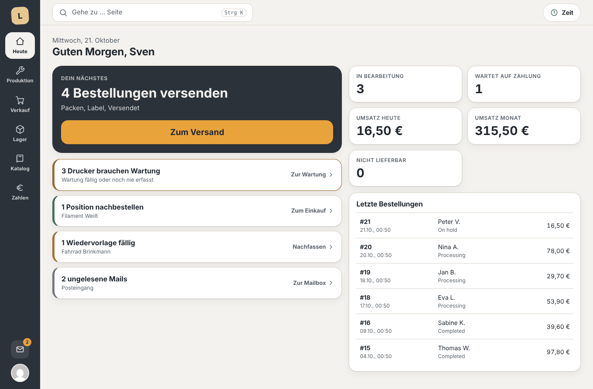
Die Seitenleiste: sechs Plätze
Links in der dunklen Leiste stehen sechs Plätze. Sie sind nach Aufgabe geordnet:
| Platz | Wofür | Wer arbeitet dort |
|---|---|---|
| Heute | Dein Start in den Tag: was als Nächstes dran ist, was Aufmerksamkeit braucht, wie der Tag im Shop läuft | alle |
| Produktion | Plan und Board, Drucker und Wartung, Soll gegen Ist, Kapazität, Druckjournal, Qualität | Werkstatt, Betriebsleitung |
| Verkauf | Versand, Aufträge, Picklisten, Shop-Bestellungen, Kunden (Kontakte / B2B, Loyalty), Kasse, Marketing | Versand, Betriebsleitung |
| Lager | Bestand, Lagerplätze und Picklisten, Scannen, Material, Einkauf, Bedarf | Werkstatt, Versand, Betriebsleitung |
| Katalog | Alle Produkte mit Stammdaten, Revisionen, Stückliste, Kalkulation; Konfigurator; AR-Ansicht | Fertigung, Betriebsleitung |
| Zahlen | Übersicht, Berichte und Kennzahlen, Buchhaltung | Verwaltung |
Unten in der Leiste liegen zwei weitere Knöpfe: der Briefumschlag öffnet die Mailbox (mit einer Zahl für ungelesene Mails), das Bild darunter öffnet das Profilmenü.
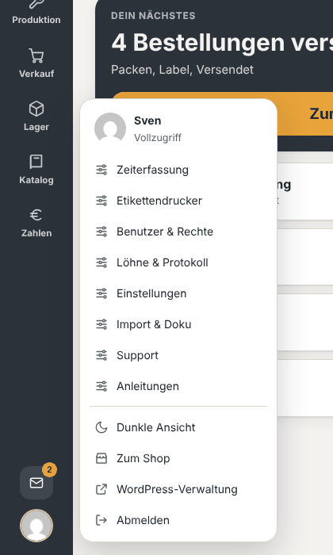
Reiter und Auswahl innerhalb eines Platzes
Jeder Platz hat oben Reiter, darunter bei Bedarf eine Auswahl aus kleinen runden Knöpfen. Beides zusammen bildet den Weg zu einer Seite. In dieser Anleitung steht er so:
Produktion → Drucker → 3D-Drucker & Wartung
Das heißt: Klicke links auf Produktion, oben auf den Reiter Drucker und darunter auf den runden Knopf 3D-Drucker & Wartung. Das erste Wort ist immer einer der Plätze, das zweite der Reiter, das dritte die Auswahl. Hat ein Reiter nur eine Seite, entfällt der dritte Teil.
| Platz | Reiter | Auswahl |
|---|---|---|
| Produktion | Plan und Board | Workflow · Produktion |
| Drucker | Druckfarm · 3D-Drucker & Wartung · Bambu-Lab-Drucker | |
| Soll gegen Ist | Soll gegen Ist · Kapazität | |
| Journal | Druckjournal · Qualität | |
| Verkauf | Bestellungen | Versand · Aufträge · Picklisten · Shop-Bestellungen |
| Kunden | Kontakte / B2B · Loyalty | |
| Kasse | – | |
| Marketing | – | |
| Lager | Bestand | Lager · Lagerplätze & Picklisten · Scannen |
| Material | – | |
| Einkauf | Einkauf · Bedarf | |
| Katalog | Produkte | Alle Produkte · Shop-Produkte |
| Konfigurator | – | |
| AR-Ansicht | – | |
| Zahlen | Übersicht | – |
| Berichte | Berichte · Reporting | |
| Buchhaltung | Belege · Rechnungen · Journal · EÜR · GoBD-Prüfung · Betriebsprüfung · Erfassen & ändern |
Dazu kommen die Seiten, die oben, unten oder im Profilmenü liegen:
- Zeit (oben rechts, mit Uhrsymbol): die Zeiterfassung mit Stempeluhr (Teil C). Läuft die Uhr, zählt der Knopf mit.
- Mailbox (Briefumschlag unten in der Leiste): Mailbox → Mailbox und Mailbox → Postfächer (Kapitel D.20).
- Profilmenü (Bild unten in der Leiste): Etikettendrucker, Benutzer & Rechte, Löhne & Protokoll, Einstellungen, Import & Doku, Support, Anleitungen.
Suche, Dunkelmodus und das Handy
- Seitensuche: Drücke Strg+K (am Mac ⌘+K) oder klicke oben in das Suchfeld, tippe ein paar Buchstaben des Seitennamens und bestätige mit Enter. So springst du ohne Umweg zu jeder Seite, zum Beispiel „Lager“ oder „Druckjournal“. Gesucht werden Seiten, keine Artikel oder Bestellungen.
- Dunkle Ansicht: im Profilmenü ein- und ausschaltbar.
- Am Handy sieht die Oberfläche anders aus: unten steht eine Leiste mit Heute, Produktion, Verkauf, Lager und Mehr. Unter Mehr liegt alles andere.
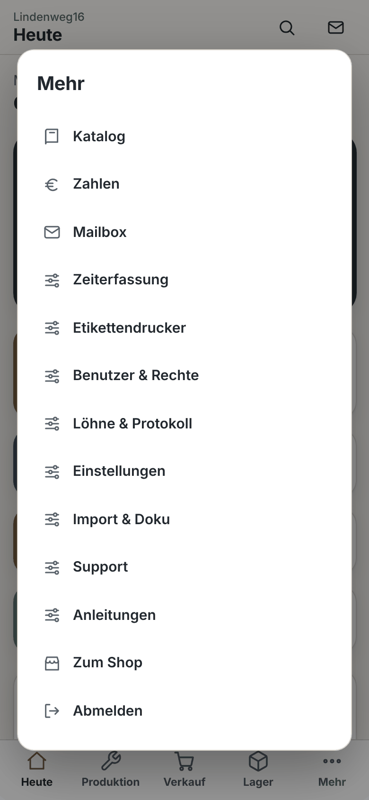
Was du nicht siehst, darfst du nicht. Fehlt dir ein Platz, ein Reiter oder eine Auswahl aus deiner Anleitung, fehlt dir das passende Recht. Das ist kein Defekt, sondern eine Einstellung – frag die Person, die im Plugin Vollzugriff hat (Kapitel C.9).
Eine Seite ist noch nicht ins ERP umgezogen und erscheint darin eingebettet: die Shop-Produkte. Sie funktioniert wie bisher; über Eigener Tab öffnest du sie ohne ERP-Rahmen. Die Kasse gibt es nur noch im ERP, nicht mehr im wp-admin.
3 Fünf Sätze, die für alle gelten
- Nichts wird gelöscht, alles wird korrigiert. Druckjobs, Lagerbewegungen und Chargen kannst du nicht wegradieren. Du stornierst sie mit einer Begründung, und beides bleibt stehen. So ist später nachvollziehbar, was wirklich passiert ist.
- Der Bestand ist die Summe aller Bewegungen. Es gibt kein Feld „Bestand“, das jemand von Hand verstellt. Stimmt eine Zahl nicht, fehlt eine Buchung – such die Buchung, nicht das Feld.
- Berechnetes wird nie gespeichert. Stückpreise, Herstellkosten, Maschinenstundensätze und Kennzahlen werden bei jedem Aufruf neu gerechnet. Ändert sich eine Grundlage, ändern sich alle Zahlen mit.
- Jede Eingabe wird geprüft. Wenn ein Formular meckert, hat es meistens recht. Lies die Meldung – sie steht in ganzen Sätzen da und sagt, was fehlt.
- Im Zweifel erfassen. Eine Buchung mit Bemerkung ist besser als keine Buchung. Eine fehlende Buchung fällt niemandem auf, eine falsche schon.
Produktion
Für alle, die drucken, entgraten, montieren und Teile ins Regal legen. Diese Anleitung setzt nichts voraus – außer dass du dich am Computer anmelden kannst.
A.1 Anmelden und die Oberfläche finden
Alles, was du für die Produktion brauchst, liegt im ERP. Das erreichst du über den Browser – Chrome, Firefox, Safari, egal.
- Öffne den Browser und tippe oben in die Adresszeile die Adresse der Website, dahinter
/erp. Also zum Beispiellindenweg16.de/erp. Dann Enter. - Es erscheint die Anmeldemaske von WordPress mit zwei Feldern. Oben trägst du deinen Benutzernamen ein, darunter dein Passwort. Klick auf Anmelden.
- Setz vorher einen Haken bei Angemeldet bleiben, wenn du am eigenen Rechner sitzt. Dann musst du das nicht jeden Tag machen. An einem Rechner, an dem mehrere Leute arbeiten, lässt du den Haken weg.
- Du landest auf Heute. Links in der dunklen Leiste stehen die Plätze. Für die Werkstatt sind vor allem zwei wichtig: Produktion (Schraubenschlüssel) und Lager (Karton).
Wenn irgendwo steht Produktion → Journal → Druckjournal, dann heißt das: links auf Produktion, oben auf den Reiter Journal, darunter auf den runden Knopf Druckjournal. Wie das genau aufgebaut ist, steht im Kapitel 2 ganz oben in dieser Anleitung.
Das ist Absicht. Je nach Rechteprofil blendet das ERP aus, was du nicht brauchst. Mit dem Profil Werkstatt siehst du zum Beispiel Workflow, Druckjournal, Qualität, Lager, Lagerplätze, Scannen und die Zeiterfassung – genau das, was in den Kapiteln A.2 bis A.8, A.12 und A.13 steht. Der Rest ist für die Betriebsleitung.
A.2 Heute: der Blick am Morgen
Heute
Das ist dein Startpunkt. Die Seite beantwortet drei Fragen: Was ist als Nächstes dran? Was braucht Aufmerksamkeit? Wie läuft der Tag?
- Die dunkle Karte „Dein Nächstes“ ist die wichtigste Aufgabe, die dir das ERP vorschlägt – zum Beispiel Platte 2 rüsten, Platte 3 melden oder 4 Bestellungen versenden. Der große Knopf darunter führt direkt dorthin.
- Die Hinweiskarten darunter haben links einen farbigen Streifen und je einen Knopf. Sie erscheinen nur, wenn etwas offen ist. Steht dort nichts, ist nichts zu tun.
- Die Kacheln rechts zeigen Bestellungen in Bearbeitung, Bestellungen, die auf Zahlung warten, Umsatz heute und im Monat und ob Artikel nicht lieferbar sind. Darunter stehen die letzten Bestellungen.
| Karte | Was sie bedeutet | Was du tust |
|---|---|---|
| Platte … rüsten / melden | Eine freigegebene Platte wartet auf dich, oder ein fertiger Druck wartet auf die Mengenmeldung | Kapitel A.3 |
| … Bestellungen versenden | Bestellungen sind bezahlt und warten auf Packen und Label | Teil B |
| … Drucker brauchen Wartung | Eine Wartung ist fällig oder wurde noch nie erfasst | Kapitel A.9 |
| … Positionen nachbestellen | Filament oder ein Kleinteil reicht nicht mehr lange | Kapitel A.8, Lager → Einkauf |
| … Lieferungen überfällig | Bestelltes Material ist nicht pünktlich angekommen | Betriebsleitung, Lager → Einkauf |
| … Rechnungen überfällig | Ein Händler hat eine Rechnung nicht bezahlt | Betriebsleitung, Kundenakte (Kapitel B.11) |
| … Wiedervorlagen fällig | Bei einem Händler sollte jemand nachfassen | Betriebsleitung |
| … ungelesene Mails | Im Posteingang liegt etwas | Kapitel D.20 |
A.3 Workflow: vom Bedarf zur Platte zum Bestand
Produktion → Plan und Board → Workflow
Das ist die Seite, an der gedruckt wird. Sie zeigt von links nach rechts den Weg jeder Platte: Bedarf (was gebaut werden müsste), Freigegeben (die Platte ist geplant und wartet), Im Druck, Ist melden (der Druck ist fertig, es fehlt die Meldung der Menge) und Eingelagert (fertig im Lager). Jede Karte hat einen nächsten Schritt.
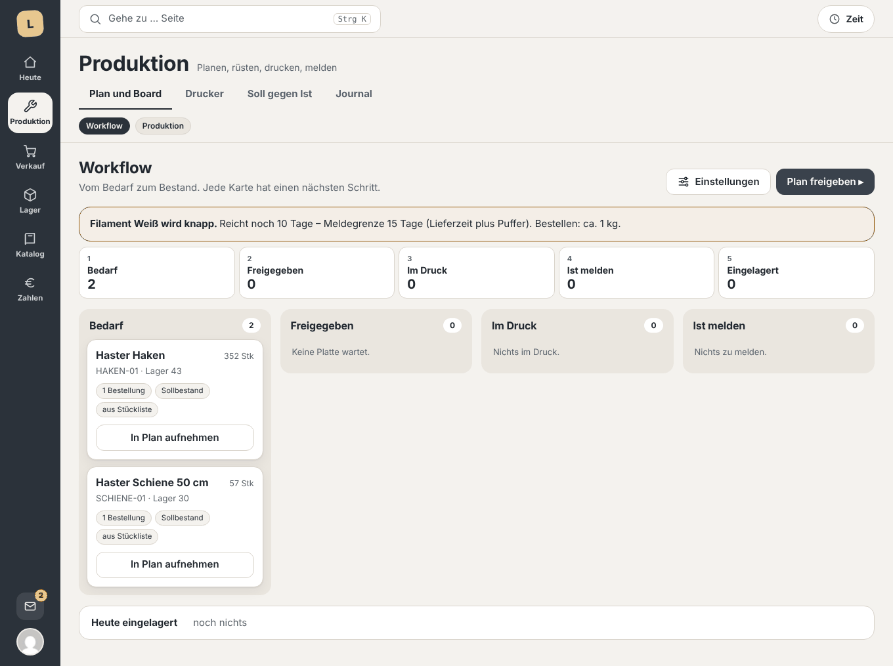
Eine rote oder orange Meldung ganz oben, etwa „Filament Weiß wird knapp“, ist der Beschaffungsalarm (Kapitel A.8).
Wie der Bedarf entsteht
Das ERP rechnet ihn selbst aus drei Quellen:
- offene Bestellungen – das Verbindlichste, was es gibt,
- die Unterdeckung gegenüber dem Sollbestand (Kapitel A.12),
- was in der Stückliste eines Sets steckt, das gebaut werden soll.
Davon zieht es ab, was schon im Lager liegt oder in laufenden Aufträgen steckt. Was übrig bleibt, steht als Karte da. Artikel ohne hinterlegte Projektdatei (3MF) lassen sich nicht in einen Plan aufnehmen; an der Karte steht dann ein Hinweis (Kapitel A.11).
Schritt 1: Plan freigeben
- Klick oben rechts auf Plan freigeben ▸. (Den Knopf siehst du nur mit dem Recht Workflow: Plan freigeben.) Du kannst vorher auf den Karten In Plan aufnehmen klicken, dann ist die Auswahl schon getroffen.
- Im Fenster stehen die Artikel mit einer Menge. Setz Haken bei dem, was gebaut werden soll, und ändere die Menge, wenn du weniger oder mehr willst.
- Wähle den Drucker. Sein Druckbett bestimmt, wie viele Teile auf eine Platte passen.
- Klick auf Platten berechnen. Das ERP ordnet die Teile anhand ihrer echten Umrisse auf dem Bett an und erzeugt die Platten.
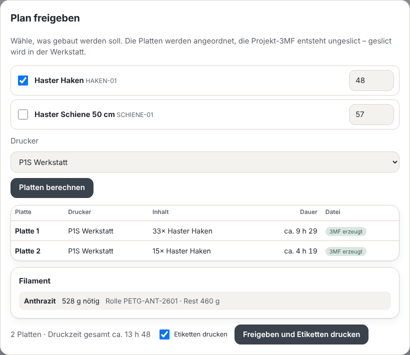
- Prüf Platten und Material. Reicht eine Rolle nicht, steht das als Warnung dabei.
- Lass den Haken bei Etiketten drucken gesetzt, wenn ein Etikettendrucker eingerichtet ist (Kapitel D.15). Jede Platte bekommt ein Etikett mit QR-Code, das du an die Platte oder den Drucker klebst.
- Lass den Haken bei Automatisch slicen und an den Drucker gesetzt, wenn ein Slicing-Worker läuft (Kapitel D.15): Jede Platte wird geslict und landet von selbst in der Warteschlange ihres Druckers. Gedruckt wird erst, wenn die Platte am Drucker als frei bestätigt ist. Ohne Haken slicest du später von der Plattenseite aus – automatisch oder von Hand in Bambu Studio.
- Klick auf Freigeben. Die Platten stehen jetzt in der Spalte Freigegeben.
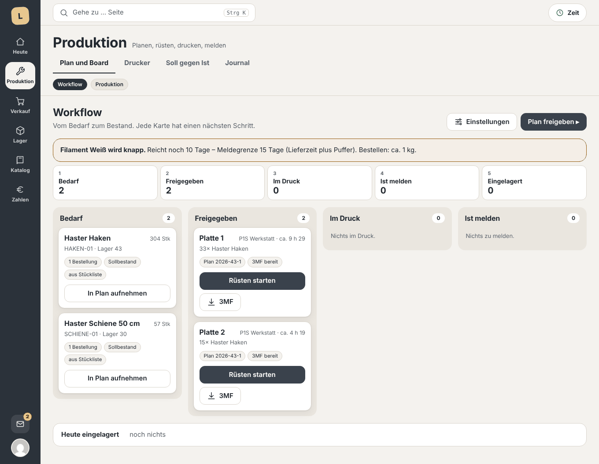
Schritt 2: Rüsten, drucken, melden
Ab jetzt arbeitest du an der Platte – am besten mit dem Handy in der Hand. Das Etikett mit dem QR-Code öffnet direkt die Seite der Platte. Du kannst sie auch am Computer über die Karte öffnen (Klick auf Platte 1).
| Station | Was du siehst | Dein Knopf |
|---|---|---|
| Freigegeben | Schritt 1 „Datei an den Drucker“: der Knopf Automatisch slicen und an den Drucker bzw. der Stand von Slicen und Warteschlange (siehe unten), dazu 3MF herunterladen für den Weg von Hand; Schritt 2 „Material bereit?“ mit der Rolle und dem Bedarf in Gramm; ggf. Platte ist frei | Rüsten starten ▶ – ab dem Tippen läuft die Rüstzeit |
| Rüsten | Die laufende Rüstzeit | Druck gestartet ▶ – wird automatisch erkannt, wenn der Drucker verbunden ist (Kapitel A.10) |
| Im Druck | Fortschrittsbalken, Restzeit, Temperaturen (live vom Bambu-Drucker oder geschätzt nach Zeit), Rüst- und Druckzeit | Druck fertig ▶; oder Direkt Ist-Menge melden, wenn du den Druck nicht mitgezählt hast |
| Ist melden | Je Artikel die geplante Menge, daneben Zähler für Gut und Ausschuss, die Rolle mit dem geschätzten Verbrauch | Melden und einlagern ✓ |
| Erledigt | Bestätigung, was ins Lager gebucht wurde, und wie viel Filament abgezogen wurde | Ggf. die nächste Platte vorbereiten |
Wurde die Platte automatisch geslict, zeigt ihre Seite, was im Hintergrund passiert:
| Anzeige | Bedeutung | Was du tust |
|---|---|---|
| Wird geslict | Der Slicing-Worker hat die Platte (noch nicht) abgeholt; der Text sagt, welches von beiden | Warten. Passiert lange nichts, läuft der Worker nicht. |
| Slicen fehlgeschlagen | Der Grund steht darunter (z. B. kein Slicing-Profil für das Material) | Ursache beheben, dann Erneut slicen |
| In der Warteschlange | Die Druckdatei wartet auf den Drucker – bei belegter Platte, bis sie als frei bestätigt ist | Platte räumen, Platte ist frei tippen |
| Wird übertragen / druckt | Die Bridge hat übernommen; Druckstart und -ende schalten die Platte von selbst weiter | Nichts |
| Druck fehlgeschlagen | Der Drucker hat den Start abgelehnt, etwa weil das Filament nicht im AMS liegt; der Grund steht darunter | Ursache beheben, dann Erneut in die Warteschlange |
| Unklar | Niemand weiß sicher, wie der Druck ausging | Am Drucker nachsehen und unter Bambu-Lab-Drucker → Aufträge klären |
Alle Knöpfe an der Platte sind groß gebaut und mit Handschuhen bedienbar. Die Zeiten laufen auf dem Server, nicht auf dem Handy – ein gesperrter Bildschirm unterbricht nichts.
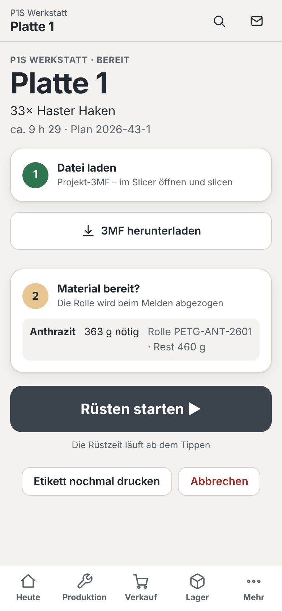
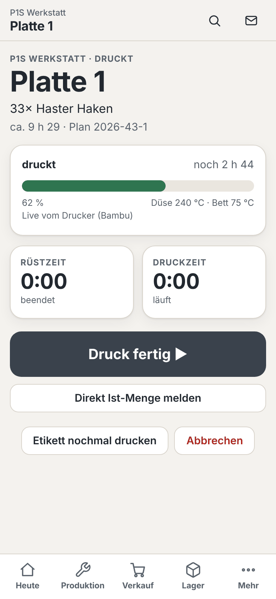
Schritt 3: Die Menge melden
Der Druck ist fertig. Jetzt zählst du, was wirklich gut geworden ist.
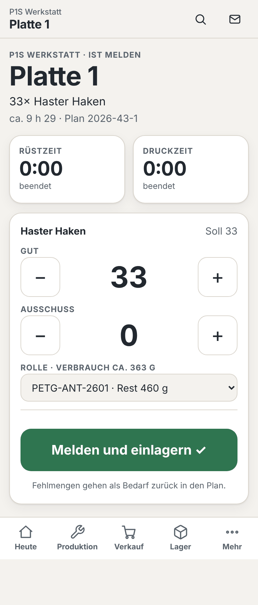
- Bei Gut steht die geplante Menge. Zähl nach und korrigiere, wenn weniger brauchbar ist.
- Trag bei Ausschuss ein, wie viele Teile kaputt sind. Sobald Ausschuss da ist, verlangt das Formular eine Fehlerursache. Ohne Ursache lässt sich die Quote später nicht auswerten.
- Prüf die Rolle. Vorgeschlagen ist die älteste mit genug Rest. Hast du von einer anderen gedruckt, wähl sie aus oder scann das Etikett der Spule ins Feld daneben – nur so stimmt später die Rückverfolgung (Kapitel A.13). Eine gescannte Spule gilt danach als in Benutzung.
- Prüf Einlagern in: Vorbelegt ist der Standardplatz des Artikels. Legst du die Teile woanders hin, wähl den Platz – der Bestand je Lagerplatz stimmt dann, und die Pickliste findet sie.
- Optional: eine Notiz, etwa „Haftung schlecht“. Sie steht an der Platte und im Druckjournal.
- Tipp auf Melden und einlagern ✓.
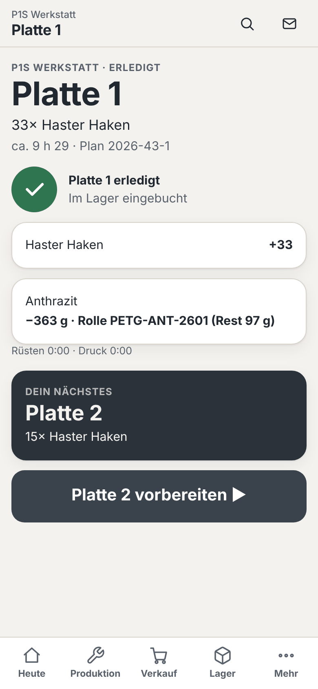
Mit dem Melden passiert in einem Rutsch: Der Lagerzugang der guten Teile wird auf den gewählten Lagerplatz gebucht, eine Charge für die Rückverfolgung entsteht, das Filament wird von der Rolle abgezogen, die eingebauten Kleinteile werden verbraucht, die Zeiten gehen in die Auswertung Soll gegen Ist, und der Ausschuss geht als Bedarf zurück in den Plan. Fehlmengen verschwinden also nicht, sie kommen wieder.
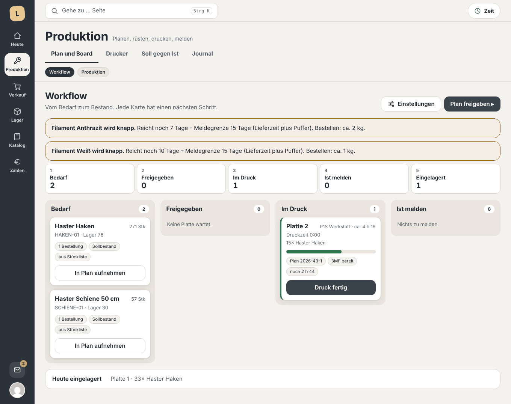
Auf der Seite der Platte liegt unten der Knopf Abbrechen (nur mit dem Recht, Pläne freizugeben). Es wird nichts gebucht. Die Platte bleibt als abgebrochen stehen, der Bedarf kommt zurück. Daneben gibt es Etikett nochmal drucken, wenn das Etikett verloren ging.
Einstellungen des Workflows
Oben rechts auf der Seite liegt Einstellungen. Das ist Sache der Betriebsleitung; es steht hier, damit du weißt, woher Etikett und Alarm kommen.
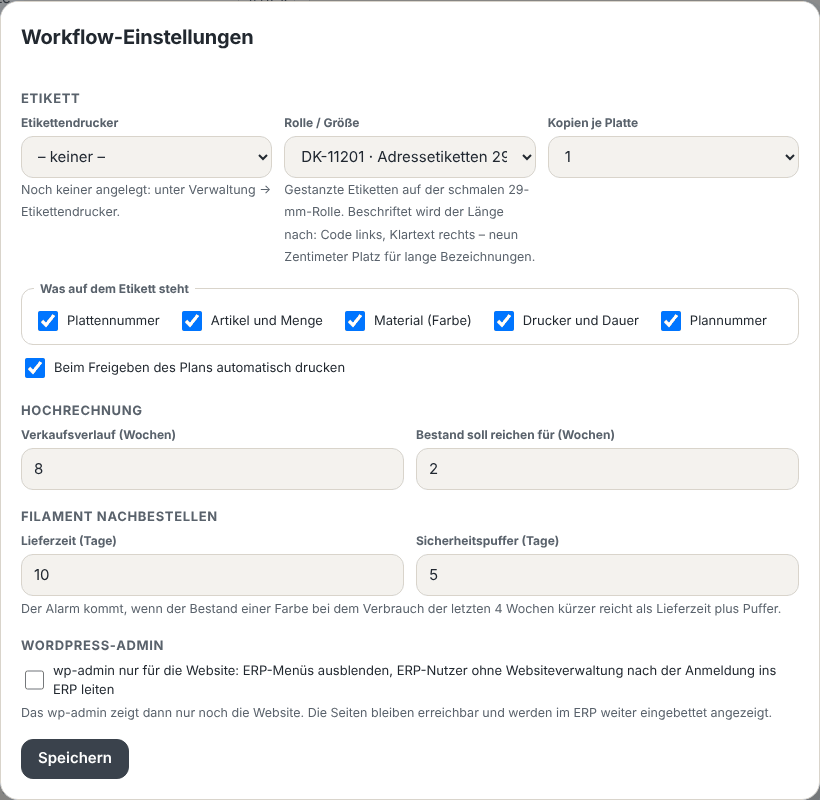
| Einstellung | Wirkung |
|---|---|
| Etikettendrucker, Rolle / Größe, Kopien | Wohin die Plattenetiketten gehen und wie sie aussehen. Der Drucker muss vorher unter Profilmenü → Etikettendrucker angelegt sein. |
| Beim Freigeben des Plans automatisch drucken | Setzt den Haken Etiketten drucken beim Freigeben vor. |
| Verkaufsverlauf (Wochen) und Bestand soll reichen für (Wochen) | Wie weit der Bedarf aus dem Verkauf der letzten Wochen in die Zukunft gerechnet wird. |
| Lieferzeit und Sicherheitspuffer beim Filament | Der Alarm kommt, sobald eine Farbe bei dem Verbrauch der letzten vier Wochen kürzer reicht als Lieferzeit plus Puffer. |
| wp-admin nur für die Website | Leitet ERP-Nutzer ohne Websiteverwaltung nach der Anmeldung ins ERP um und blendet die klassischen Menüs aus. |
Neben Workflow gibt es unter Produktion → Plan und Board → Produktion die ältere Produktionsplanung mit Druckaufträgen des Produktionsmoduls. Für die tägliche Arbeit brauchst du sie nicht; der Workflow ersetzt sie.
A.4 Bedarf: was heute entstehen muss
Lager → Einkauf → Bedarf
Der Workflow zeigt dir den Bedarf an Drucksachen. Die Seite Bedarf zeigt ihn für alles – auch für Sets, die montiert, und für Zukaufteile, die bestellt werden müssen. Sie schaut sich an, was bestellt ist, welcher Sollbestand vereinbart wurde, was im Regal liegt und was schon in Arbeit ist – und sagt dir, was übrig bleibt.

| Angabe | Bedeutung |
|---|---|
| drucken · montieren · bestellen | Die Art der Arbeit. Eine Karte mit drucken führt dich zum Workflow, bestellen zum Einkauf. |
| Bedarf | Wie viele Stück insgesamt gebraucht werden |
| Bestand | Wie viele davon schon im Lager liegen |
| in Arbeit | Wie viele in laufenden Platten oder Aufträgen stecken |
| Fehlt | Die Zahl, die zählt: so viele musst du machen oder bestellen |
| Wofür | Woher der Bedarf kommt – Bestellnummer oder Sollbestand |
Mit den beiden Knöpfen oben wählst du, ob die Wunschliste (Artikel, die Kunden sich gemerkt haben) mitzählt oder nur Bestellungen und Sollbestand.
Arbeite von oben nach unten ab. Was in der Stückliste am tiefsten steckt, steht oben: Ein Set kannst du erst montieren, wenn Haken und Schiene gedruckt sind – deshalb stehen Haken und Schiene über dem Set. Der Abschnitt Kleinteile sagt dir außerdem, ob Schrauben, Dübel und Kartons für die geplante Arbeit reichen. Steht dort etwas, sag der Betriebsleitung Bescheid, bevor du anfängst.
A.5 Fertigungsaufträge: Sets montieren und Aufträge anlegen
Lager → Bestand → Lagerplätze & Picklisten → Fertigungsaufträge
Für alles, was nicht auf einer Platte entsteht, gibt es Aufträge. Ein Auftrag ist ein Zettel im System: „Von diesem Artikel sollen so viele Stück in dieser Farbe entstehen.“ Es gibt zwei Sorten:
| Sorte | Wofür | Kürzel |
|---|---|---|
| Fertigungsauftrag | Etwas, das aus vorhandenen Teilen zusammengebaut wird – ein Set | FA… |
| Druckauftrag | Etwas, das aus dem Drucker kommt, wenn du ohne den Workflow arbeitest. Er wird im Druckjournal gebucht. | DA… |

So legst du einen Auftrag an
- Klick auf Neuer Auftrag.
- Wähle die Art: Fertigungsauftrag oder Druckauftrag.
- Wähle den Artikel. Es stehen nur Artikel zur Wahl, die zur Art passen – ein Set kannst du nicht drucken, einen Rohling nicht montieren.
- Trag die Menge bei Stück ein. Nimm die Zahl aus der Spalte Fehlt der Bedarfsseite.
- Wähle die Farbe und klick auf Auftrag anlegen.
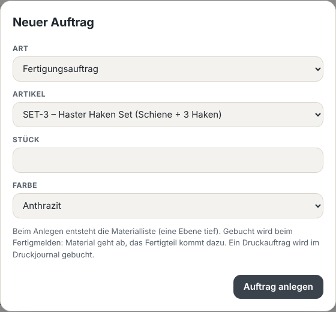
Beim Fertigungsauftrag rechnet das ERP sofort die Materialliste aus und zeigt sie in der Zeile an: 6× SCHIENE-01 · 18× HAKEN-01 · 12× SCHR-M4-40 …. Gebucht wird davon noch nichts – das passiert erst beim Fertigmelden.
Starten – und warum das wichtig ist
Klick beim Auftrag auf Starten. Damit passiert dreierlei (ein Druckauftrag lässt sich so ebenfalls starten; gebucht wird er danach über Im Druckjournal buchen):
- Der Auftrag wechselt von offen auf läuft – jeder sieht, dass daran gearbeitet wird.
- Die Uhr am Auftrag läuft mit. Aus ihr entstehen später die Ist-Zeiten und die Lohnkosten je Auftrag.
- Die Menge zählt auf der Bedarfsseite als in Arbeit und wird nicht doppelt eingeplant.
Musst du zwischendurch etwas anderes tun, klick auf Pausieren (so heißt der Knopf, solange die Uhr läuft). Die Uhr hält an und läuft beim nächsten Starten weiter. Die Zeit summiert sich – sie fängt nicht von vorn an. In der Zeile steht rechts neben dem Status die bisherige Zeit.
A.6 Druckjournal: einen Druck nachtragen
Produktion → Journal → Druckjournal
Der Workflow (A.3) bucht Drucke selbst, sobald du eine Platte meldest. Das Druckjournal ist die Liste aller Drucke – und der Ort, an dem du einen Druck von Hand erfasst: wenn du ohne Plan gedruckt hast, einen Druckauftrag aus A.5 abschließt oder etwas von gestern nachträgst. Aus einem einzigen Formular entstehen automatisch:
- der Lagerzugang über die guten Teile,
- eine Charge für die Rückverfolgung,
- der Filamentverbrauch,
- der Verbrauch der eingebauten Kleinteile,
- die Betriebsstunden des Druckers,
- die Ausschussquote in den Kennzahlen.

Feld für Feld:
| Feld | Was du einträgst | Warum |
|---|---|---|
| Aus Druckauftrag | Nur wenn der Druck zu einem offenen Druckauftrag gehört. Dann füllen sich Drucker, Artikel, Farbe und Menge von selbst. | Mit dem Buchen wird der Auftrag fertiggemeldet |
| Datum | Steht schon auf heute. Nur ändern, wenn du etwas von gestern nachträgst. | Bestimmt die Kalenderwoche in den Auswertungen |
| Drucker | Das Gerät, auf dem gedruckt wurde | Zählt die Betriebsstunden und den Maschinenstundensatz |
| Artikel | Was gedruckt wurde. In Klammern steht die aktive Revision, z. B. (v1.1) | Aus der Revision kommen Gewicht und Druckzeit je Teil |
| Farbe | Die Farbe des Filaments | Bestand wird je Farbe geführt |
| Filamentcharge | Die Rolle, von der du gedruckt hast | Nur damit ist im Ernstfall nachvollziehbar, aus welchem Material ein Teil ist |
| Teile geplant | Wie viele auf der Platte waren | Grundlage der Ausschussquote |
| Teile in Ordnung | Wie viele brauchbar sind | Nur diese gehen in den Bestand |
| Druckzeit (h) | Die Zeit, die der Drucker angezeigt hat, in Stunden mit Komma – 6,9 für 6 Stunden 54 Minuten | Maschinenkosten und Auslastung |
| Plattenwechsel | Wie oft du die Platte gewechselt hast. Meist 1. | Kennzahl „Teile je Plattenwechsel“ |
| Fehlerursache | Nur nötig, wenn Teile kaputt sind | Ohne Ursache lässt sich Ausschuss später nicht auswerten |
| Bemerkung | Freitext, alles was auffiel | Hilft dem nächsten, der dasselbe Problem hat |
- Fülle die Felder aus – von oben nach unten.
- Sind alle Teile in Ordnung, trag bei Teile geplant und Teile in Ordnung dieselbe Zahl ein und lass die Fehlerursache auf keine.
- Sind Teile kaputt, trag bei in Ordnung die kleinere Zahl ein und wähle eine Fehlerursache. Ohne Ursache nimmt das Formular die Eingabe nicht an.
- Klick auf Druckjob buchen.
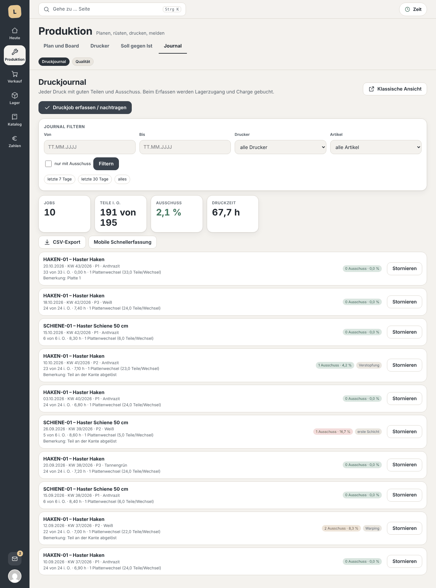
Oben über der Liste stehen die Summen (Jobs, Teile in Ordnung, Ausschuss, Druckzeit) für das, was der Filter gerade zeigt. Mit letzte 7 Tage, letzte 30 Tage oder alles stellst du den Zeitraum ein, mit nur mit Ausschuss suchst du die Problemfälle. CSV-Export lädt die Liste als Tabelle herunter.
Es gibt keinen Löschknopf, und das ist Absicht. Klick in der Zeile auf Stornieren, trag eine Begründung ein (zum Beispiel „Stückzahl vertippt, waren 12 statt 21“) und bestätige. Der Lagerzugang wird gegengebucht, die Kleinteile kommen zurück, die Charge wird storniert. Der Job selbst bleibt im Journal stehen, und du buchst danach neu. So ist die Bestandsrechnung wieder richtig, und man sieht trotzdem, was passiert ist.
A.7 Am Drucker mit dem Handy buchen
Am Gerät steht selten ein Computer. Deshalb gibt es eine eigene, sehr kurze Seite fürs Handy: die mobile Schnellerfassung.
Wie du sie öffnest
- Am schnellsten: Am Drucker klebt ein Aufkleber mit QR-Code (Kapitel A.9). Handykamera drauf halten, auf den Hinweis tippen – die Seite öffnet sich mit dem richtigen Drucker schon eingestellt.
- Ohne Aufkleber: Am Computer unter Produktion → Journal → Druckjournal auf Mobile Schnellerfassung klicken, oder am Handy die Adresse der Website mit
/betrieb-erfassen/eintippen. Leg sie dir einmal als Lesezeichen auf den Startbildschirm.

- Der Reiter Druckjob ist schon offen.
- Drucker und Artikel sind vorbelegt – meistens stimmt es schon. Wenn nicht, tipp drauf und ändere es.
- Stell mit − und + ein, wie viele Teile in Ordnung sind.
- Nur wenn etwas kaputt ist: Fehlerursache auswählen.
- Tipp auf den großen Knopf Buchen. Fertig.
Unter dem Formular steht dieser Link. Damit stellst du dauerhaft ein, welcher Drucker, welcher Artikel und welche Menge beim Öffnen schon eingetragen sind. Wenn du drei Wochen lang dasselbe druckst, sparst du dir damit jedes Mal vier Tipper.
Jede Buchung wandert zuerst in eine Warteschlange im Browser und verschwindet erst, wenn der Server sie bestätigt hat. Fällt im Keller das WLAN aus, bleibt die Eingabe stehen und wird später gesendet. Das gilt auch für die Platten-Seite aus A.3.
A.8 Montieren und fertigmelden
Ein Set kommt nicht aus dem Drucker – es wird aus Teilen zusammengebaut, die schon im Regal liegen. Der Ablauf:
- Auf Lager → Bestand → Lagerplätze & Picklisten → Fertigungsaufträge den Auftrag suchen.
- In der Zeile steht unter Material, was du brauchst. Hol es aus dem Regal. Die Lagerplätze stehen auf den Etiketten am Fach.
- Auf Starten klicken, damit die Uhr läuft.
- Zusammenbauen.
- Im kleinen Zahlenfeld neben dem Knopf eintragen, wie viele Stück wirklich fertig geworden sind – normalerweise steht dort schon die geplante Menge.
- Auf Fertigmelden klicken.
Mit dem Fertigmelden bucht das ERP in einem Rutsch: das verbaute Material geht ab, die fertigen Sets kommen zu, die gestoppte Zeit wird dem Auftrag zugeschrieben.
Trag die wirkliche Menge ein, nicht die geplante. Der Auftrag bleibt dann mit dem Rest offen, und der Bedarf zeigt weiterhin an, was fehlt. Wer die Sollmenge einträgt, um „den Haken zu setzen“, erzeugt Bestand, der nicht existiert – und der fällt erst beim Packen auf, wenn der Kunde schon wartet.
A.9 Material: Filament und Kleinteile
Lager → Material
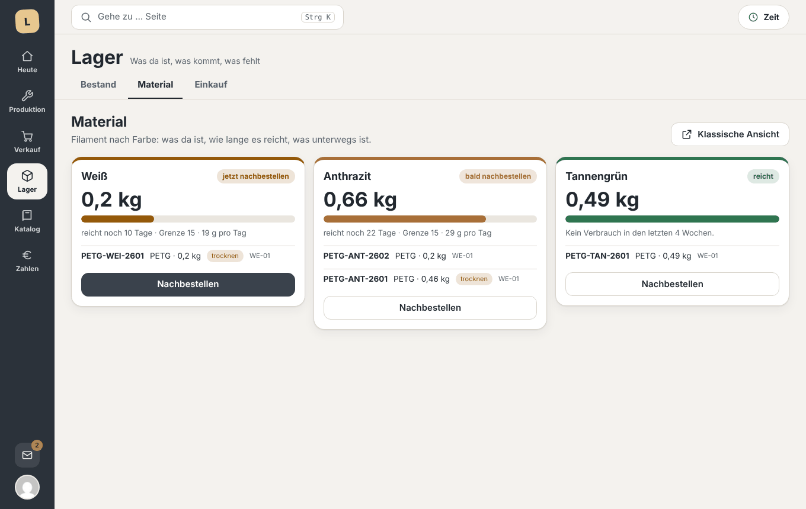
Das Schild oben rechts auf jeder Karte sagt, was zu tun ist: reicht, bald nachbestellen oder jetzt nachbestellen. „Jetzt“ heißt: Der Vorrat reicht kürzer als Lieferzeit plus Sicherheitspuffer. Bei Rollen, die noch trocknen müssen, steht trocknen dabei.
Nachbestellen und Wareneingang
- Klick auf der Karte der Farbe auf Nachbestellen. Darunter klappt ein Formular auf.
- Trag die Menge (in kg), den Lieferanten, den Preis netto je kg und das erwartete Lieferdatum ein. Menge und Preis sind aus der letzten Bestellung vorbelegt.
- Klick auf Bestellt ✓. Die Bestellung steht jetzt auf der Karte als Unterwegs. (Dasselbe siehst du auf Lager → Einkauf → Einkauf in der Spalte Unterwegs.)
- Kommt die Rolle an, trägst du bei der Bestellung die gelieferte Menge ein, wählst das Material und schreibst den Chargencode auf (leer lassen = das ERP vergibt einen). Dann klickst du auf Eingegangen ✓. Erst jetzt ändert sich der Bestand – und die Rolle entsteht als Charge. Ein zweiter Klick auf denselben Eingang wird abgewiesen.
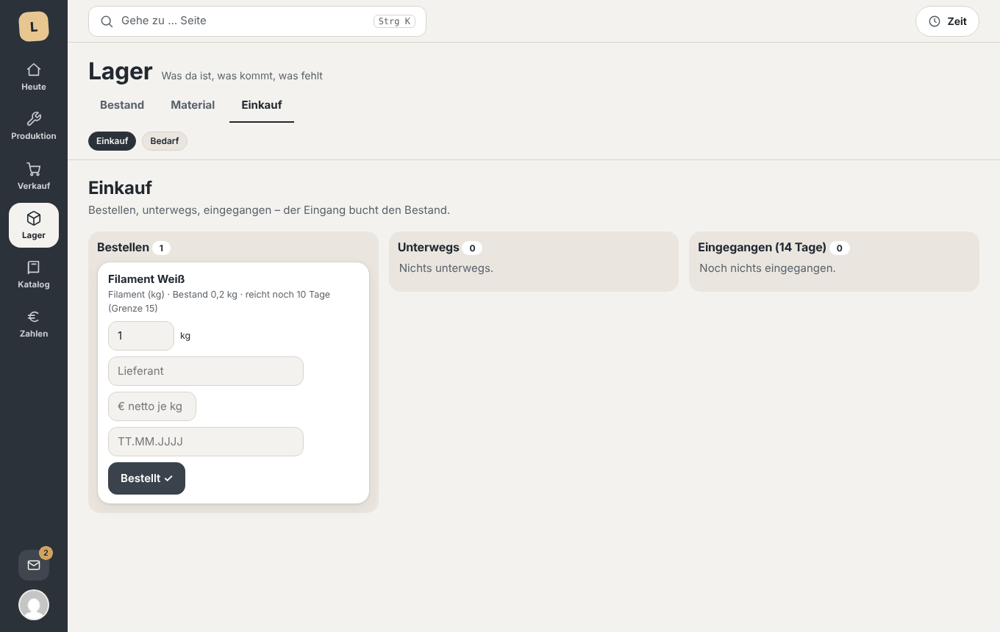
Wenn ein Kunde reklamiert, ist die erste Frage: aus welchem Material war das Teil? Über die Charge findest du in zwei Klicks alle Teile derselben Rolle und alle Bestellungen, in denen sie steckten (Kapitel A.13). Jede Rolle, die ins Haus kommt, braucht deshalb einen eindeutigen Code, den du mit Stift auf die Rolle schreibst. Bewährt hat sich MATERIAL-FARBE-JAHR NUMMER, zum Beispiel PETG-ANT-2601. Zweimal derselbe Code geht nicht.
Weiter unten im Lager, unter Lager → Bestand → Lager → Kleinteile & Kartons, stehen Schrauben, Dübel, Kartons und Klebeband. Wareneingang und Verbrauch schreiben deren Bestand fort; Verbrauchsmaterial wie Karton und Füllstoff wird je Bestellung pauschal abgebucht. Wenn ein Vorrat zur Neige geht, meldet sich der Beschaffungsalarm von selbst.
A.10 Drucker und Wartung
Produktion → Drucker → 3D-Drucker & Wartung
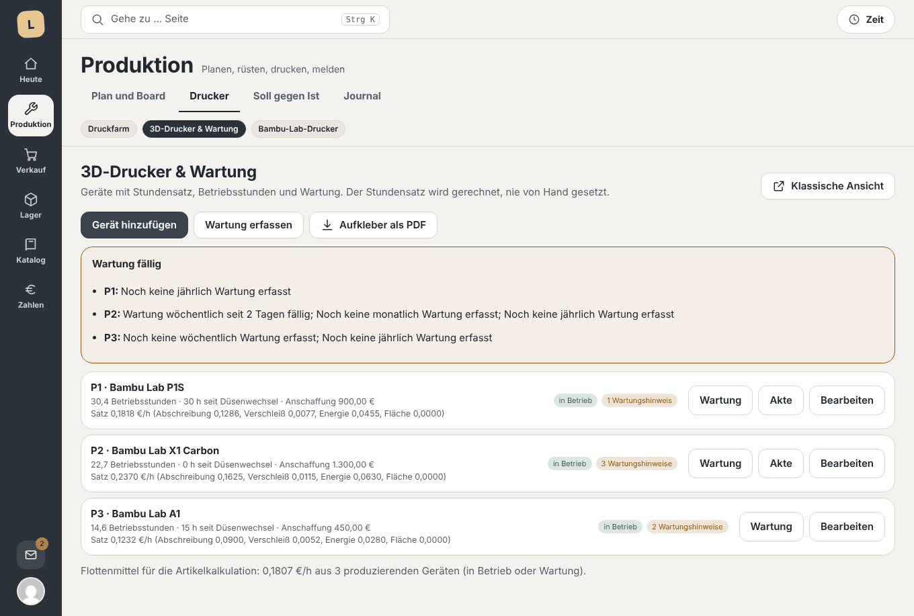
Der Kasten ganz oben, Wartung fällig, nennt je Gerät, was ansteht. Daneben stehen drei Knöpfe: Gerät hinzufügen, Wartung erfassen und Aufkleber als PDF.
Eine Wartung erfassen
- Klick auf Wartung erfassen (oder in der Zeile des Geräts auf Wartung).
- Wähle das Gerät und das Intervall: wöchentlich, monatlich, jährlich, Verschleiß oder Saison.
- Jetzt erscheint die passende Checkliste. Arbeite sie am Gerät ab und hak jeden Punkt an, den du wirklich gemacht hast.
- Wenn du ein Teil getauscht hast, trag es bei Ersatzteil ein.
- Beim Düsenwechsel setz zusätzlich den Haken Düse gewechselt – damit merkt sich das Gerät seinen Zählerstand.
- Klick auf Wartung erfassen. Unter dem Knopf steht mitlaufend, wie viele Punkte schon erledigt sind.
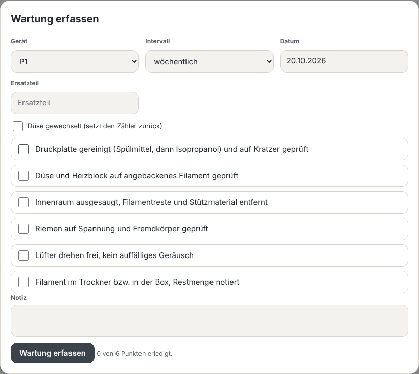
Wöchentlich, monatlich und jährlich nimmt das Formular nur an, wenn jeder Punkt gehakt ist – und es sagt dir namentlich, welche fehlen. Das ist kein Schikane-Formular: Die Liste ist der Nachweis, dass die Wartung wirklich stattgefunden hat. Bist du noch nicht fertig, mach erst die Arbeit und trag danach ein. Für eine Reparatur zwischendurch nimmst du Verschleiß – dort ist keine Liste vorgeschrieben, dafür gehören Ersatzteil und Notiz ausgefüllt.
Die längeren Intervalle enthalten die kürzeren: Wer monatlich wartet, saugt vorher aus. Deshalb wird bei „monatlich“ auch die Wochenliste mit abgefragt.
Gerät anlegen und Bearbeiten
Mit Gerät hinzufügen oder Bearbeiten (Recht Stammdaten ändern) pflegst du die Daten, aus denen der Stundensatz entsteht: Anschaffungspreis, Lebensdauer, Stromkosten, Ersatzteile pro Jahr, geplante Betriebsstunden pro Jahr. Leere Felder nehmen die globale Annahme aus den Einstellungen (Kapitel D.5); der Wert steht jeweils als Hinweis unter dem Feld. Jede Änderung braucht eine Begründung und steht im Protokoll.
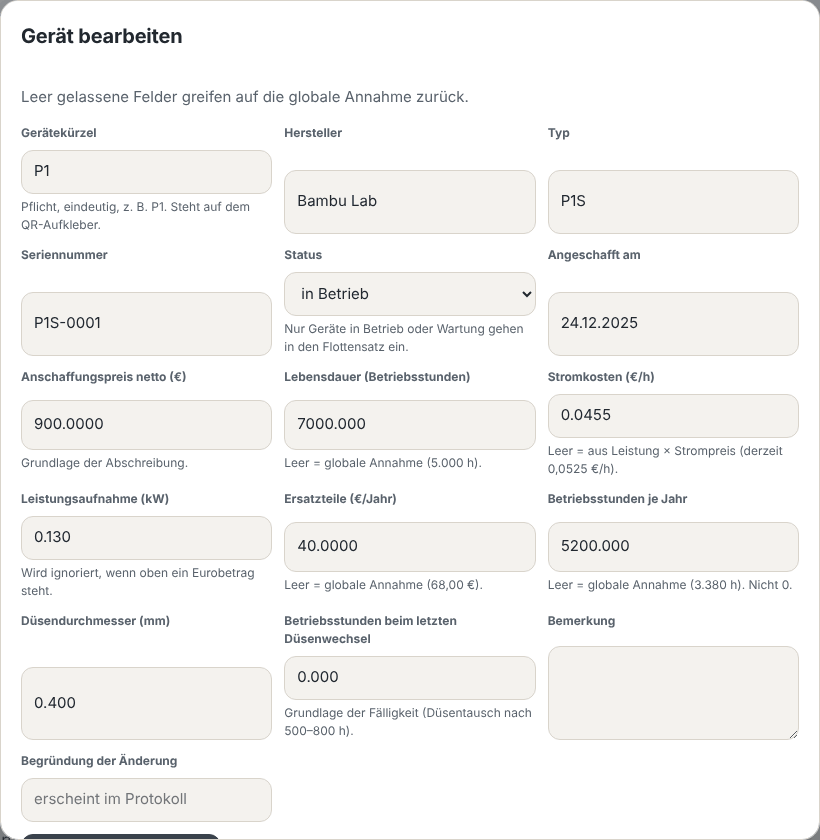
Die Druckerakte
Bei Geräten, die mit einem Bambu-Drucker verknüpft sind, führt Akte zur Druckerakte: Druckzeit der Woche, die aktuelle Platte, Betriebsstunden, fällige Wartung, der Verlauf der letzten Platten mit Soll- und Ist-Zeit und die Verbindung zum Drucker.
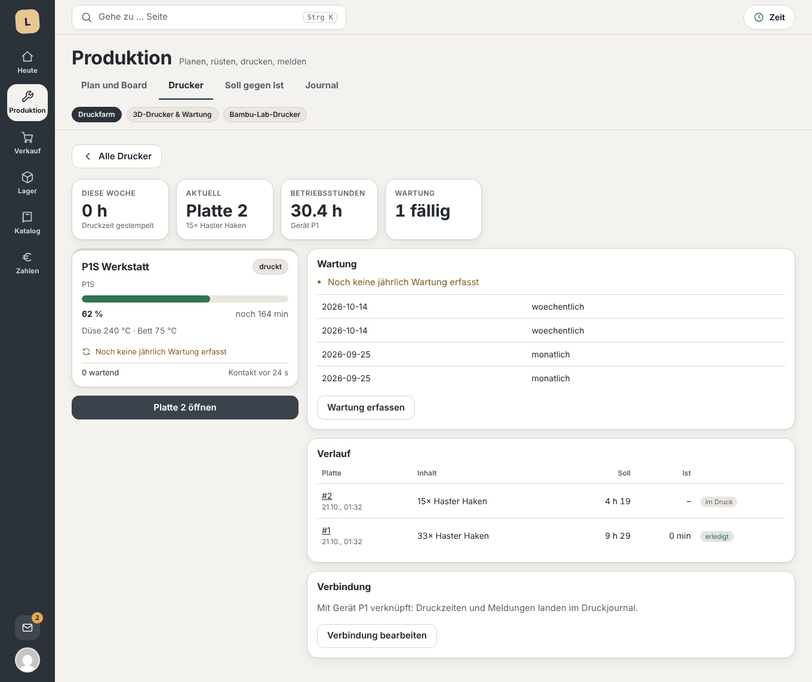
Aufkleber für die Geräte
Aufkleber als PDF erzeugt für jedes Gerät einen Aufkleber mit QR-Code im Rollenformat DK-11201 – dasselbe, das auch Lagerplätze und Artikel benutzen, damit im Brother nur eine Rolle liegen muss. Kleb ihn an das Gerät: Dann ist die Handy-Erfassung (Kapitel A.7) einen Scan entfernt.
A.11 Bambu-Lab-Drucker und Druckfarm
Produktion → Drucker → Druckfarm · Produktion → Drucker → Bambu-Lab-Drucker
Bis hierher war der Drucker ein Gerät, dessen Ergebnis du meldest. Ein Bambu-Lab-Drucker im LAN-Modus kann mehr: Das ERP schickt ihm die Druckdatei, startet den Druck, sieht Fortschritt und Restzeit und trägt am Ende die tatsächliche Druckzeit selbst ein. Dafür läuft im Betrieb ein kleiner Vermittler auf einem Raspberry Pi, die Bambu-Bridge – eingerichtet hat sie die Verwaltung (Kapitel D.15). Für dich zählt nur, was auf der Seite passiert.
Die Druckerkarte lesen
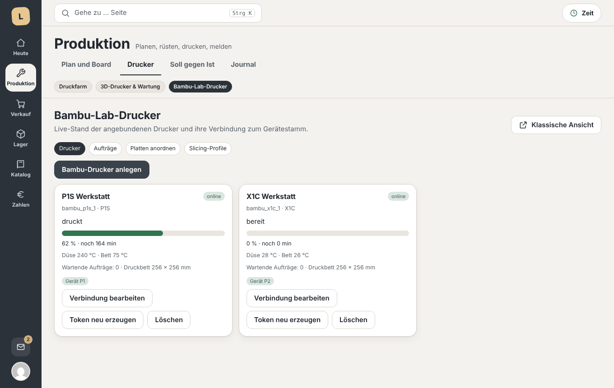
| Angabe | Bedeutung |
|---|---|
| online / offline | Online heißt: Der Pi meldet sich regelmäßig. Offline heißt: seit einigen Minuten kein Kontakt – Pi aus, Netz weg oder Dienst gestoppt. Dann passiert gar nichts, auch kein Druck. Wie lange der letzte Kontakt her ist, steht dabei. |
| Zustand | bereit, druckt, bereitet vor, pausiert, fertig oder Fehler. Steht dort Drucker nicht erreichbar, läuft die Bridge, findet aber den Drucker im Netz nicht: Gerät aus, andere IP-Adresse oder falscher Zugangscode. |
| Balken, Temperaturen | Fortschritt und Restzeit; Düse und Bett live. |
| Wartende Aufträge, Druckbett | Wie viele Druckdateien in der Warteschlange dieses Druckers liegen und wie groß sein Bett ist. |
| Gerät P1 | Mit welchem Gerät aus 3D-Drucker & Wartung er verknüpft ist. Nur dann landen Zeiten im Druckjournal und Platten lassen sich auf ihn einplanen. Fehlt die Verknüpfung, steht eine Warnung auf der Karte. |
| AMS-Filamente, Kamera | Wenn ein AMS angeschlossen ist, siehst du dessen Fächer; bei der X1-Serie kommt alle paar Sekunden ein Kamera-Standbild. |
Dieselben Karten ohne Formulare drumherum zeigt Produktion → Drucker → Druckfarm – gedacht für einen Bildschirm in der Werkstatt. Mit Vollbild-Anzeige füllen sie den ganzen Schirm.
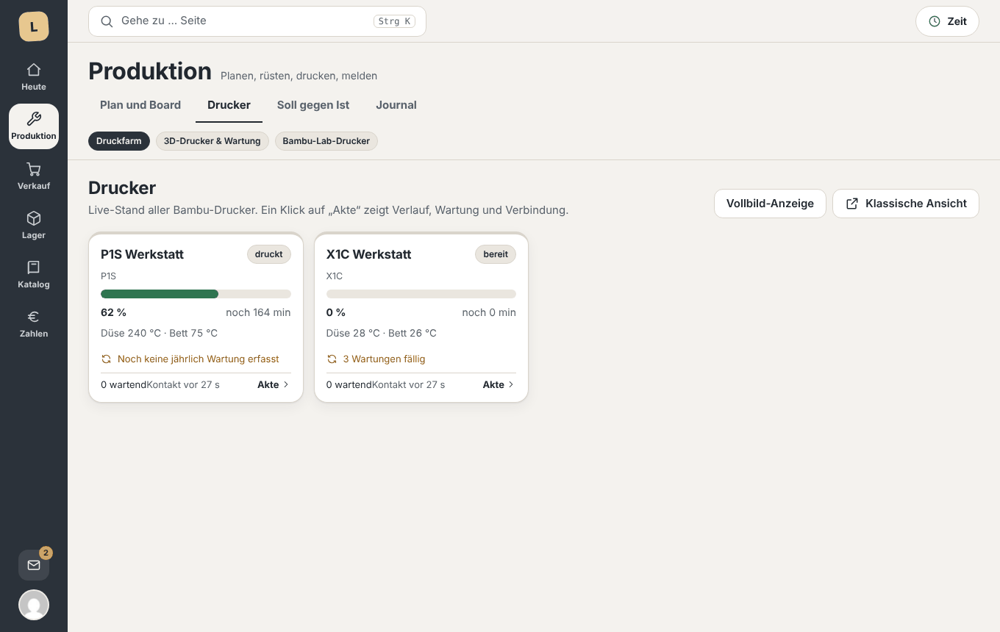
Einen Druckauftrag einreihen
Auf der Seite Bambu-Lab-Drucker wählst du oben Aufträge. Der Weg über den Workflow (A.3) legt Platten selbst an; hier kannst du eine fertig geslicte Druckdatei (.gcode.3mf aus Bambu Studio oder OrcaSlicer) von Hand einreihen. Eine reine Projektdatei mit Modell kann der Drucker nicht ausführen.
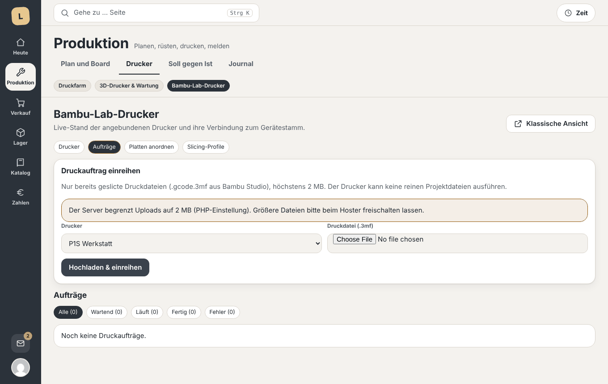
Die Bridge holt den Auftrag beim nächsten Kontakt ab, überträgt die Datei und startet den Druck. In der Liste wandert er durch die Stationen Wartend → Geclaimt → Wird übertragen → Druckt → Fertig. Fehler heißt: Der Drucker hat abgebrochen oder ist nicht angelaufen; Storniert heißt: jemand hat ihn zurückgezogen. Meldet der Drucker eine AMS-Belegung, kannst du außerdem wählen, mit welchem Filament gedruckt wird. Ohne Auswahl druckt das Gerät mit dem gerade eingelegten Filament.
Ein hier eingereihter Auftrag ist ein Einzeldruck – Muster, Ersatzteil, privat. Er bucht weder Lager noch Druckjournal. Was ins Lager soll, läuft über den Workflow (Kapitel A.3): Plan freigeben, automatisch slicen, Ist-Menge melden.
Platten slicen
Platten werden nur noch im Workflow angeordnet und freigegeben (Kapitel A.3). Dort lassen sie sich gleich beim Freigeben oder später von der Seite der Platte aus automatisch slicen: Der Slicing-Worker, ein Rechner im Betrieb mit OrcaSlicer ohne Bildschirm (Kapitel D.15), slict mit den hinterlegten Profilen und legt die Druckdatei von selbst in die Warteschlange des Druckers. Den Stand – wird geslict, fehlgeschlagen samt Grund, in der Warteschlange – zeigt die Seite der Platte. Der frühere eigene Reiter Platten anordnen ist entfallen: Was dort gedruckt wurde, buchte nichts ins Lager.
Das automatische Slicen nimmt das Material des ersten Artikels auf der Platte und sucht dazu das passende Slicing-Profil (Reiter Slicing-Profile, Kapitel D.15). Mehrfarbige oder Mehrmaterial-Platten mit AMS-Zuordnung je Bauteil kann der Worker nicht – dafür bleibt Bambu Studio zuständig: auf der Plattenseite die Projekt-3MF herunterladen, von Hand slicen und am Drucker starten; der Workflow erkennt den Druck am Dateinamen.
A.12 Produkte: Stammdaten, Revisionen und Stückliste
Katalog → Produkte → Alle Produkte
Das Ändern von Produkten verlangt das Recht Stammdaten ändern (Profil Fertigung oder höher). Mit dem Profil Werkstatt siehst du die Seite nicht – dann überspring das Kapitel. Alles, was an einem Produkt hängt, liegt an einem Ort: Stammdaten, Druckprofil, Stückliste, Kalkulation und Shop.
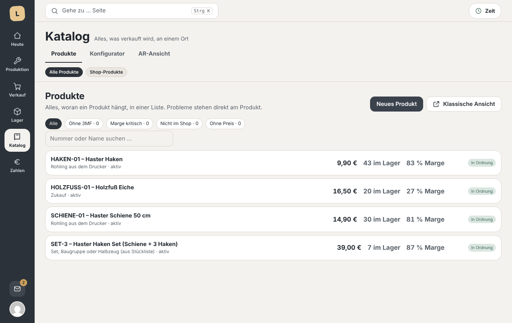
Klick auf ein Produkt, dann öffnet sich seine Akte. Oben stehen sechs Reiter: Übersicht, Stammdaten, 3MF und Revisionen, Stückliste, Kalkulation und Shop. Neue Produkte legst du mit Neues Produkt oben rechts an.
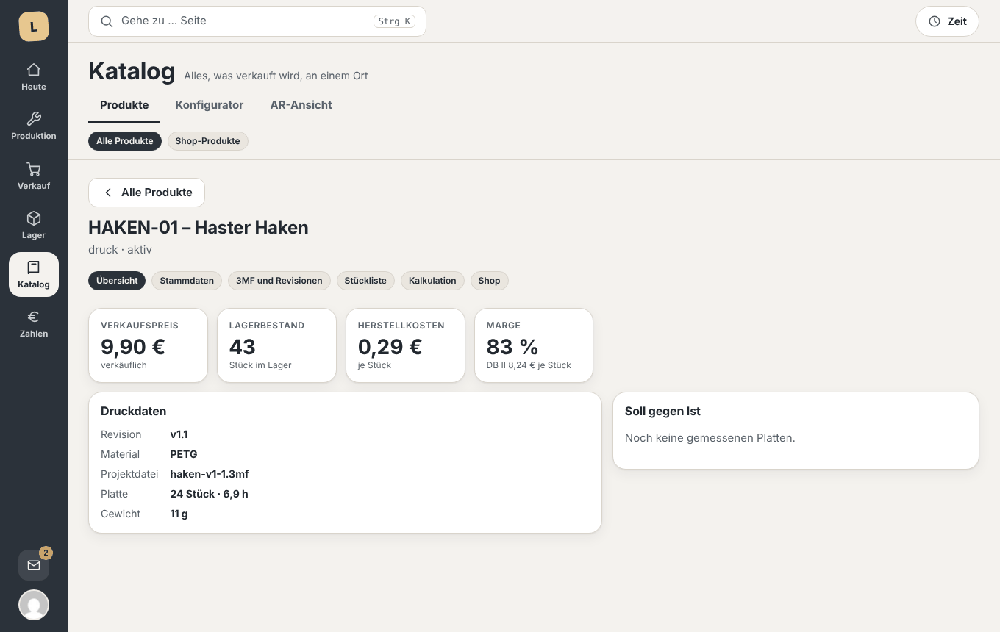
Stammdaten
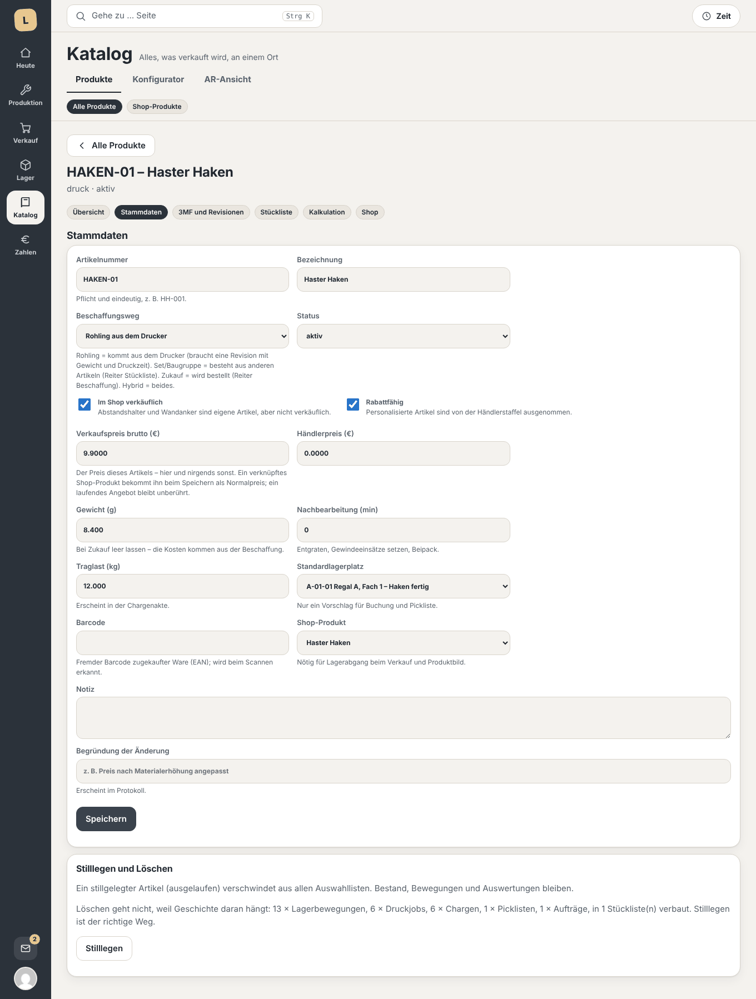
Der Beschaffungsweg entscheidet über alles Weitere:
| Beschaffungsweg | Bedeutung | Braucht |
|---|---|---|
| Rohling aus dem Drucker (druck) | Kommt aus dem Drucker | eine Revision (Druckprofil) |
| Set, Baugruppe oder Halbzeug (montage) | Wird aus anderen Teilen gebaut | eine Stückliste |
| Zukauf | Wird fertig eingekauft | Beschaffungsdaten (Lieferant, Preis) |
| Hybrid | Teils gedruckt, teils zugekauft | beides |
Unter dem Formular steht Stilllegen und Löschen. Ein stillgelegter Artikel verschwindet aus allen Auswahllisten; Bestand, Bewegungen und Auswertungen bleiben. Löschen geht nur, solange noch keine Geschichte daran hängt – sonst ist Stilllegen der richtige Weg.
3MF und Revisionen – das Druckprofil
Eine Revision ist die Beschreibung, wie ein Teil gedruckt wird: Material, Düse, Schichthöhe, Füllung, Temperaturen, Teile je Platte, Druckzeit je Platte und Bauteilgewicht. Aus ihr rechnet das ERP Materialkosten und Druckzeit je Stück. Genau eine Revision ist aktiv – mit der wird gedruckt und gerechnet.
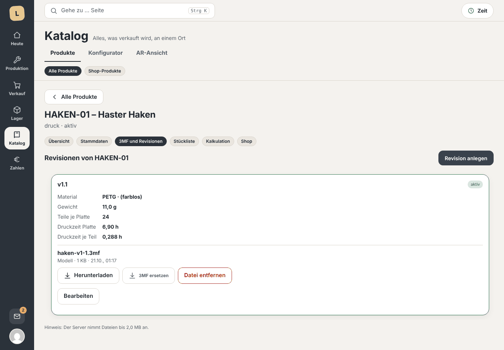
haken-v1-1.3mf.- Klick oben rechts auf Revision anlegen.
- Vergib eine Version, zum Beispiel
v1.2. Zweimal dieselbe Version je Produkt geht nicht. - Trag die Druckeinstellungen ein, so wie sie im Slicer stehen.
- Teile je Platte, Druckzeit je Platte und Bauteilgewicht sind Pflicht – ohne sie kann nichts gerechnet werden.
- Speichern. Die neue Revision ist zunächst inaktiv.
- Hänge die 3MF-Datei an – am besten die Projektdatei mit Modell und Einstellungen. Dann muss niemand raten, aus welcher Datei diese Version entstand. Der Server nimmt Dateien bis zu seiner Upload-Grenze an (steht auf der Seite).
- Erst wenn ein Probedruck in Ordnung war, klick bei ihr auf Aktiv setzen. Damit löst sie die bisherige ab.
Hängt an der Revision eine ungeslicte Projektdatei, kann das ERP sie für den Plan (A.3) verwenden. Hängt dort eine geslicte Druckdatei, kann der Drucker sie direkt ausführen. Das Produkt wird in beiden Fällen als mit 3MF gezählt.
Stückliste
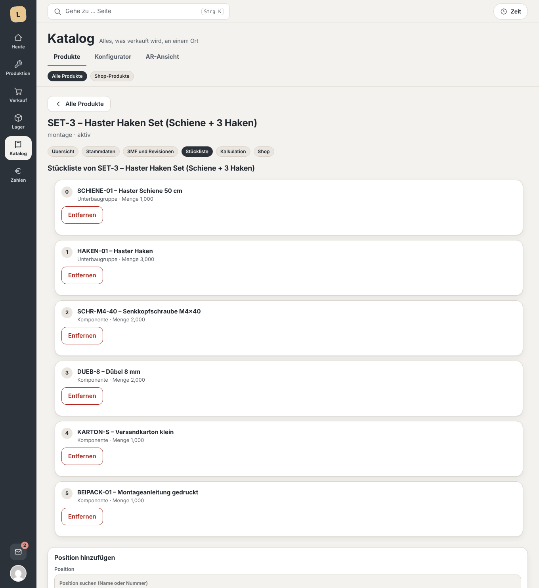
- Öffne das Produkt, zu dem die Stückliste gehört, und den Reiter Stückliste.
- Such unter Position hinzufügen die Position nach Name oder Nummer.
- Trag die Menge je Stück ein – also wie viele davon in ein fertiges Stück gehen.
- Klick auf Hinzufügen. Zum Löschen einer Position klickst du auf Entfernen und bestätigst.
Wenn du versuchst, das Set in die Stückliste des Sets zu legen, weist das ERP das ab. Das ist kein Fehler, sondern verhindert eine Rechnung, die nie zu Ende käme.
Die Reiter Kalkulation und Shop behandelt Kapitel D.9: Herstellkosten, Preisebenen und die Übertragung des Preises in den Shop.
A.13 Lager: Bestand und Korrekturen
Lager → Bestand → Lager
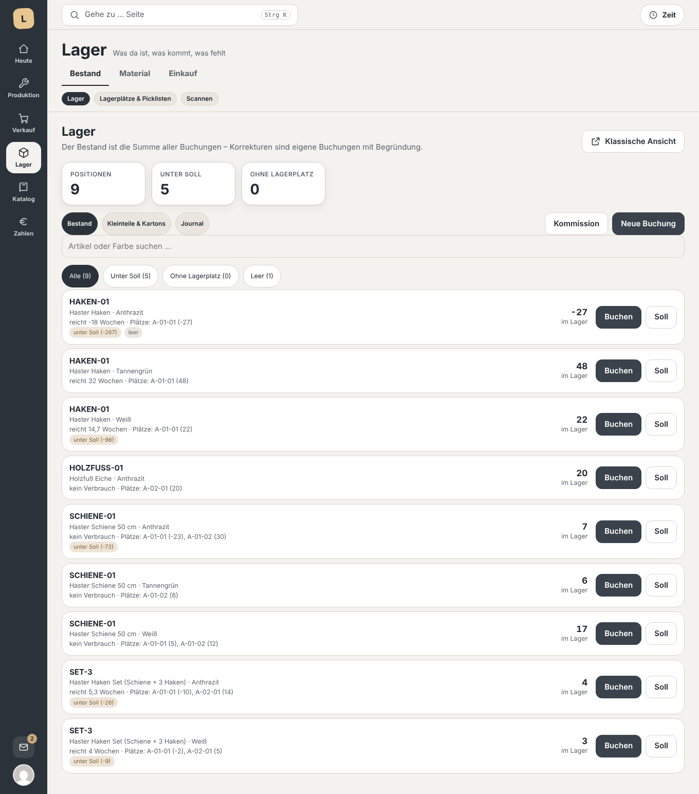
Jede Zahl hier ist die Summe aller Bewegungen zu diesem Artikel. Es gibt nichts, was man „verstellen“ könnte. Stimmt eine Zahl nicht, fehlt eine Buchung oder ist eine zu viel da – such nach der Bewegung, nicht nach einem Bestandsfeld.
Die Auswahl über der Liste hat drei Ansichten: Bestand, Kleinteile & Kartons (Schrauben, Dübel, Verpackung) und Journal (die letzten Bewegungen).
Eine Buchung machen
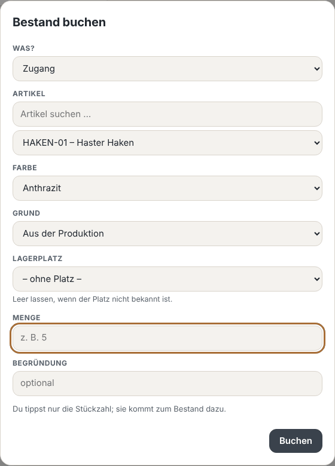
| Was? | Wann | Was du eingibst |
|---|---|---|
| Zugang | Etwas kommt zum Bestand dazu, z. B. aus der Produktion oder als Retoure | Nur die Stückzahl – sie kommt dazu |
| Abgang | Etwas verlässt das Lager ohne Verkauf, z. B. als Muster oder Ausschuss | Nur die Stückzahl – sie geht ab |
| Korrektur | Die Zahl im ERP stimmt nicht mit dem Regal überein (Inventur) | Die Differenz mit Plus oder Minus und eine Begründung (Pflicht) |
| Umlagerung | Die Ware wechselt den Platz; der Gesamtbestand bleibt gleich | Von Platz, nach Platz, Menge |
| Kommission | Ware geht zu einem Händler in Kommission oder kommt zurück | Händler, Vorgang, Menge – siehe Kapitel B.11 |
- Klick oben rechts auf Neue Buchung, oder in der Zeile des Artikels auf Buchen – dann sind Artikel und Farbe schon eingetragen.
- Wähle bei Was? den Vorgang und bei Grund den passenden Anlass.
- Wähle den Lagerplatz, wenn du ihn kennst. Leer lassen, wenn nicht.
- Trag die Menge ein. Bei einer Korrektur trägst du die Differenz ein, nicht den neuen Bestand: Liegen 18 Stück im Fach, das ERP sagt 20, trägst du
-2ein. - Bei einer Korrektur eine Begründung eintragen. Die ist Pflicht. „Inventur Fach A-01-01“ oder „zwei Stück beim Entgraten gebrochen“ genügt völlig.
- Klick auf Buchen.
Im Journal steht jede Bewegung. Jede Zeile hat einen Storno-Knopf – auch hier wird nicht gelöscht, sondern gegengebucht.
Sollbestand
Der Knopf Soll in der Zeile legt fest, wie viel von diesem Artikel in dieser Farbe mindestens im Lager liegen soll. Fällt der Bestand darunter, meldet die Bedarfsplanung Bedarf (Kapitel A.3 und A.4). „Soll entfernen“ ist etwas anderes als Soll 0: Es meldet dann gar nicht mehr. Das Setzen von Sollbeständen ist Sache der Betriebsleitung.
Lagerbuchung am Handy
Wareneingang, Umlagerung oder eine Korrektur direkt am Regal gehen auch am Handy: /betrieb-erfassen/ öffnen und oben auf den Reiter Lager tippen.

„Buchungen ohne eindeutige Farbe“
Steht diese Meldung oben auf der Seite, hat der Shop bei einer Bestellung keine Farbe mitgeliefert. Die Buchung ist trotzdem gemacht worden – sie hängt nur an keiner Farbe. Sag der Betriebsleitung Bescheid, damit das Farbattribut am Produkt ergänzt wird; anschließend lässt sich die Bewegung per Korrektur auf die richtige Farbe umbuchen.
A.14 Qualität: Chargen und Rückverfolgung
Produktion → Journal → Qualität
Chargenbuch
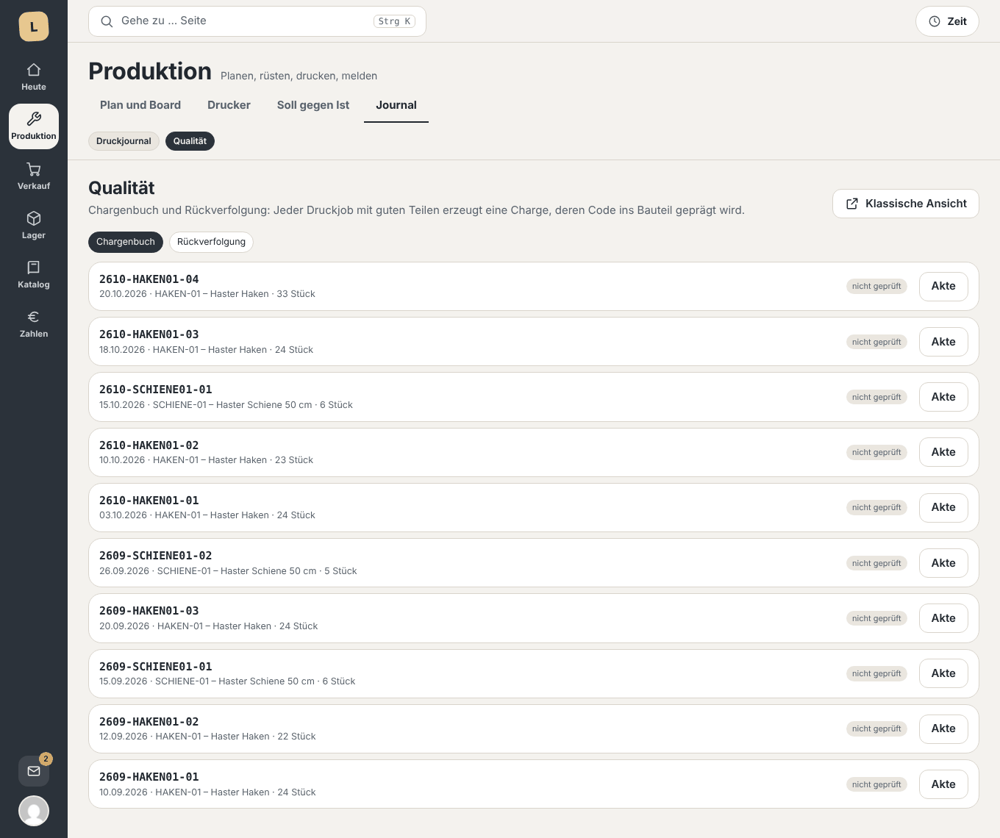
Klick bei einer Charge auf Akte, um sie zu öffnen. Dort steht alles beisammen: Artikel, Revision, Material, Filamentcharge, Drucker, Stückzahl, Datum – und welche Bestellungen betroffen sind. Von dort erzeugst du den GPSR-Nachweis als PDF – das Dokument, das du beiliegen lässt oder auf Nachfrage vorzeigst. Den Chargencode prägst du ins Bauteil und übernimmst ihn in den Slicer.
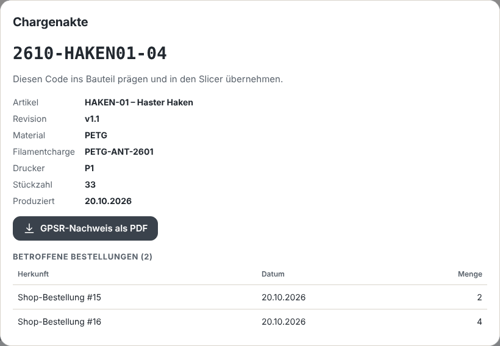
Rückverfolgung
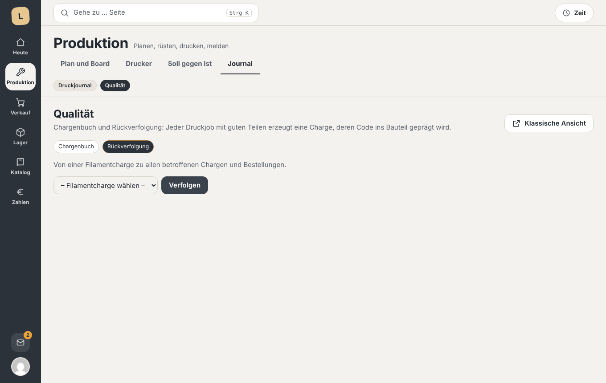
Das ist der Weg, wenn eine Rolle Material sich als schlecht herausstellt: Du siehst in einem Schritt, welche Kunden betroffen sind – und musst nicht raten.
A.15 Kapazität und Soll gegen Ist: schaffe ich das?
Produktion → Soll gegen Ist → Kapazität

Trag unter Vorschau für eine Woche ein, wie viele Bestellungen du je Produkt erwartest, und klick auf Rechnen. Das ERP löst die Stücklisten auf und sagt dir, wie viele Druckerstunden und wie viele Handstunden das kostet – und ob das in eine Woche passt. Nutz das vor Weihnachten oder vor einem Markt, bevor du zusagst. Die Kapazität kommt aus den Geräten, die in Betrieb sind, und den Nettostunden je Gerät.
Soll gegen Ist
Produktion → Soll gegen Ist → Soll gegen Ist
Hier siehst du, wie gut Plan und Wirklichkeit zusammenpassen: Die gestempelte Druck- und Rüstzeit gegen die Planzeit. Sobald Platten gemeldet sind, erscheinen sie in dieser Liste (die letzten 90 Tage). Wer das Recht Stammdaten ändern hat, kann dort die gemessene Zeit als neue Planzeit in die Revision übernehmen – dann folgen Plan und Kalkulation der Wirklichkeit.
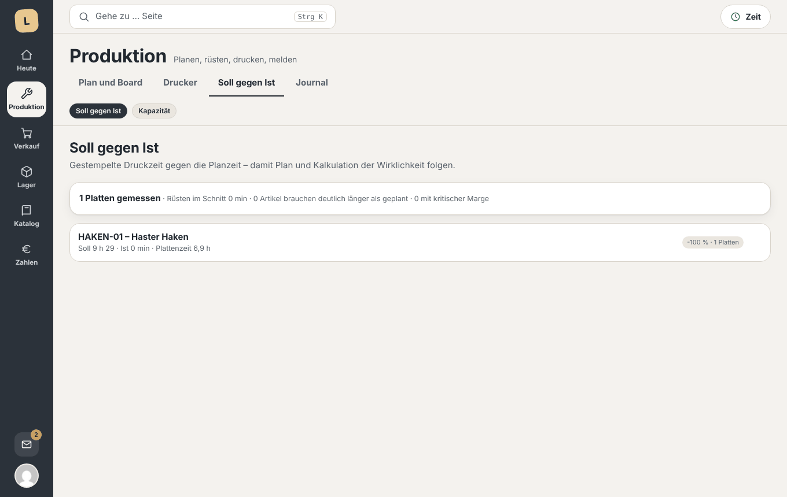
A.16 Wenn etwas nicht geht
| Meldung oder Beobachtung | Was wirklich los ist | Was du tust |
|---|---|---|
| „Bei Ausschuss ist eine Fehlerursache Pflicht“ | Du hast weniger gute als geplante Teile eingetragen, aber keine Ursache gewählt | Fehlerursache auswählen, nochmal buchen |
| „Für diesen Artikel ist keine Revision hinterlegt“ | Der Artikel hat kein freigegebenes Druckprofil | Kapitel A.12 – oder die Betriebsleitung fragen |
| „Dieser Artikel wird nicht gedruckt“ | Du hast im Druckjournal ein Set oder einen Zukaufartikel gewählt | Sets über einen Fertigungsauftrag (Kapitel A.8) |
| „Die Wartung ist noch nicht vollständig“ | In der Checkliste fehlen Haken | Die genannten Punkte machen und abhaken |
| „Es können nicht mehr Teile gut sein als geplant waren“ | Zahlendreher in einem der beiden Felder | Beide Zahlen prüfen |
| „Der Chargencode ist bereits vergeben“ | Diesen Code gibt es schon | Laufende Nummer erhöhen |
| Ein Platz oder Reiter fehlt | Dein Rechteprofil deckt ihn nicht ab | Person mit Vollzugriff fragen |
| Der Bestand stimmt nicht mit dem Regal überein | Eine Buchung fehlt oder ist doppelt | Kapitel A.13, Korrektur mit Begründung |
| Im Workflow fehlt für einen Artikel der Knopf In Plan aufnehmen | An der aktiven Revision hängt keine Projektdatei (3MF) | Datei anhängen (Kapitel A.12) |
| Beim Plan steht „Kein Bambu-Drucker angelegt“ | Platten lassen sich nur auf einen angelegten und mit einem Gerät verknüpften Bambu-Drucker einplanen | Betriebsleitung: Kapitel A.11 und D.15 |
| Ein Drucker steht auf offline | Die Bridge meldet sich nicht | Pi und Netz prüfen lassen (Kapitel D.15) |
| Eine Platte steht auf Wird gesliced und „wartet seit … auf den Slicing-Worker“ | Kein Worker holt den Auftrag ab | Nach ein paar Minuten der Verwaltung Bescheid sagen |
| Eine Platte steht auf Fehlgeschlagen | Der Slicer konnte sie nicht verarbeiten – der Grund steht unter dem Status | Grund lesen, weitergeben, dann Erneut slicen |
| Der QR-Aufkleber führt auf „Seite nicht gefunden“ | Die Adressen sind nach einem Update noch nicht neu registriert | Der Verwaltung sagen: Einmal die Seite /erp öffnen oder die Permalinks neu speichern |
A.17 Spickzettel für den Tag
- Heute öffnen, die Hinweiskarten anschauen.
- Produktion → Plan und Board → Workflow öffnen: Was fehlt in der Spalte Bedarf?
- Plan freigeben, Etiketten drucken, erste Platte rüsten.
- Zeit-Uhr oben rechts starten (Zeit → Uhr starten).
- Jede Platte sofort rüsten, starten und melden – am Handy am Drucker, das dauert zwanzig Sekunden.
- Jedes montierte Los wird fertiggemeldet, bevor du zum nächsten gehst.
- Kaputte Teile buchst du als Ausschuss mit Ursache. Nicht heimlich in den Müll.
- Laufende Uhr stoppen und die Zeit erfassen (siehe Teil C, Personal).
- Laufende Aufträge pausieren, wenn du morgen weiterarbeitest.
- Wochenwartung nicht vergessen – Heute erinnert dich.
Versand
Für alle, die Pakete packen. Von der offenen Bestellung bis zum Paket in der Kiste für die Post – in einem durchgehenden Ablauf, Schritt für Schritt.
B.1 Der Ablauf auf einer Seite
Ein Paket entsteht immer in derselben Reihenfolge. Wenn du nur eine Sache aus dieser Anleitung behältst, dann diese fünf Schritte:
| # | Schritt | Wo | Ergebnis |
|---|---|---|---|
| 1 | Pickliste erzeugen | Computer, Verkauf → Bestellungen → Picklisten | Eine Liste, sortiert nach Lagerplatz |
| 2 | Picken | Handy oder Computer, Verkauf → Bestellungen → Picklisten | Ware auf dem Packtisch, Bestand gebucht |
| 3 | Packen | Packtisch | Karton mit Ware und Beipackzettel |
| 4 | Lieferschein drucken | Computer, Verkauf → Bestellungen → Versand | PDF, kommt ins Paket |
| 5 | Versandlabel, Versendet ✓ | Computer, Verkauf → Bestellungen → Versand | Paket ist adressiert und frankiert; der Lagerabgang ist gebucht |
Die Pickliste ist nicht nach Bestellungen sortiert, sondern nach Lagerplatz. Du läufst einmal durchs Regal statt fünfmal. Erst am Packtisch wird die Ware wieder auf Bestellungen verteilt. Bei einer Bestellung merkt man den Unterschied nicht – bei zehn schon.
B.2 Anmelden und den Weg finden
- Browser öffnen, in der Adresszeile die Adresse der Website eintippen und
/erpanhängen, also zum Beispiellindenweg16.de/erp, dann Enter. - Benutzername und Passwort eintragen, auf Anmelden klicken.
- Links in der dunklen Leiste siehst du die Plätze. Für den Versand brauchst du vor allem zwei: Verkauf (Einkaufswagen) für Versand, Aufträge und Picklisten und Lager (Karton) für Bestand und Lagerplätze.
Verkauf → Bestellungen → Versand heißt: links auf Verkauf, oben auf den Reiter Bestellungen, darunter auf den runden Knopf Versand (Kapitel 2 erklärt die Wegangaben).
B.3 Schritt 1: Pickliste erzeugen
Verkauf → Bestellungen → Picklisten
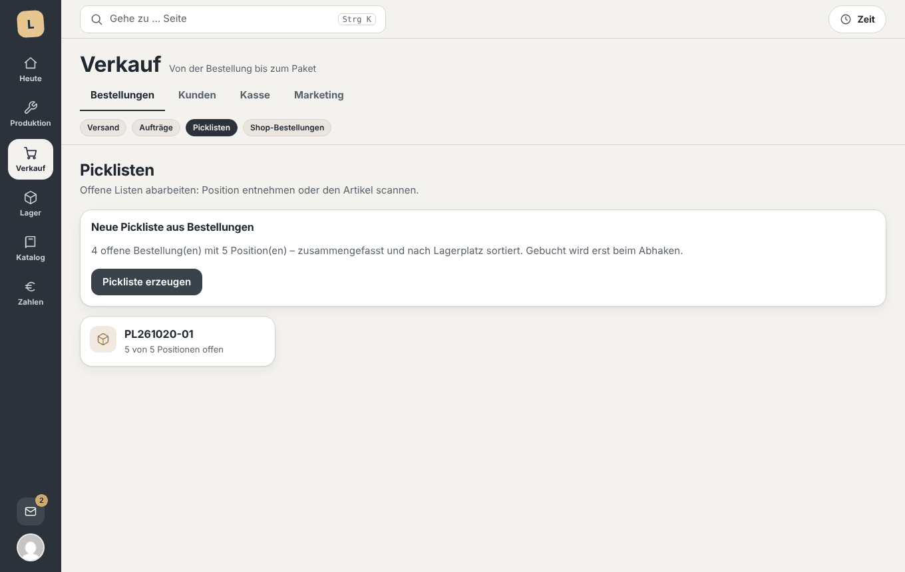
- Öffne Verkauf → Bestellungen → Picklisten. Oben steht, wie viele offene Bestellungen und Positionen die neue Liste enthielte.
- Klick auf Pickliste erzeugen. Eine kurze Meldung bestätigt die Liste, und sie öffnet sich sofort.
- Sie hat einen Code wie
PL261020-01und ist nach der Spalte Platz sortiert – das ist deine Laufreihenfolge. - Der Knopf ist grau, wenn es keine offenen Bestellungen gibt. Ihn sehen nur Personen mit dem Recht, Picklisten zu erzeugen.
Die Liste fasst gleiche Artikel in gleicher Farbe zusammen; die Spalte Bestellung sagt weiter, zu welcher Bestellung eine Zeile gehört.
| Spalte | Bedeutung |
|---|---|
| Platz | Das Fach, aus dem du greifst – der Code steht auf dem Etikett am Regal |
| Artikel | Artikelnummer und Bezeichnung; Kleinteil markiert Schrauben, Dübel und Ähnliches |
| Farbe | Die Farbe, die entnommen werden soll – nicht raten, es gibt mehrere |
| Bestellung | Zu welcher Shop-Bestellung diese Zeile gehört, z. B. #19 |
| Soll | Wie viele Stück |
| Entnommen | Wie viele du schon abgehakt hast. Startet bei 0. |
Die Liste enthält alle offenen Bestellungen. Wenn du sofort noch einmal auf den Knopf drückst, hast du zwei Listen mit derselben Ware und pickst am Ende doppelt. Gibt es schon eine offene Liste aus Bestellungen, fragt das ERP vorher nach. Eine Liste, ein Durchgang. Erst wenn sie abgearbeitet ist, machst du die nächste.
B.4 Schritt 2: Picken
Verkauf → Bestellungen → Picklisten
Zum Picken nimmst du am besten das Handy mit ins Lager. Der Computer bleibt am Packtisch stehen. Es geht aber auch am Computer.
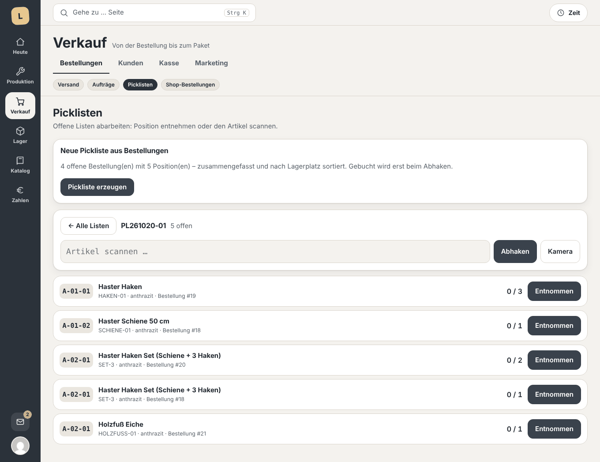
Am Handy
- Wenn ein QR-Aufkleber am Regal oder am Packtisch klebt: Kamera drauf, auf den Hinweis tippen.
- Sonst: Die Adresse der Website plus
/betrieb-erfassen/eintippen und oben den Reiter Picken wählen. Leg sie dir einmal als Lesezeichen auf den Startbildschirm – dann ist sie ein Fingertipp entfernt.

- Tipp oben auf den Reiter Picken.
- Unter der Überschrift steht der Code der Liste und wie viele Positionen noch offen sind, zum Beispiel
PL261020-01 · Bestellungen · 5 offen. - Geh zum ersten Platz in der Liste. Nimm die angegebene Menge in der angegebenen Farbe heraus.
- Tipp in der Zeile rechts auf den grünen Haken. Die Zeile ist damit erledigt und der Lagerabgang ist gebucht.
- Weiter zur nächsten Zeile, bis „0 offen“ dasteht.
Am Computer
Öffne die Liste und klick in der Zeile auf Entnommen, sobald du die Ware genommen hast. Die Zeilen stehen nach Platz sortiert, erledigte Zeilen rücken nach unten und zeigen erledigt. Oben im Feld Artikel scannen … kannst du mit einem Handscanner (der wie eine Tastatur schreibt) oder mit der Kamera arbeiten: Scannen, Abhaken klicken, fertig.
Sicherer: scannen statt tippen
Statt auf den Haken zu tippen, kannst du auf Position scannen tippen und den QR-Code am Artikel oder am Fach mit der Kamera erfassen. Das ERP sucht sich die passende Zeile selbst und hakt sie ab. Vorteil: Du kannst nicht die falsche Zeile erwischen, weil du in der falschen Zeile geguckt hast. Auch Strichcodes von Lieferanten (EAN) werden erkannt, wenn sie am Artikel hinterlegt sind.
Diese Meldung ist kein Fehler. Sie sagt: Die Kamera dieses Handys erkennt in dieser Ansicht nur QR-Codes, keine Strichcodes vom Lieferanten. Strichcodes tippst du bei Code eintippen ein und drückst Enter.
Wenn im Fach weniger liegt, als auf der Liste steht, nimm mit, was da ist, und sag es weiter. Der Bestand ist dann falsch und muss korrigiert werden – wie das geht, steht in Kapitel A.13. Wer stillschweigend weiterpickt, hinterlässt einen Fehler, der beim nächsten Mal wieder zuschlägt.
B.5 Schritt 3: Packen
Am Packtisch verteilst du die gepickte Ware auf die Bestellungen. Die Spalte Bestellung auf der Pickliste sagt dir, was zusammengehört. Alternativ öffnest du die Bestellung im ERP: Auf Verkauf → Bestellungen → Versand klickst du auf den Namen der Bestellung. Dort steht eine Packliste mit Kästchen zum Abhaken.
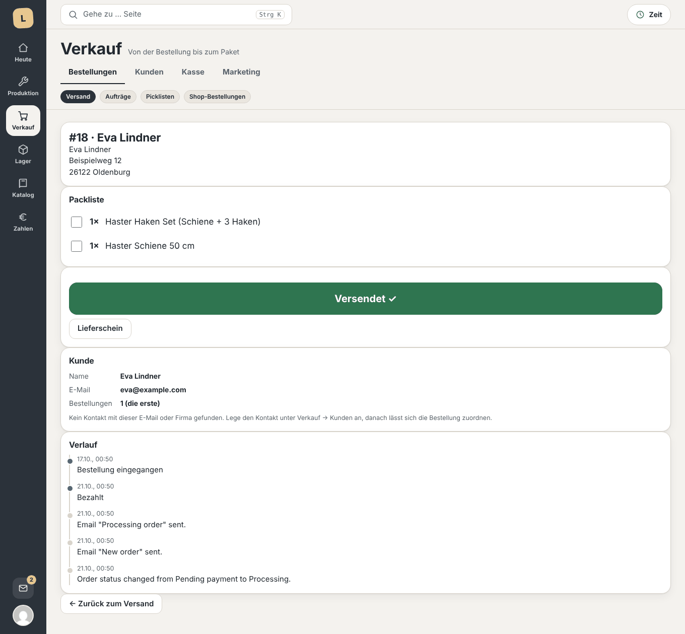
- Karton in der passenden Größe nehmen.
- Ware der einen Bestellnummer hineinlegen und gegen die Liste prüfen: Menge und Farbe. Hak die Kästchen der Packliste ab.
- Montageanleitung oder Beipackzettel dazulegen, wenn der Artikel einen hat.
- Lieferschein drucken (Kapitel B.6) und mit hineinlegen.
- Karton mit Füllmaterial auffüllen, sodass nichts wandert, und zukleben.
Du musst nicht eintragen, dass du einen Karton verbraucht hast. Verbrauchsmaterial wird je Bestellung pauschal abgezogen. Wenn der Vorrat knapp wird, meldet sich das ERP von selbst auf Heute und im Beschaffungsalarm unter Lager → Material.
B.6 Schritt 4: Lieferschein drucken
Verkauf → Bestellungen → Versand
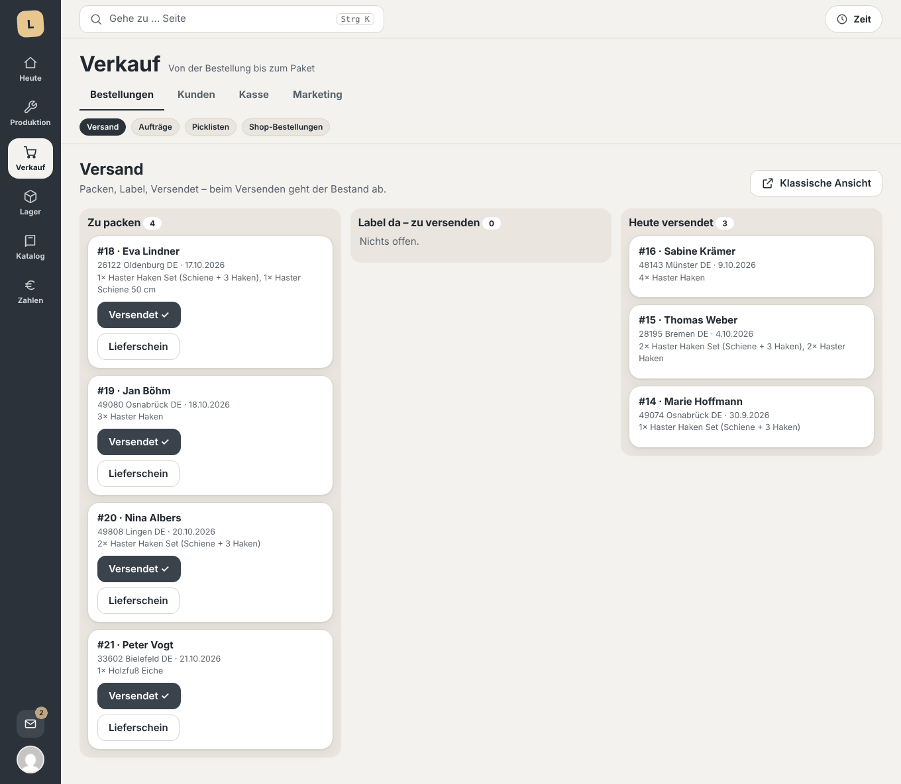
- Such die Karte mit der Bestellnummer, die du gerade gepackt hast. Sie steht oben als
#18,#19und so weiter, mit dem Namen des Empfängers. - Klick auf der Karte auf Lieferschein.
- Es öffnet sich ein PDF mit Lieferadresse und Artikelliste.
- Drucken mit Strg+P (am Mac Cmd+P) und ins Paket legen.
Auf dem Lieferschein stehen keine Preise – die Rechnung bekommt der Kunde getrennt. Das ist Absicht und richtig so, besonders wenn ein Paket als Geschenk geht.
Die Pickliste ist der Zettel fürs Lager: Artikel, Menge, Lagerplatz, keine Anschrift. Der Lieferschein liegt in der Kiste: Anschrift und Inhalt, keine Preise. Das Label klebt außen drauf – nur das kostet Geld.
B.7 Schritt 5: Versandlabel und „Versendet“
Verkauf → Bestellungen → Versand
Auf jeder Karte in Zu packen stehen die Schritte, die noch fehlen. Welche das sind, hängt davon ab, ob ein DHL-Zugang eingerichtet ist (Kapitel D.4):
| Ist DHL eingerichtet? | Was du auf der Karte siehst |
|---|---|
| Ja | Ein Formular mit Produkt, Gewicht (in Gramm), dem Haken sperrig und dem Knopf Label erzeugen. Danach rückt die Karte nach Label da – zu versenden; dort stehen Versendet ✓, Label öffnen, Lieferschein und Stornieren. |
| Nein | Nur Versendet ✓ und Lieferschein. Das Label kommt dann von woanders (zum Beispiel einem Versandplugin); die Sendungsnummer trägst du dort ein. |
Das DHL-Label erzeugen
- Produkt steht schon da: Inland Paket, EU Europaket, Rest der Welt Weltpaket – Leichtes als Warenpost, falls gebucht. Ändern kannst du es trotzdem.
- Gewicht steht in Gramm daneben, gerechnet aus den Artikelgewichten plus Verpackungszuschlag. Wieg im Zweifel nach und trag das echte Gewicht ein – ein zu leicht frankiertes Paket wird nachberechnet.
- Passt das Paket nicht aufs Band, den Haken bei sperrig setzen.
- Label erzeugen klicken. Das PDF öffnet sich über Label öffnen – ausdrucken, aufkleben, Paket in die Abholkiste.
Die Sendungsnummer geht im selben Moment in die Sendungsverfolgung: Der Kunde sieht sie in seinem Konto, ohne dass jemand sie abtippt. Auf der Karte steht sie in Schreibschrift mit dem Zustand der Sendung.
„Versendet ✓“
Wenn das Paket die Werkstatt verlässt, klickst du auf Versendet ✓ und bestätigst die Rückfrage („Als versendet melden? Dabei wird der Lagerabgang gebucht.“). Die Bestellung wird abgeschlossen, der Lagerabgang wird gebucht, die Rechnung entsteht, und die Karte wandert nach Heute versendet.
Mit dem Klick ist die Sendung frankiert. Falsches Produkt, falsche Adresse, doppelt geklickt? Dann in derselben Karte auf Stornieren – solange die Sendung nicht abgeholt ist, wird sie nicht berechnet. Danach nicht mehr. Der Vorgang bleibt als storniert stehen, damit die Abrechnung der DHL nachvollziehbar bleibt.
Die Meldung sagt, woran es liegt. Steht dort etwas von Zugang abgewiesen, ist nicht das Paket schuld, sondern die Einstellung: Die Meldung an den weitergeben, der die Einstellungen pflegt (Kapitel D.4). Steht dort etwas zu Adresse, Gewicht oder Abrechnungsnummer, ist die Sendung gemeint.
„DHL-Sandbox aktiv“ heißt: Das Label sieht echt aus, ist aber keine gültige Frankierung. Nicht aufkleben und wegschicken – Bescheid sagen, wer die Einstellungen pflegt.
… storniert das ERP von selbst die Rechnung samt Einnahmebuchung und bucht den Lagerabgang zurück (Kapitel D.10). Wenn die Ware schon beim Kunden ist, ist das nicht gewollt – dann sagt die Betriebsleitung, wie sie die Retoure bucht.
B.8 Bestellungen: Shop-Bestellungen und Aufträge
Es gibt zwei Listen. Beide liegen unter Verkauf → Bestellungen:
Shop-Bestellungen
Verkauf → Bestellungen → Shop-Bestellungen
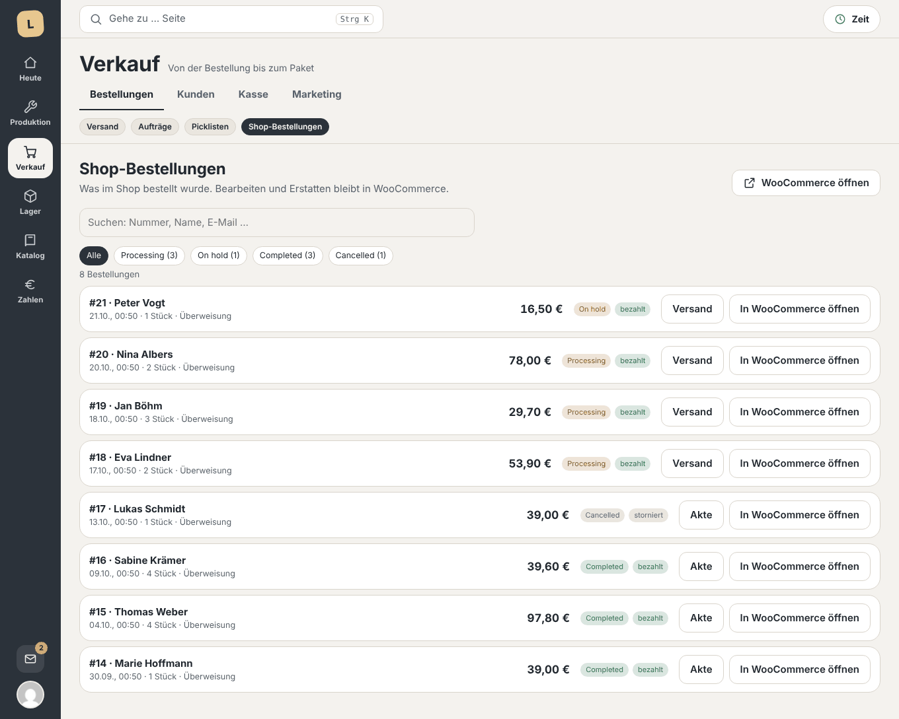
Bearbeiten und Erstatten bleibt in WooCommerce: Der Knopf In WooCommerce öffnen führt dorthin. Bei offenen Bestellungen steht daneben Versand – das öffnet die Bestellung zum Packen (B.5). Bei abgeschlossenen steht Akte.
Aufträge
Verkauf → Bestellungen → Aufträge
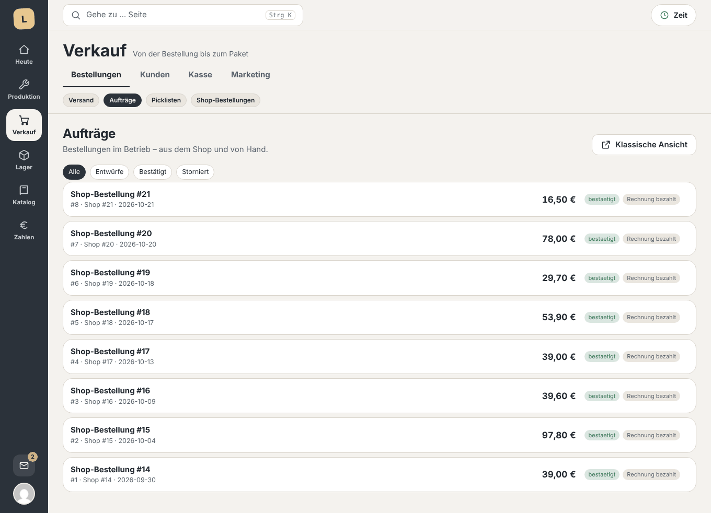
| Schild | Bedeutung |
|---|---|
| entwurf | Eine Anfrage, noch nicht bestätigt. Erst mit Bestätigen entstehen Lagerabgang und offener Posten. Das betrifft Nachbestellungen von Händlern (B.10) und manuell erfasste Entwürfe. |
| bestaetigt | Gilt, der Lagerabgang ist gebucht |
| storniert | Zurückgenommen |
| Rechnung bezahlt / offen / überfällig | Wie weit die Rechnung ist. Überfällig ist orange und taucht auf Heute auf. |
Die Minuten, die das Packen einer Bestellung dauert, landen in der Kennzahl „Ø Handlingzeit“ unter Zahlen → Berichte. Aus ihr wird sichtbar, welche Bestellart wirklich Arbeit macht – und daran hängt später der Preis. Eingetragen wird sie in der klassischen Ansicht der Bestellungen; eine grobe Schätzung ist besser als ein leeres Feld.
B.9 Verkauf ohne Shop: Barverkauf und manuelle Aufträge
Für Barverkauf am Markt, Abholung ab Werkstatt oder eine Bestellung, die per Telefon kam, gibt es zwei Wege:
- Am Markt: die Kasse (Verkauf → Kasse). Dort startest du einen Kassatag mit Anlass, Kostenstelle, Datum und Kassenbestand zu Beginn und buchst die Verkäufe. Die Kasse läuft im ERP, auch am Handy (Kapitel D.11).
- Telefon, Abholung, Händler ohne Link: ein manueller Auftrag. Den legst du in der klassischen Ansicht von Verkauf → Bestellungen → Aufträge an (Klassische Ansicht, unten das Formular Bestellung manuell erfassen): Kontakt wählen (bei Barverkauf – ohne Kontakt –), Datum prüfen, Kanal wählen und bei jedem Artikel die Menge eintragen.
Der Rabatt für Händler wird dabei automatisch aus der Rabattstaffel zum Bestelldatum aufgelöst und an der Bestellung festgeschrieben. Ändert sich die Staffel später, bleibt diese Bestellung, wie sie war (Kapitel D.7).
Eine manuelle Bestellung bucht genauso Ware aus dem Lager wie eine Shop-Bestellung. Erfasse deshalb nur, was wirklich über den Tisch gegangen ist – und nicht zur Übung.
B.10 Nachbestellungen von Händlern bestätigen
Händler bekommen eine Karte mit QR-Code. Wer sie scannt, landet auf einer schlichten Seite, wählt Mengen und schickt sie ab. Bei uns erscheint das dann als Entwurf unter Verkauf → Bestellungen → Aufträge (Filter Entwürfe).
- Entwurf lesen: Wer, was, wie viel.
- Prüfen, ob die Ware da ist – notfalls unter Lager → Bestand → Lager nachsehen.
- Auf Bestätigen klicken und die Rückfrage bestätigen.
Erst mit dem Klick auf Bestätigen entstehen der Lagerabgang und der offene Posten. Vorher ist es nur eine Anfrage. Damit kann kein Händler versehentlich deinen Bestand leerbuchen.
Erzeugt wird die Karte in der Kundenakte (Kapitel B.11), Abschnitt Nachbestell-Link.
Gespeichert wird nur seine Prüfsumme, nicht der Link selbst. Druck die Karte also sofort aus oder gib die Adresse gleich weiter. Ist sie weg, erzeugst du einen neuen Link – der alte wird damit ungültig. Der Link ist für den Händler persönlich: ohne Anmeldung, nicht indexierbar, gedrosselt, und er zeigt weder Bestände noch Umsätze noch fremde Konditionen.
B.11 Kunden und Händler: die Kundenakte
Verkauf → Kunden → Kontakte / B2B
Hier stehen Händler, Vereine, Firmen und Interessenten. Jeder bekommt eine Akte, in der alles zusammenläuft: Stammdaten, Konditionen, Bestellungen, Kommissionsware und Gespräche.


| Abschnitt | Was du damit machst |
|---|---|
| Stammdaten ändern | Anschrift, Ansprechpartner, Kontaktdaten, Typ und Status (identifiziert → angesprochen → Muster abgegeben → Interesse → Kunde), Wiedervorlage. |
| Preisliste | Öffnet die Händlerpreisliste: Händlerpreise netto, Mengenrabatt-Staffel und Zahlungsziel des Kunden – druckbar und als PDF speicherbar. |
| Preisstufe und Rabatt | Zeigt die Standardstaffel. Kondition festschreiben legt eine eigene Vereinbarung an. Sie gilt ab einem Datum; ältere Bestellungen bleiben unverändert. |
| Händlerprofil | USt-IdNr., Rechnungs- und Lieferadresse, Lieferhinweise, Entscheider, Wareneingang, Bestellrhythmus, nächste erwartete Bestellung, Verpackung, Farben, Kommission vereinbart, Display, Kreditlimit. Über Profil bearbeiten. Überschreiten offene Posten das Kreditlimit, erscheint eine Warnung. |
| Nachbestell-Link | Erzeugt den persönlichen Link und die Karte mit QR-Code (Kapitel B.10). |
| Bestellungen | Alle zugeordneten Bestellungen. Auf der Bestellseite schlägt das ERP einen Kontakt mit gleicher E-Mail oder Firma vor – ein Klick ordnet zu, Zuordnung lösen hebt es auf. |
| Kommissionsbestand | Ware, die beim Händler liegt. Ausliefern und Zurücknehmen verschieben nur zwischen Lager und Händler; Abrechnen verkauft, und zwar als ein offener Posten über die ganze Lieferung, damit die Rabattstaffel auf den Gesamtwert greift. |
| Aktivitäten | Besuche, Anrufe, Mails, Muster. Aktivität erfassen verlangt ein Datum zum Nachfassen – eine Aktivität ohne Wiedervorlage versandet. |
| Zahlungserinnerung schreiben | Erscheint bei überfälligen Posten. Das ERP bereitet einen Mailtext vor, den du ändern kannst. Nach dem Senden steht eine Aktivität mit Wiedervorlage in einer Woche in der Akte. |
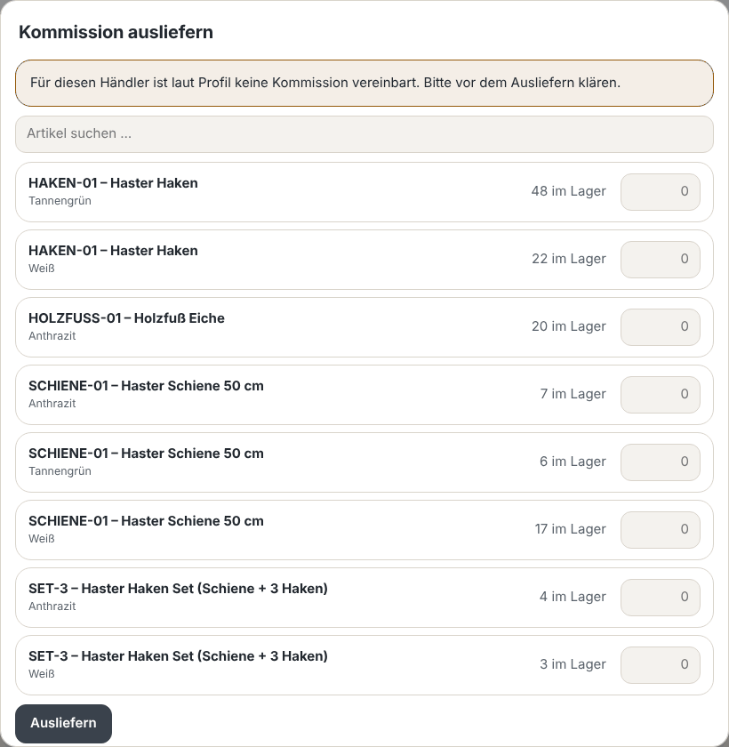
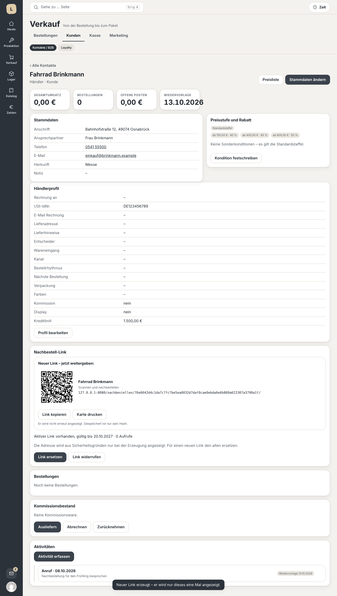
B.12 Lagerplätze, Etiketten und Scannen
Lager → Bestand → Lagerplätze & Picklisten → Lagerplätze
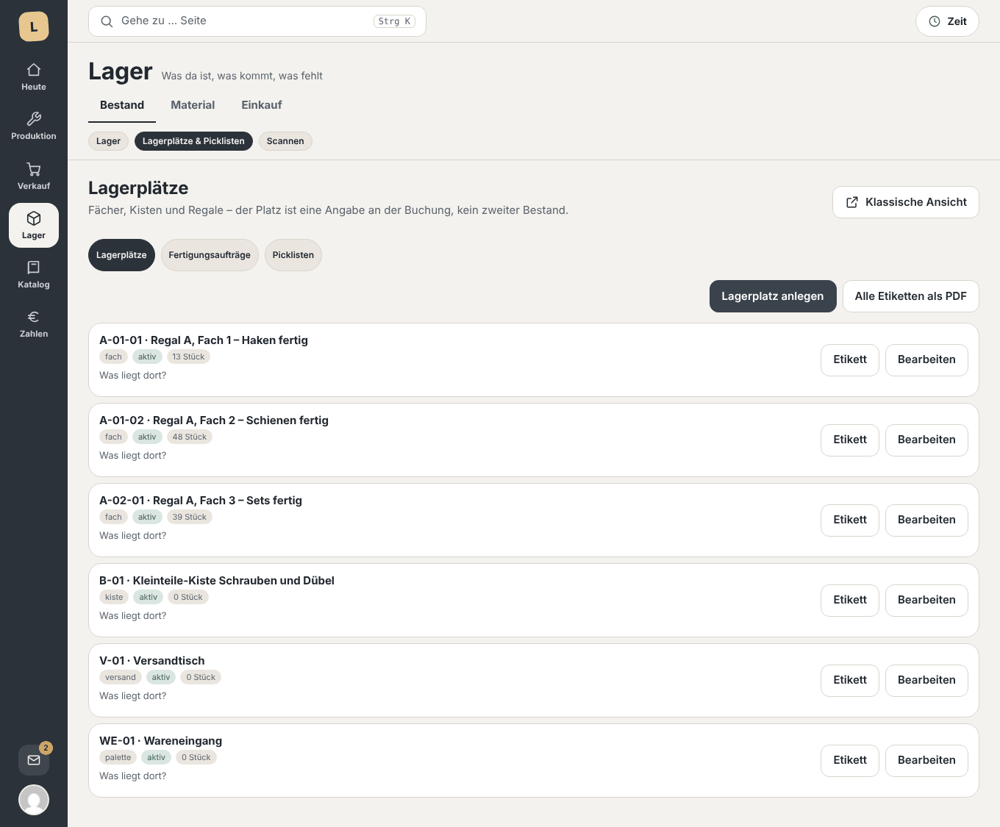
Einen neuen Platz anlegen
- Klick auf Lagerplatz anlegen.
- Code vergeben. Kurz halten, er kommt aufs Etikett und wird gescannt:
A-01-01,V-01,WE-01. - Bezeichnung in Klartext: „Regal A, Fach 1 – Haken fertig“.
- Art wählen: Regal, Kiste, Fach, Palette, Werkbank oder Versand.
- Auf Speichern klicken, dann in der Zeile auf Etikett – das Etikett kommt als PDF.
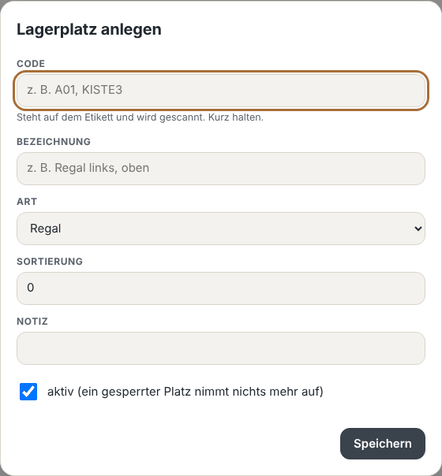
Alle Etiketten auf einmal
Mit Alle Etiketten als PDF oben auf der Seite entsteht ein Bogen mit allen QR-Codes. In der klassischen Ansicht wählst du, ob Lagerplätze, Artikel, Drucker oder mehreres davon darauf sollen, und das Rollenformat. Ein Lagerplatz führt beim Scannen auf sein Fach, ein Artikel auf seine Buchungsmaske, ein Drucker auf die Erfassung mit vorausgewähltem Gerät.
Lagerplätze, Artikel und Drucker benutzen dasselbe Rollenformat, damit im Brother nur eine Rolle liegen muss. DK-11201 ist 29 mm breit und 90 mm lang – die erste Zahl ist immer die Rollenbreite, so benennt Brother seine Rollen. Beschriftet wird der Länge nach: QR-Code links, Klartext rechts, neun Zentimeter Platz für lange Bezeichnungen.
Gedreht ist dabei der Aufdruck, nicht die Seite. Im Druckdialog also nichts auf Querformat stellen – jede Seite des PDFs ist bereits genau ein Etikett. Liegt bei dir eine andere Rolle im Gerät, wähl das passende Format aus der Liste; es muss zur eingelegten Rolle passen.
Sonst schrumpft der Bogen um ein paar Prozent. Auf dem Klebebogen liegen die Etiketten dann neben der Stanzung, und auf der Rolle wird der QR-Code so klein, dass keine Kamera ihn mehr liest.
Scannen
Lager → Bestand → Scannen
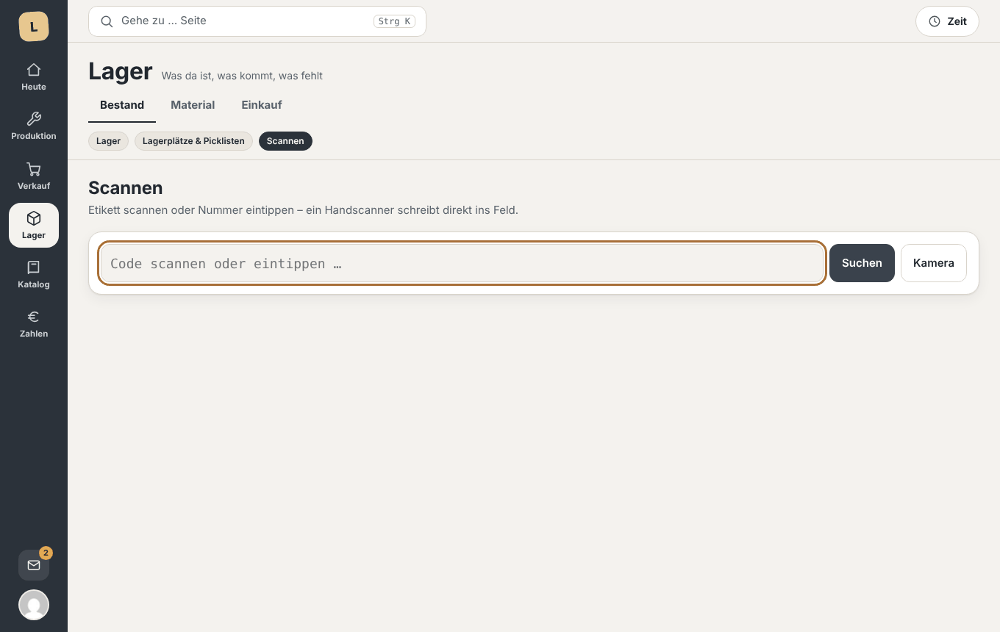
Ein Lagerplatz zeigt dir, was dort liegt. Ein Artikel zeigt Bestand und springt auf die Buchung. Ein Kleinteil oder Artikel mit offener Bestellung zeigt darunter den Block Wareneingang mit der Menge und dem Knopf Eingegangen ✓.
B.13 Bestand prüfen und korrigieren
Lager → Bestand → Lager
Wenn beim Picken im Fach weniger lag als auf der Liste: Klick beim Artikel auf Buchen, wähle Korrektur, trag die Differenz ein – lagen 18 statt 20 Stück da, trägst du -2 ein –, schreib eine Begründung (Pflicht: „Fach A-01-01 nachgezählt, zwei Stück fehlten“) und klick auf Buchen. Die Einzelheiten stehen in Kapitel A.13.
B.14 Wenn etwas nicht geht
| Beobachtung | Was los ist | Was du tust |
|---|---|---|
| Die Pickliste ist leer, oder es gibt keine | Es gibt keine offenen Bestellungen – oder sie wurden schon gepickt, oder es wurde keine Liste erzeugt | Unter Shop-Bestellungen nachsehen; Liste in der klassischen Ansicht erzeugen (B.3) |
| Eine Position hat keinen Platz („–“) | Dem Artikel ist noch kein Lagerplatz zugeordnet | Picken geht trotzdem; Zuordnung von der Betriebsleitung nachtragen lassen |
| Der Haken auf dem Handy reagiert nicht | Verbindung weg oder Liste veraltet | Auf Neu laden tippen |
| Der Scan erkennt den Code nicht | Etikett verschmutzt, zu klein gedruckt oder es ist ein Strichcode | Code bei Code eintippen von Hand eingeben |
| Zwei Picklisten mit derselben Ware | Der Erzeugen-Knopf wurde zweimal gedrückt | Nur eine abarbeiten, die andere liegenlassen und der Betriebsleitung melden |
| Der Lieferschein-Knopf fehlt | Die Bestellung ist schon versendet | Den Lieferschein über die Bestellseite öffnen oder in WooCommerce |
| Auf der Karte fehlt das Labelformular | Kein DHL-Zugang eingerichtet, oder dir fehlt das Recht Versandetiketten erzeugen | Kapitel B.7; Person mit Vollzugriff fragen |
| „Ohne Shop-Bestellung“ steht bei einem Auftrag | Eine Bestellung wurde in WooCommerce gelöscht | Nicht selbst stornieren – der Betriebsleitung sagen |
| Ein Platz oder Reiter fehlt | Dein Profil hat dafür kein Recht | Person mit Vollzugriff fragen |
B.15 Spickzettel für den Packtisch
- Klassische Ansicht von Lager → Lagerplätze & Picklisten → Reiter Picklisten → Pickliste aus offenen Bestellungen erzeugen.
- Handy:
/betrieb-erfassen/→ Reiter Picken → Zeile für Zeile abhaken, bis „0 offen“. (Oder am Computer: Verkauf → Bestellungen → Picklisten.) - Am Packtisch nach Bestellnummer sortieren und packen.
- Verkauf → Bestellungen → Versand → je Bestellung Lieferschein drucken, ins Paket.
- Gleiche Karte: Gewicht prüfen → Label erzeugen → Label öffnen → drucken, aufkleben.
- Paket weg? Versendet ✓ klicken.
Immer die Farbe auf der Liste prüfen – Anthrazit und Schwarz verwechselt man schneller, als man denkt.
Fehlbestand sofort korrigieren, nicht „nachher“.
Nichts abhaken, was nicht wirklich im Karton liegt.
Vor Label erzeugen das Gewicht anschauen – ab da ist das Paket frankiert.
Personal
Zwei Anleitungen in einer. Die Kapitel C.1 bis C.8 sind für alle, die ihre Arbeitszeit aufschreiben. Ab Kapitel C.9 geht es um Löhne, Rechte und Auswertungen – das braucht nur, wer Personal führt.
C.1 Warum überhaupt Zeit erfassen?
Nicht zur Kontrolle. Die erfasste Zeit hat drei ganz praktische Zwecke:
- Der Preis stimmt. In jedem Artikelpreis steckt Handarbeit. Wenn niemand aufschreibt, wie lange das Entgraten dauert, rechnet die Kalkulation mit einer Schätzung – und die ist meistens zu niedrig.
- Die Woche bleibt machbar. Es gibt einen Richtwert an Stunden je Woche. Nur wer erfasst, sieht rechtzeitig, dass es nicht reicht.
- Der Lohn ist nachvollziehbar. Aus Stunden mal Stundenlohn entstehen die Lohnkosten – ohne Excel-Zettel dazwischen.
Zeiterfassung kostet nur dann Nerven, wenn man sie am Monatsende rekonstruiert. Läuft die Uhr mit, sind es zwei Klicks – morgens starten, abends stoppen.
C.2 Anmelden und den Weg finden
- Browser öffnen, Adresse der Website plus
/erpeintippen, Enter. - Benutzername und Passwort eintragen, auf Anmelden klicken.
- Oben rechts auf den Knopf Zeit (Uhrsymbol) klicken. Das ist die Zeiterfassung. Sie ist auf jeder Seite des ERP erreichbar.
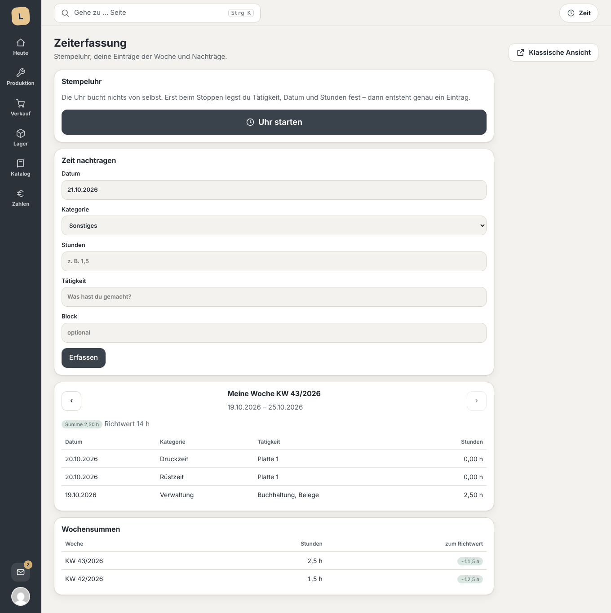
C.3 Die Stoppuhr: mitlaufen lassen
Die Stempeluhr ist der bequemste Weg: Du startest sie, wenn du anfängst, und stoppst sie, wenn du fertig bist. Die Uhr bucht nichts von selbst – erst beim Stoppen legst du Tätigkeit, Datum und Stunden fest, dann entsteht genau ein Eintrag.
- Wenn du anfängst zu arbeiten: auf Zeit → Uhr starten klicken.
- Der Knopf oben rechts zeigt von da an die laufende Zeit. Er ist auf jeder Seite zu sehen und bekommt einen grünen Rand, solange die Uhr läuft.
- Jetzt arbeitest du ganz normal weiter. Die Uhr merkt sich nebenbei, in welchen Bereichen des ERP du warst.
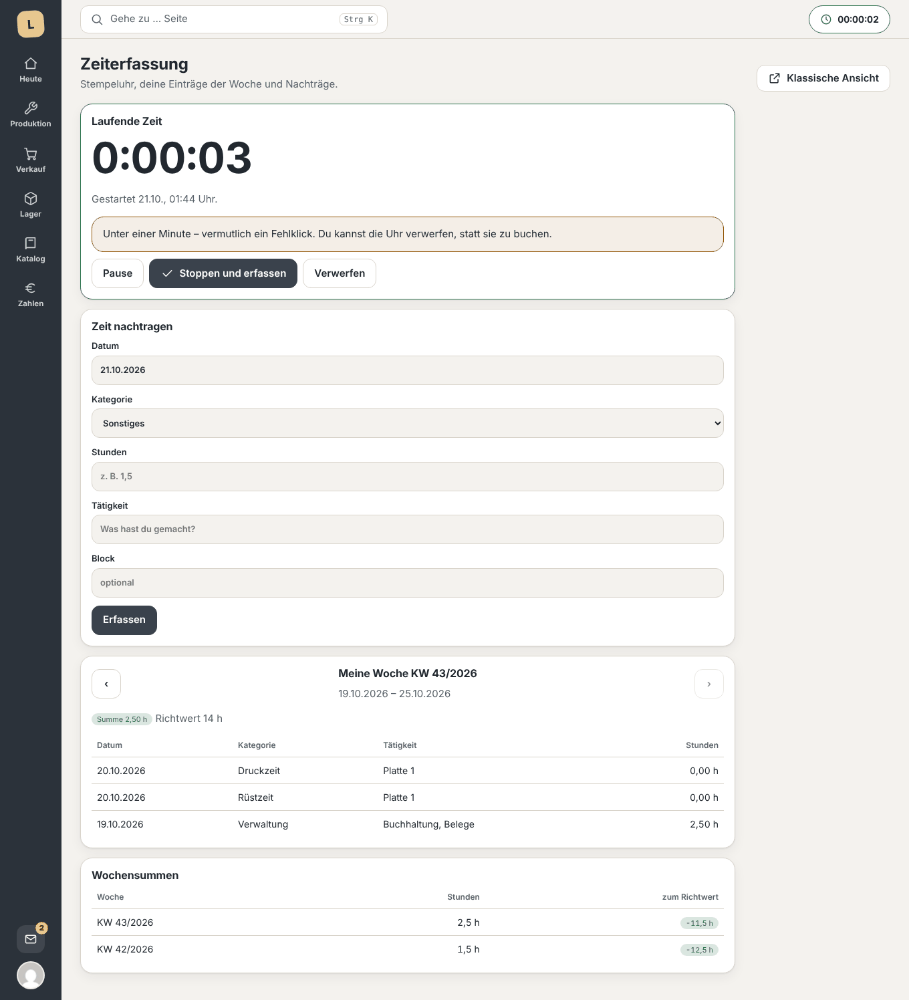
Mit Pause hält die Uhr an – der Knopf oben rechts zeigt dann Pause und die bisherige Zeit. Mit Weiter läuft sie wieder. Die Pause zählt nicht mit; es gilt nur die gearbeitete Zeit.
Gespeichert wird nur der Startzeitpunkt, nicht ein mitlaufender Zähler. Deshalb überlebt die Uhr einen zugeklappten Laptop, einen gesperrten Bildschirm und einen Neustart des Browsers.
C.4 Die Uhr stoppen und buchen
Wenn du fertig bist, klick auf Stoppen und erfassen – auf der Zeitseite, die du mit dem Knopf Zeit öffnest. Es erscheint das Fenster Zeit erfassen.
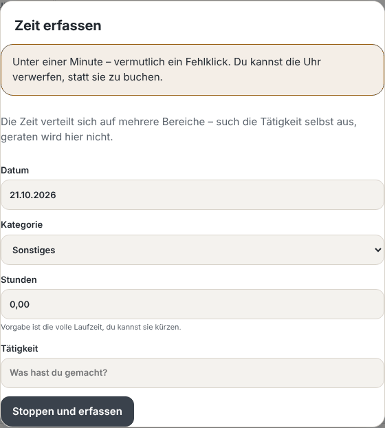
- Lies, was über dem Formular steht. Auf der Zeitseite steht „Währenddessen warst du hier: …“ – eine Erinnerungshilfe, keine Vorgabe.
- Wähle die Kategorie, die am besten passt (Kapitel C.6 erklärt sie). Ist die Zeit auf mehrere Bereiche verteilt, schlägt das ERP nichts vor („geraten wird hier nicht“).
- Prüfe die vorgeschlagene Stundenzahl. Sie ist die volle Laufzeit ohne Pausen. Trag ein, wenn du etwas anderes gearbeitet hast –
1,26heißt eine Stunde und knapp 16 Minuten. - Schreib bei Tätigkeit in ein paar Worten auf, was du getan hast: „Nachbearbeitung Haken, Grate entfernt“.
- Klick auf Stoppen und erfassen.
Steht dort eine sehr große Zahl (mehr als zehn Stunden), weist das ERP darauf hin, dass das nach einer vergessenen Uhr aussieht – es kürzt nichts heimlich. Trag dann die tatsächlich gearbeitete Zeit ein, bevor du erfasst. Gebucht wird auf den Starttag: Wer um 23:40 anfängt, hat am Vortag gearbeitet. Läuft die Uhr nur kurz, war es vermutlich ein Fehlklick: Dann klick auf Verwerfen – es wird nichts gebucht.
C.5 Zeit von Hand nachtragen
Uhr vergessen? Kein Drama. Auf der Zeitseite steht das Formular Zeit nachtragen.
- Datum: Steht auf heute. Für gestern klickst du auf das kleine Kalendersymbol und wählst den Tag.
- Kategorie: Aus der Liste wählen.
- Stunden: Als Dezimalzahl mit Komma. Eine Dreiviertelstunde ist
0,75, zweieinhalb Stunden sind2,5. Nicht2:30. - Tätigkeit: Kurz beschreiben, was war.
- Block: Kann leer bleiben. Wer in festen Arbeitsblöcken plant, trägt hier die Blockbezeichnung ein.
- Auf Erfassen klicken.
15 Min = 0,25 · 20 Min = 0,33 · 30 Min = 0,5 · 45 Min = 0,75 · 50 Min = 0,83 · 1 Std 10 Min = 1,17
Deine Woche und die Wochensummen lesen
Unter dem Formular steht Meine Woche mit der Kalenderwoche, deinen Einträgen und der Summe. Mit den kleinen Pfeilen blätterst du zur vorigen Woche; vor der aktuellen Woche geht es nicht weiter. Daneben steht der Richtwert in Stunden. Ganz unten zeigen die Wochensummen, wie weit jede Woche vom Richtwert entfernt war.
Der Richtwert ist keine Obergrenze, sondern eine Planungsgröße. Er zeigt, ob die Woche so gelaufen ist wie gedacht. Steht dort dauerhaft ein dickes Plus, stimmt entweder die Planung nicht – oder es ist wirklich zu viel Arbeit.
C.6 Die Kategorien richtig wählen
Es gibt zehn Kategorien. Sie entscheiden, in welcher Auswertung deine Stunden landen. Nimm die, die den größten Teil der Zeit ausmacht – es muss nicht auf die Minute stimmen, aber es sollte nicht dauernd „Sonstiges“ sein.
| Kategorie | Beispiele |
|---|---|
| Produktion | Entgraten, montieren, Teile prüfen |
| Rüstzeit | Platte rüsten, Material wechseln, Drucker vorbereiten |
| Druckzeit | Plattenwechsel am Drucker, Druck beobachten |
| Versand | Picken, packen, frankieren, zur Post fahren |
| Konstruktion | Modelle zeichnen, Revisionen anpassen, slicen, Probedrucke bewerten |
| Marketing | Produktfotos, Texte, Social Media, Messevorbereitung |
| Vertrieb | Händlergespräche, Angebote schreiben, Kundenanfragen |
| Verwaltung | Belege sortieren, Buchhaltung, Bestellungen beim Lieferanten |
| Wartung | Drucker reinigen, Düse wechseln, Reparaturen |
| Sonstiges | Alles, was in keine der obigen passt |
C.7 Zeit am Handy erfassen
Wer in der Werkstatt keinen Computer hat, erfasst am Handy. Öffne /betrieb-erfassen/ und tipp oben auf den Reiter Zeit. Dort läuft eine Stoppuhr mit Starten und, solange sie läuft, Pause und Weiter; gespeichert wird der Startzeitpunkt, nicht ein mitlaufender Zähler. Beim Stoppen gibst du Kategorie, Stunden und Tätigkeit ein und tippst auf Buchen. Auch die Uhr oben im ERP (Knopf Zeit) funktioniert am Handy.

C.8 Zeit an einem Auftrag oder einer Platte
Wenn du unter Lager → Bestand → Lagerplätze & Picklisten → Fertigungsaufträge bei einem Auftrag auf Starten klickst, läuft die Uhr an diesem Auftrag. In der Zeile steht danach die bisherige Zeit. Bei Platten läuft die Rüstzeit ab Rüsten starten und die Druckzeit ab Druck gestartet (Kapitel A.3).
Der Vorteil: Die Zeit hängt dann nicht nur am Tag, sondern am konkreten Auftrag oder an der Platte. Daraus entstehen die Ist-Lohnkosten je Auftrag – und die Auswertung Soll gegen Ist (Kapitel A.15), also die Antwort auf die Frage, ob ein Set beim aktuellen Preis überhaupt lohnt. Pausierst du den Auftrag, hält auch die Uhr an.
Die folgenden Kapitel setzen das Recht für Benutzer & Rechte und Löhne & Protokoll voraus (Profil Vollzugriff). Beide Seiten liegen im Profilmenü (Bild unten in der Seitenleiste). Ohne dieses Recht siehst du sie nicht – dann ist diese Anleitung für dich hier zu Ende.
C.9 Benutzer & Rechte: die Übersicht
Profilmenü → Benutzer & Rechte
Die Konten selbst kommen aus WordPress. Hier bestimmst du pro Person, was sie im ERP sieht und darf. Links steht die Liste aller Personen mit einem Suchfeld und den Filtern Alle, Mit ERP-Zugriff und Ohne; darunter der Hinweis, wie du eine neue Person anlegst. Rechts steht die gewählte Person.
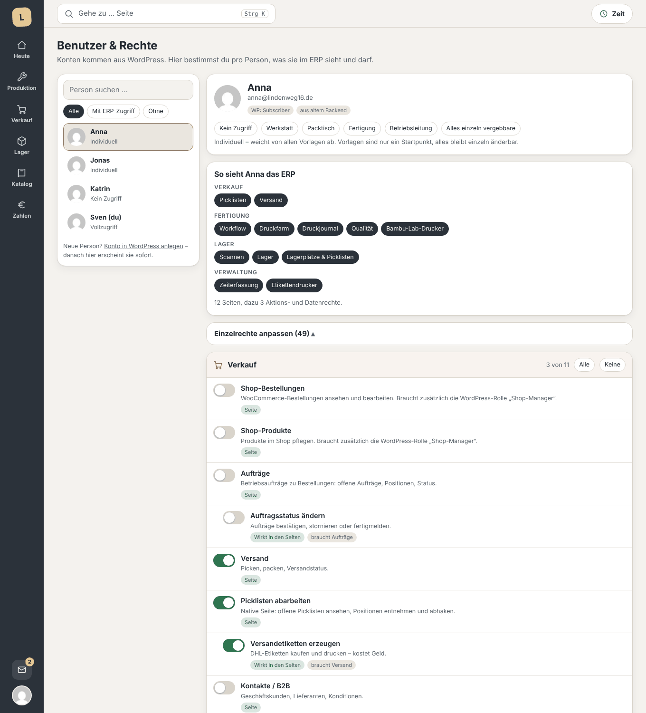
Auf der Karte der Person siehst du ihre WordPress-Rollen (zum Beispiel WP: Subscriber) und, ob sie die Shop-Rolle hat. Der Hinweis aus altem Backend heißt: Die Person wurde in dieser Oberfläche noch nie eingerichtet; ihre Rechte stammen aus dem bisherigen Backend. Wer den Vollzugriff hat, ist mit einer Warnung gekennzeichnet: Das lässt sich hier nicht beschneiden – so kann sich niemand aussperren.
C.10 Rechte vergeben: Vorlagen und Einzelrechte
Es gibt sechs Vorlagen. Sie sind nicht nach Datenbanktabellen geschnitten, sondern danach, was jemand im Betrieb tut. Eine Vorlage ist nur ein Startpunkt – danach bleibt alles einzeln änderbar.
| Vorlage | Für wen | Sieht Preise und Löhne? |
|---|---|---|
| Kein Zugriff | Sieht das ERP nicht | nein |
| Werkstatt | Aushilfe, Minijob: Drucke protokollieren, Platten abarbeiten, Zeit erfassen, Lager einsehen. Keine Stammdaten, kein Geld. | nein |
| Packtisch | Picken, packen, versenden und Etiketten drucken | nein |
| Fertigung | Wie Werkstatt, dazu Stammdaten, Material, Bedarf, Plan freigeben und Berichte – aber kein Geld | nein |
| Betriebsleitung | Alles Fachliche samt Shop, Kosten und Berichten. Keine Grundeinstellungen, keine Rechtevergabe. | ja |
| Alles einzeln vergebbar | Jedes einzeln vergebbare Recht – bis auf Rechte und Einstellungen sollte das nur die Leitung bekommen | ja |
So weist du Rechte zu
- Wähle links die Person.
- Klick oben auf die passende Vorlage. Darunter steht, was die Vorlage bedeutet („Vorlage Werkstatt: Drucke protokollieren …“). Weicht die Person von allen Vorlagen ab, steht dort Individuell.
- Prüf die Vorschau „So sieht … das ERP“: Sie zeigt, nach Bereichen geordnet, die Seiten, die die Person bekommt, und wie viele Aktions- und Datenrechte dazukommen.
- Brauchst du Feineinstellungen, klapp Einzelrechte anpassen (49) auf und schalte einzelne Rechte um.
- Unten erscheint eine Leiste „3 Änderungen für Anna – noch nicht gespeichert“. Klick auf Speichern – oder auf Zurücksetzen, um zu verwerfen.
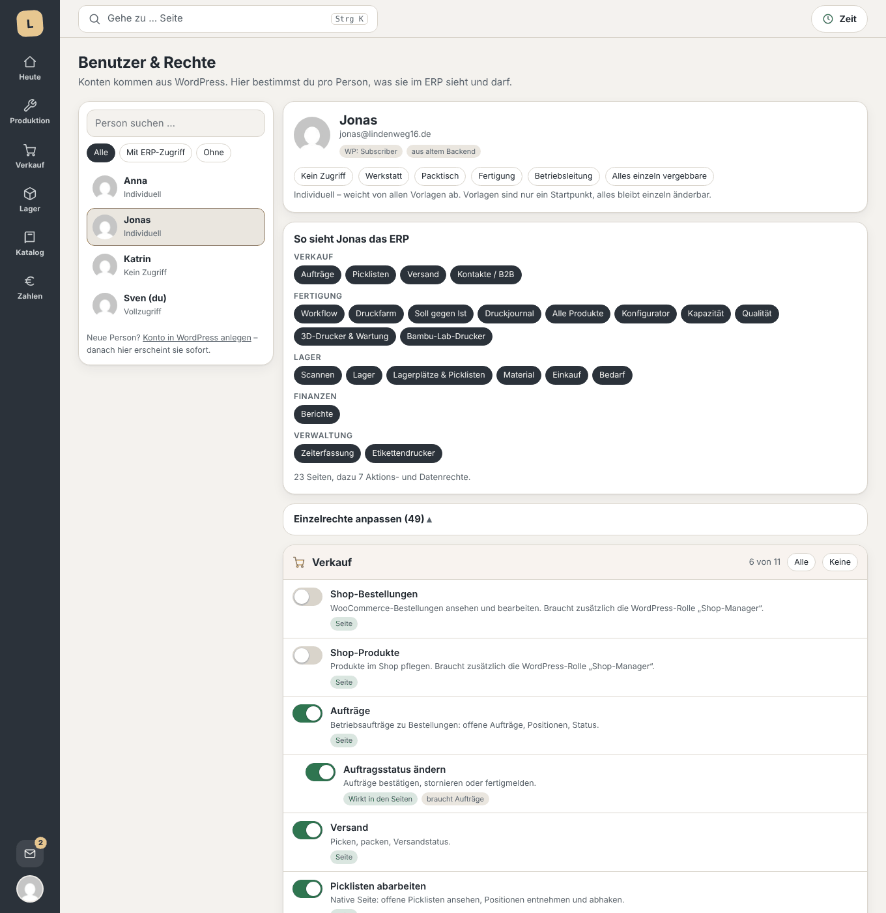
Du kannst dich nicht selbst aussperren. Die Rechte des Vollzugriffs lassen sich nicht beschneiden – ändern kann sie nur WordPress selbst.
Administratoren behalten ohnehin vollen Zugriff. Wer die Website verwaltet, kommt über das WordPress-Recht an alles heran. Eine Vorlage hier ändert daran nichts, und das ERP sagt das auch offen.
Jemand kann gleichzeitig Redakteur des Shops und Aushilfe in der Werkstatt sein. Deshalb liegen die Rechte am Benutzerkonto und nicht an der Rolle – so überschreibt keins das andere. Die Shop-Seiten (Shop-Bestellungen, Shop-Produkte) brauchen zusätzlich die WordPress-Rolle Shop-Manager.
C.11 Stundenlöhne pflegen
Profilmenü → Löhne & Protokoll
Klick auf eine Person, um ihre Seite zu öffnen. Dort stehen der Stundenlohn mit seinem Verlauf, die erfasste Zeit und das Protokoll.
- Öffne die Person (Klick in der Liste).
- Im Abschnitt Stundenlohn: € je Stunde eintragen, zum Beispiel
14,50. - Gilt ab setzen – das Datum, ab dem der Satz gilt.
- Eine kurze Bemerkung ist hilfreich: „Erhöhung laut Vertrag vom 12.03.“
- Auf Lohn festlegen klicken.
Jede Erhöhung ist eine neue Zeile mit einem Stichtag, keine Korrektur der alten. Das ist wichtig: Stunden aus dem letzten Jahr bleiben mit dem damaligen Satz bewertet. Wer den alten Satz einfach ändern könnte, würde rückwirkend alle Auswertungen verbiegen. Nur am selben Stichtag wird die vorhandene Zeile geändert – und protokolliert.
Hat jemand keinen Lohn hinterlegt, erscheinen seine Stunden in den Auswertungen als unbewertet („… h ohne Lohn“). Sie sind nicht verloren – sie zählen nur nicht in die Lohnkosten. Das ERP weist ausdrücklich darauf hin, damit nicht zu wenig herauskommt.
C.12 Das Protokoll eines Nutzers
Auf der Seite einer Person steht ganz unten das Protokoll: ihre letzten Vorgänge aus dem hashverketteten Protokoll, mit Zeit, Vorgang und – wenn angegeben – Begründung. Darüber steht, in welchen Bereichen sie hauptsächlich gearbeitet hat.
Das Protokoll hält fest, wer wann was geändert hat. Jeder Eintrag enthält die Prüfsumme seines Vorgängers – wird ein Datensatz nachträglich verändert, bricht die Kette und das fällt bei der Prüfung auf (Kapitel D.13).
Es sagt, was geschah. Es sagt nicht, ob es richtig war. Nimm es als Werkzeug, um einen Fehler zurückzuverfolgen („wann ist der Bestand gekippt?“), nicht als Leistungsmessung. Für Letzteres taugt es nicht, und dafür ist es nicht gebaut.
C.13 Gerechnet gegen bezahlt
Auf der Löhne-Seite steht unter der Liste der Kasten Stundensatz: gerechnet gegen bezahlt. Zwei Zahlen stehen sich gegenüber:
- Tatsächlich bezahlt – Lohnkosten geteilt durch bewertete Stunden im Zeitraum.
- Gerechnet – der kalkulatorische Stundensatz, der in jeder Preiskalkulation steckt.
Weichen sie deutlich ab, erscheint ein rotes Schild („Der kalkulatorische Stundensatz weicht spürbar ab“). Das ist kein Fehler, sondern eine Frage an dich: Ist der kalkulatorische Satz noch richtig?
Der kalkulatorische Satz steckt in jedem Preis. Ein Preis, der sich jeden Monat von selbst verschiebt, ist keiner. Ändern kannst du ihn bewusst unter Profilmenü → Einstellungen → Kalkulation – mit einem Stichtag, sodass alte Kalkulationen bleiben, wie sie waren (Kapitel D.5).
C.14 Einen neuen Mitarbeiter anlegen
Das läuft in zwei Schritten, weil zwei Systeme beteiligt sind: WordPress kennt das Benutzerkonto, das ERP vergibt die Rechte.
- Konto anlegen: Im Profilmenü auf WordPress-Verwaltung, dort links auf Benutzer → Neu hinzufügen. Benutzername, Vor- und Nachname und E-Mail-Adresse eintragen. Als Rolle genügt Abonnent – die ERP-Rechte kommen im nächsten Schritt. (Auf der Seite Benutzer & Rechte steht dazu unter der Personenliste der Link „Konto in WordPress anlegen“.)
- Den Haken bei Benutzer benachrichtigen setzen, damit die Person eine Mail mit ihrem Zugang bekommt. Auf Neuen Benutzer hinzufügen klicken.
- Rechte vergeben: Auf Profilmenü → Benutzer & Rechte gehen – die Person erscheint in der Liste sofort –, eine Vorlage wählen und Speichern (Kapitel C.10).
- Stundenlohn eintragen, falls die Person bezahlt wird (Kapitel C.11).
- Der Person zeigen, wo die Uhr ist (Zeit oben rechts), und ihr diese Anleitung geben – Kapitel C.2 bis C.6 reichen für den Anfang.
Setz die Vorlage auf Kein Zugriff statt das Konto zu löschen. Erfasste Zeiten, Buchungen und Protokolleinträge bleiben so zuordenbar. Ein gelöschtes Konto hinterlässt Buchungen ohne Namen – und die Frage, wer das war, lässt sich dann nicht mehr beantworten.
C.15 Datenschutz: was hier steht und was nicht
- Erfasst werden Datum, Kategorie, Stundenzahl, eine kurze Tätigkeitsbeschreibung und – wenn die Uhr lief – die Bereiche des ERP, in denen gearbeitet wurde.
- Es gibt keine Tastenaufzeichnung, keine Bildschirmfotos, keine Standortdaten und keine Klickstrecken.
- Wer die Löhne und das Protokoll sehen darf, ist auf das entsprechende Recht beschränkt. Werkstatt und Fertigung sehen weder fremde Löhne noch fremde Protokolle.
- Für die Auswertung nach außen (Steuerberatung, Analyse) gibt es einen eigenen Export, der Namen von Geschäftskunden weglässt, solange man sie nicht ausdrücklich mitgibt.
C.16 Wenn etwas nicht geht
| Beobachtung | Was los ist | Was du tust |
|---|---|---|
| „Bitte eine Stundenzahl größer als 0 eintragen“ | Das Feld ist leer oder enthält eine 0 | Stunden als Dezimalzahl eintragen, z. B. 1,5 |
| „Mehr als 24 Stunden an einem Tag sind ein Tippfehler“ | Wahrscheinlich 7:30 statt 7,5 eingegeben | Als Dezimalzahl schreiben |
| Die Uhr lief über Nacht | Stoppen vergessen | Beim Stoppen die tatsächliche Zeit eintragen, nicht die Vorgabe |
| Der Zeit-Knopf zeigt „Zeit“, obwohl ich die Uhr gestartet habe | Die Seite hat den Stand noch nicht geholt | Seite neu laden (F5) |
| Lohnkosten stehen auf 0 € | Kein Stundenlohn hinterlegt | Kapitel C.11 |
| „… Stunden ohne hinterlegten Lohn“ | Ein Teil der Stunden fällt in eine Zeit vor dem ersten Lohnstichtag | Lohn mit früherem Stichtag nachtragen |
| Eine Person taucht in der Liste nicht auf | Sie hat kein WordPress-Konto, oder der Filter steht auf Mit ERP-Zugriff | Filter auf Alle stellen; Konto anlegen (Kapitel C.14) |
| Die Vorlagen sind bei mir selbst gesperrt | Absicht – niemand ändert seine eigenen Vollzugriff-Rechte | Andere Person mit Vollzugriff bitten |
| Beim Wechsel der Person fragt das ERP „Ungespeicherte Änderungen verwerfen?“ | Du hast Rechte geändert, aber noch nicht gespeichert | Abbrechen und erst Speichern – oder bewusst verwerfen |
Administration
Für die Person, die das Plugin einrichtet, die Zahlen dahinter pflegt und dafür geradesteht. Von der Installation über die Kalkulationsgrundlagen bis zum Livegang und der Buchhaltung.
D.1 Wie das Plugin aufgebaut ist
Lindenweg16 ERP ist ein einziges WordPress-Plugin, das direkt in WooCommerce lebt. Es gibt keinen externen Dienst, keine Zwischenschicht und keinen nächtlichen Abgleich – die Bestellung im Shop und die Buchung im Lager sind dieselbe Datenbank.
Bedient wird es über die Oberfläche unter /erp (Kapitel 2). Die klassischen Seiten im WordPress-Verwaltungsbereich gibt es weiterhin; auf fast jeder ERP-Seite führt der Knopf Klassische Ansicht dorthin. Die Plätze und was in ihnen liegt, steht in der Tabelle in Kapitel 2. Für die Verwaltung sind vor allem diese Stellen wichtig:
| Aufgabe | Weg |
|---|---|
| Firma, DHL, E-Mail-Vorlagen, Storno-Verhalten | Profilmenü → Einstellungen → Plugin |
| Kalkulationsannahmen, Rabattstaffel, Farben und Lagerhoheit | Profilmenü → Einstellungen, die übrigen Reiter |
| Rechte und Löhne | Profilmenü → Benutzer & Rechte und Löhne & Protokoll (Teil C) |
| Artikel, Stücklisten, Preise | Katalog → Produkte → Alle Produkte |
| Buchhaltung, Berichte, Reporting | Zahlen |
| Drucker im Netz, Etikettendrucker, Import | Profilmenü und Produktion → Drucker |
| Livegang, Komponenten, Verbrauchsmaterial, erste Filamentcharge, manuelle Bestellung | nur in der Klassischen Ansicht (wp-admin) |
Vier Grundsätze, die das Verhalten erklären
- Nichts Berechnetes wird gespeichert. Stückpreise, Herstellkosten, Maschinenstundensätze, Bestände und Kennzahlen entstehen bei jedem Aufruf neu aus den Rohdaten. Es gibt deshalb keine Zahl, die „veraltet“ sein kann.
- Kein hartes Löschen bei Bewegungsdaten. Druckjobs, Lagerbewegungen und Chargen werden storniert, nicht gelöscht. Stammdaten lassen sich stilllegen und – solange keine Buchung daran hängt – löschen.
- Annahmen gelten ab einem Stichtag. Eine Änderung überschreibt nie den alten Wert, sondern erzeugt eine neue Zeile. Alte Kalkulationen bleiben nachrechenbar.
- Rechte sind fein geschnitten. Sehen und Ändern sind getrennt, und Geld ist ein eigenes Recht. Ein Aushilfsvertrag ist kein Grund, jemandem den Zugang zu verwehren – aber auch keiner, ihm die Kalkulation zu zeigen.
D.2 Installation und Update
WooCommerce muss installiert und aktiv sein. Ohne WooCommerce bricht die Aktivierung mit einer Meldung ab und das Plugin deaktiviert sich selbst wieder. Außerdem: WordPress 6.2 oder neuer, PHP 7.4 oder neuer. Die Seite unter /erp braucht außerdem, dass „schöne“ Permalinks eingestellt sind (Einstellungen → Permalinks in WordPress, nicht „Einfach“).
- Den Plugin-Ordner nach
wp-content/plugins/kopieren – per FTP, SFTP oder über die Dateiverwaltung des Hosters. - Im WordPress-Verwaltungsbereich auf Plugins gehen und bei Lindenweg16 ERP auf Aktivieren klicken.
- Beim Aktivieren passiert automatisch: alle Datenbanktabellen werden angelegt, die Rollen
lw16_managerundlw16_betriebwerden registriert, und das geschützte Belegverzeichnis wird erstellt. - Den Personen, die mit dem Plugin arbeiten sollen, die passenden Rechte geben (Teil C, Kapitel C.10). Administratoren haben ohnehin vollen Zugriff.
deine-website.de/erpöffnen und prüfen, dass die Oberfläche erscheint.
Update
Ein Update ist ein Austausch des Ordners. Beim ersten Aufruf danach läuft der Schema-Abgleich mit und ergänzt fehlende Tabellen und Spalten. Es geht dabei nichts verloren. Das Theme-Paket lindenweg16.zip (Block-Theme) ist ein eigenes Paket und wird getrennt aktualisiert.
Das ist kein Ritual, sondern die einzige Rückfahrkarte. Das Plugin hat keinen Papierkorb.
D.3 Einrichten – in dieser Reihenfolge
Die Reihenfolge ist nicht beliebig: Jeder Schritt braucht, was der vorige angelegt hat.
| # | Was | Wo | Warum zuerst |
|---|---|---|---|
| 1 | Firmendaten, Logo, Kleinunternehmer-Kennzeichen | Profilmenü → Einstellungen → Plugin | Steht auf Rechnungen und Lieferscheinen |
| 2 | Kalkulationsannahmen | Einstellungen → Kalkulation | Ohne sie rechnet jede Kalkulation gegen Standardwerte |
| 3 | Farbattribut und Standardfarbe | Einstellungen → Farben & Lager | Jede Lagerbuchung braucht eine Farbe |
| 4 | Lagerplätze | Lager → Bestand → Lagerplätze & Picklisten | Artikel bekommen einen Standardplatz |
| 5 | Drucker | Produktion → Drucker → 3D-Drucker & Wartung | Aus Gerätedaten kommt der Maschinenstundensatz |
| 6 | Komponenten (Kleinteile), Verbrauchsmaterial, erste Filamentcharge | Klassische Ansicht von Katalog bzw. Lager → Material | Werden in Stücklisten und Aufträgen gebraucht |
| 7 | Artikel, Revisionen, Stücklisten | Katalog → Produkte → Alle Produkte | Grundlage von allem Weiteren |
| 8 | Rabattstaffel | Einstellungen → Rabattstaffel B2B | Wird bei jeder Händlerbestellung aufgelöst |
| 9 | Benutzer und Rechte | Profilmenü → Benutzer & Rechte | Damit alle arbeiten können |
| 10 | Livegang (Probedaten löschen) | wp-admin → Verwaltung → Livegang | Ganz zum Schluss, siehe Kapitel D.17 |
Vier Dinge legst du noch nicht in der ERP-Oberfläche an: Komponenten (Kleinteile mit Gebindegröße und -preis) und Artikel in der Stückliste, Verbrauchsmaterial, die erste Filamentcharge und manuelle Bestellungen. Du erreichst sie über den Knopf Klassische Ansicht auf den Seiten Lager → Material und Verkauf → Bestellungen (im wp-admin: Lager → Material, Verkauf → Bestellungen, Fertigung → Artikel & Revisionen). Danach arbeitest du wieder im ERP weiter. Die Seite Kleinteile & Kartons unter Lager → Bestand → Lager zeigt, was dort angelegt wurde.
D.4 Firmendaten und E-Mail-Vorlagen
Profilmenü → Einstellungen → Plugin (Firma, DHL, …)
Gespeicherte Passwörter und Schlüssel zeigt die Seite nie an. Ein leeres Feld heißt unverändert; nur was du hineinschreibst, wird überschrieben. Das Logo wählst du weiterhin in der Klassischen Ansicht aus der Mediathek.
Firmendaten
Firmenname, Straße, PLZ/Ort, Steuernummer, E-Mail, Telefon, IBAN und BIC. Diese Angaben erscheinen auf Rechnungen, Lieferscheinen und in den automatischen E-Mails. Trag sie vollständig ein – ein Lieferschein ohne Absender sieht unseriös aus.
Corporate Identity
- Logo: Auswahl aus der Mediathek in der Klassischen Ansicht. JPEG ist empfohlen, weil es sich sauber in PDFs einbetten lässt.
- Markenfarbe: Hintergrundfarbe der Kopfzeile in E-Mails.
Buchhaltung
| Einstellung | Bedeutung |
|---|---|
| Kleinunternehmer §19 UStG | Ist der Haken gesetzt, wird keine Umsatzsteuer ausgewiesen und alle Beträge sind brutto. Prüf das mit deiner Steuerberatung, bevor du es änderst. |
| Zahlungsgebühren aus Bestellhinweisen übernehmen | Zieht die Gebühren von PayPal & Co. automatisch aus der Bestellung. |
| Geschätzter Steuersatz für Rücklage | Nur für die Rücklagenanzeige. Ein Richtwert, keine Steuerberatung. |
| Rechnungsnummern-Modus | jahr = je Jahr neu durchlaufend. |
| Rechnung automatisch stornieren (Gruppe „Storno und Erstattung“) | Siehe Kapitel D.21. |
DHL: Sendungsverfolgung und Versandlabel
Zwei getrennte Abschnitte mit zwei getrennten Zugängen – die DHL vergibt sie einzeln, und der eine funktioniert nicht für den anderen.
| Abschnitt | Wofür | Was hinein gehört |
|---|---|---|
| Reporting & DHL-Sendungsverfolgung | Den Stand einer Sendung abfragen | Ein API-Key für die Tracking-Schnittstelle |
| DHL Geschäftskundenversand | Labels erzeugen und stornieren | API-Key und API-Secret der Anwendung, dazu Benutzer und Passwort des Geschäftskundenportals |
Fürs Frankieren prüft die DHL auf zwei Ebenen: Wer ist die Anwendung (API-Key + API-Secret von developer.dhl.com), und wer ist der Geschäftskunde (Benutzer + Passwort aus dem Geschäftskundenportal). Fehlt eine der beiden Ebenen, lehnt sie ab – ein API-Key allein genügt nicht.
Diese vier Angaben gibt es getrennt für Sandbox und Live – zwei eigene Zeilenblöcke in den Einstellungen. Ein Login, das im Echtbetrieb gilt, weist die Sandbox mit invalid_grant zurück, und umgekehrt. Benutzer und Passwort der Sandbox sind ein von DHL öffentlich dokumentierter fester Testzugang und stehen deshalb schon vorbelegt da – nur den Sandbox-API-Key (und ggf. das -Secret) trägst du selbst aus deiner Sandbox-App auf developer.dhl.com ein.
Beide Passwortfelder zeigen einen gespeicherten Wert nie an. Ein leeres Feld heißt „unverändert“.
Dazu gehören die zehnstellige Kundennummer (EKP) und die zweistellige Teilnahme aus dem Geschäftskundenportal. Aus beidem und dem Verfahren des gewählten Produkts baut das Plugin die vierzehnstellige Abrechnungsnummer selbst – sie entscheidet, welcher Vertrag greift und welches Konto belastet wird. Weicht die Teilnahme je Produkt ab, gibt es dafür eigene Felder; sonst gilt überall dieselbe. Beide Felder gelten nur im Echtbetrieb: In der Sandbox bucht die DHL auf ihre eigene Testkundennummer, und das Plugin setzt sie ein, solange der Haken sitzt – deine Angaben bleiben dabei unberührt.
Nach dem Speichern auf Verkauf → Bestellungen → Versand gehen und oben auf DHL-Zugang prüfen klicken. Der Knopf meldet sich einmal an, ohne ein Label zu erzeugen, und sagt im Klartext, was fehlt. Ohne ihn merkt man einen falschen Zugang erst beim ersten Paket – und liest dort eine Meldung, die nach einem Adressproblem aussieht.
- Labelformat:
910-300-610für das Thermo-Rollenetikett (103 × 199 mm),A4für Papier. Was dein Konto kann, steht im Geschäftskundenportal. - Verpackungszuschlag: Wird auf jedes gerechnete Sendungsgewicht addiert – Karton und Polster wiegen mit.
- Sandbox-Modus: Ab Werk gesetzt. Sandbox-Labels sehen echt aus, sind aber keine gültige Frankierung. Für Sandbox und Echtbetrieb gelten eigene Zugangsdatenfelder.
E-Mail-Vorlagen
Unter jedem Feld stehen die verfügbaren Platzhalter – {firmenname} gibt es in jeder Vorlage. Schreib die Platzhalter genau so ab, mit geschweiften Klammern.
D.5 Kalkulationsannahmen
Profilmenü → Einstellungen → Kalkulation
Das ist die wichtigste Seite des ganzen Plugins. Hier stehen die Zahlen, aus denen jeder Preis entsteht.
| Annahme | Was sie bedeutet |
|---|---|
| Filamentpreis (€/kg) | Rückfallwert, wenn an einem Druckjob keine Charge hängt |
| Kalkulatorischer Stundensatz (€/h) | Der Satz, mit dem Handarbeit in den Preis eingeht – nicht der bezahlte Lohn |
| Lebensdauer je Gerät (Betriebsstunden) | Grundlage der Abschreibung im Maschinenstundensatz |
| Ersatzteile und Verschleiß (€ je Gerät und Jahr) | Wird über die Betriebsstunden umgelegt |
| Geplante Betriebsstunden je Gerät und Jahr | Der Nenner dieser Umlage – darf nie 0 sein |
| Leistungsaufnahme (kW) und Strompreis (€/kWh) | Ergeben die Energiekosten je Druckstunde |
| Zahlungsgebühr variabel / fix | Anteil und Festbetrag je Transaktion |
| Verpackung + Beileger (€ je Bestellung) | Fällt genau einmal je Bestellung an – deshalb trägt sich ein Set besser als Einzelteile |
| Ausschusszuschlag (Anteil) | Kalkulatorischer Aufschlag für Ausschuss |
| Umsatzsteuersatz (Anteil) | Bei Kleinunternehmerregelung 0 |
| Nettodruckstunden je Gerät und Woche | Kapazitätsplanung |
| Minuten je Plattenwechsel | Bedienzeit, die auf die Teile umgelegt wird |
| Eigene Arbeitsstunden je Woche | Das Wochenbudget in der Zeiterfassung |
| Kundengewinnungskosten Direktverkauf (€) | Fließt in den Deckungsbeitrag II ein |
| Warnschwelle DB II je Position (€) | Ab wann eine Position als unwirtschaftlich markiert wird |
Einen Wert ändern
- In der Zeile der Annahme den neuen Wert eintragen. Punkt oder Komma sind beide erlaubt.
- Das Datum setzen, ab dem er gelten soll.
- Eine Begründung schreiben: „Stromvertrag ab 01.10. teurer“. Sie steht später im Verlauf und erspart dir in zwei Jahren das Rätselraten.
- Auf Festschreiben klicken.
Der alte Wert wird zum Vortag abgeschlossen und bleibt stehen. Im Verlauf siehst du die ganze Geschichte. Mit dem Feld Gültig zum Stichtag oben kannst du dir ansehen, welche Werte an einem beliebigen Tag galten – und damit jede alte Kalkulation nachrechnen.
D.6 Farben und Lagerhoheit
Profilmenü → Einstellungen → Farben & Lager
Farbsystem
Die Farben kommen aus einem globalen WooCommerce-Produktattribut, üblicherweise pa_farbe. Es gibt bewusst keine zweite, plugin-eigene Farbliste: Die Farbe muss ohnehin im Shop sichtbar sein, und zwei Listen driften genau dann auseinander, wenn eine Farbe dazukommt. Gespeichert wird immer der Slug (anthrazit), nie der Anzeigename – so verlieren alte Buchungen ihre Zuordnung nicht, wenn der Anzeigename sich ändert.
- Existiert das Attribut noch nicht, sagt die Seite das. Leg es an unter Produkte → Attribute in WooCommerce.
- Dort für jede Farbe einen Begriff anlegen.
- Hier die Standardfarbe setzen. Sie greift für jede Position, die keine eigene Farbe trägt – bei nur einer produzierten Farbe ist das der Normalfall.
Lagerhoheit
Das Plugin kennt zwei Lagermodelle: den fortgeschriebenen Bestand des alten Lager-Moduls und das Bewegungskonto von Betrieb. Beide gleichzeitig buchen zu lassen, würde jeden Abgang doppelt zählen. Der Haken Lagerhoheit entscheidet:
| Stellung | Wirkung |
|---|---|
| Haken gesetzt | Betrieb bucht die Abgänge genau der Produkte, die auf einen Artikel im Artikelstamm zeigen. Das Lager-Modul lässt diese in Ruhe. |
| Haken entfernt | Das Lager-Modul bucht alle Abgänge. Das Bewegungskonto bleibt für Verkäufe leer, die Bestände im Betrieb stimmen dann nicht. |
Schalte die Übernahme erst ein, wenn die Artikel angelegt und mit ihren Shop-Produkten verknüpft sind. Sonst laufen Verkäufe von Produkten ohne Artikelzuordnung ins Leere.
Nachbestellseite und Wochenmail
Auf derselben Seite stehen zwei weitere Einstellungen: ob die Nachbestellseite für Händler in das Website-Design eingebettet oder als schlichte eigene Seite mit Logo erscheint, und ob die wöchentliche Zusammenfassung per E-Mail verschickt wird – Kennzahlen, Alarme, Beschaffung, Wartung und Wiedervorlagen der vergangenen Woche. Gespeichert wird alles mit Speichern unten.
D.7 Rabattstaffel für Händler
Profilmenü → Einstellungen → Rabattstaffel B2B

- Die Stufen eintragen: ab welchem Bestellwert welcher Rabatt gilt.
- Ein Datum bei Neue Staffel gültig ab setzen und eine Begründung eintragen.
- Auf Festschreiben klicken.
Auch hier wird nichts überschrieben: Die bisherigen Stufen werden zum Vortag abgeschlossen und bleiben stehen. Eine Auswertung alter Bestellungen rechnet weiterhin mit der damals gültigen Staffel.
Händler pflegen: Kontakte / B2B
Verkauf → Kunden → Kontakte / B2B
Sonderkonditionen für einzelne Händler stehen nicht in der Standardstaffel, sondern in der Kontaktakte. Klick in der Liste auf den Kontakt.
Jede Aktivität (Telefonat, Mustersendung, Angebot) braucht eine Wiedervorlage – ohne nächsten Termin versandet ein Gespräch. Ohne sie nimmt das Formular den Eintrag nicht an. Fällige Wiedervorlagen stehen oben in der Liste und auf Heute. Konditionen je Händler werden wie die Staffel mit Stichtag festgeschrieben; der Verlauf der Konditionen klappt darunter auf.
Kommissionsware buchen
Unter dem Kommissionsbestand liegt der Knopf zum Buchen. Der Dialog zeigt die Liste aller verkäuflichen Artikel, je Farbe ein Feld. Oben wählst du den Vorgang – ausliefern, abrechnen oder zurücknehmen –, trägst die Mengen ein und buchst einmal. Eine Auslieferung umfasst selten einen Artikel; Zeile für Zeile zu buchen hieße achtzehn Seitenladungen, und wer im Laden steht und den Karton auspackt, verzählt sich.
Was der Händler von einer Farbe bereits hat, steht neben dem Feld. Beim Zurücknehmen und Abrechnen geht es fast immer um genau diese Kombinationen – so rechnet niemand mehr ab, als draußen liegt.
Von sechzig Feldern füllst du drei aus – die anderen erzeugen keine Buchung über null Stück. Steht dagegen in einer Zeile Unsinn, wird gar nichts gebucht: Eine halb gebuchte Lieferung ist schlimmer als eine nicht gebuchte, weil sie aussieht wie eine fertige.
Die Rabattstaffel hängt am Bestellwert. Acht einzeln abgerechnete Artikel ergaben achtmal einen kleinen Wert und damit achtmal die unterste Staffel; die Lieferung als Ganzes erreicht die Stufe, die dem Händler zusteht.
Am Handy
Dieselbe Liste steht in der mobilen Erfassung unter Kommission – gedacht für den Moment, in dem du beim Händler im Laden stehst. Oben Händler und Vorgang wählen, mit Artikel suchen die Liste eindampfen, Mengen eintippen. Unten läuft eine Summe mit, damit du vor dem Buchen siehst, was du gleich buchst.
Eine Zeile, in der schon eine Menge steht, bleibt beim Suchen sichtbar – sonst bucht man blind etwas mit, das man gerade nicht sieht. Nach dem Buchen leeren sich die Felder: Sonst schickte der nächste Druck auf Liste buchen dieselbe Lieferung ein zweites Mal. Ohne Netz wandert die Liste wie jede andere Buchung in die Warteschlange und geht raus, sobald wieder Empfang da ist.
D.8 Stammdaten anlegen
Der ausführliche Weg steht in Teil A, Kapitel A.11. Hier nur, was aus Verwaltungssicht wichtig ist.
Beschaffungsweg – er entscheidet, ob der Artikel eine Revision, eine Stückliste oder Beschaffungsdaten braucht. Falsch gesetzt, verlangt das System später Dinge, die es gar nicht geben kann.
Verknüpfung zum Shop-Produkt – ohne sie erkennt das Plugin bei einer Bestellung nicht, welcher Artikel gemeint ist, und bucht keinen Bestand ab.
Standard-Lagerplatz – ohne ihn steht auf jeder Pickliste ein Strich statt eines Fachs.
Komponenten (Kleinteile) werden im Gebinde gekauft und im Stück verbraucht. Du trägst Gebindegröße und Gebindepreis ein, der Stückpreis wird gerechnet, nicht gepflegt. Angelegt werden sie in der Klassischen Ansicht (Fertigung → Artikel & Revisionen → Komponenten); im ERP siehst du sie unter Lager → Bestand → Lager → Kleinteile & Kartons.
Auf dem Reiter Beschaffung stehen Lieferant, Mindestmenge und Lieferzeit der Zukauf- und Hybridartikel. Ein Preiswechsel des Lieferanten erzeugt eine neue Zeile – alte Kalkulationen rechnen mit dem damaligen Preis weiter.
Konfigurator
Katalog → Konfigurator

Was ein Kunde konfiguriert, landet als codierte Konfiguration im Warenkorb und wird beim Bestellen wieder in echte Artikel aufgelöst – Lagerabgang und Kalkulation funktionieren also genauso wie bei einem normalen Artikel.
AR-Ansicht „An deiner Wand ansehen“
Katalog → AR-Ansicht und in WordPress Produkte → Produkt bearbeiten → 3D-Modell (AR)
Besucher mit dem Handy können ein Produkt mit der Kamera in Originalgröße an ihrer eigenen Wand ansehen – ohne App. Das Ganze besteht aus drei Teilen: einem 3D-Modell am Produkt, einem unaufdringlichen Hinweis auf der Produktseite („Passt der Haster Haken an deine Wand?“) und einer eigenen Seite, auf der die Ansicht startet. Auf dem Rechner sieht man den Hinweis nie; dort zeigt die Seite nur das drehbare Modell und einen QR-Code zum Öffnen am Handy.
1. Das Modell vorbereiten – und den Maßstab prüfen
Das Modell ist eine GLB-Datei (ein 3D-Format für das Web). Sie entsteht in deiner Konstruktionssoftware oder in Blender und muss zwei Bedingungen erfüllen:
- Maßstab: 1 Einheit = 1 Meter. Die AR-Ansicht zeigt das Modell in genau der Größe, die in der Datei steht, und lässt es nicht skalieren. Eine Leiste, die 100 cm lang ist, muss in der Datei 1,00 lang sein (nicht 100 und nicht 1000). Stimmt der Maßstab nicht, zeigt das Handy die Leiste winzig oder riesig – und der ganze Zweck der Funktion ist verfehlt.
- Unkomprimiert exportieren. Beim Export keine Draco-, Meshopt- oder KTX2-Kompression einschalten. Diese Verfahren brauchen Hilfsdateien, die Google oder ein CDN ausliefern würden; das Plugin lädt bewusst nichts von Dritten nach (Datenschutz), ein komprimiertes Modell zeigt deshalb nur eine Fehlermeldung.
In Blender: Szeneneinheiten auf Meter, Einheitenmaßstab 1,0, am Objekt Skalierung anwenden (Strg+A), dann in den Eigenschaften die Abmessung ablesen: Länge der Leiste = 1,00 m. Export als glTF Binär (.glb), Kompression aus. Die endgültige Probe machst du später am Handy: Leiste an der Wand platzieren und mit einem Zollstock gegenprüfen.
Die Datei sollte einige Megabyte nicht überschreiten – sonst dauert das Laden am Handy zu lange. Optional kannst du zusätzlich eine USDZ-Datei für das iPhone bereitstellen; ohne sie erzeugt der Viewer sie dort selbst aus der GLB. Ein Posterbild wird gezeigt, bis das Modell geladen ist.
2. Hochladen und am Produkt hinterlegen
- In WordPress: Produkte → Produkt bearbeiten, rechts die Box 3D-Modell (AR).
- Bei GLB-Datei auf Auswählen klicken, die Datei in die Mediathek hochladen (oder eine vorhandene wählen) und Diese Datei verwenden. Die GLB ist Pflicht – ohne sie passiert nirgends etwas.
- Optional USDZ-Datei und Posterbild ebenso.
- Haken bei AR-Hinweis auf dieser Produktseite anzeigen setzen, wenn auf der Produktseite der Hinweis erscheinen soll. Ohne Haken bleibt die Produktseite unverändert; das Modell steht trotzdem auf der AR-Seite zur Auswahl.
- Aktualisieren klicken.
Nur Administratoren können GLB- und USDZ-Dateien in die Mediathek laden. Das Plugin prüft außerdem, ob der Inhalt wirklich zur Endung passt – eine umbenannte Datei wird abgewiesen. Die Metabox am Produkt sehen alle, die das Produkt bearbeiten dürfen; sie können vorhandene Dateien zuordnen.
3. Die AR-Seite anlegen
- In WordPress Seiten → Erstellen: Titel zum Beispiel An deiner Wand, Adresse (Permalink) an-deiner-wand.
- In den Inhalt den Shortcode
[l16_ar_ansicht]einfügen (Block „Shortcode“ oder einfach als Text). Mehr gehört nicht auf die Seite. - Veröffentlichen.
- Katalog → AR-Ansicht: bei Ziel-Seite diese Seite wählen und speichern. Ohne Ziel-Seite erscheint der Hinweis auf keiner Produktseite; die Einstellungsseite warnt dann.
Die Seite liest ?produkt=123 aus der Adresse, prüft Produkt und Modell und zeigt den Viewer mit dem Knopf An meiner Wand platzieren, einer kurzen Anleitung, Produktname, Preis, In den Warenkorb und Zurück zum Produkt. Ohne oder mit ungültiger Produktnummer zeigt sie stattdessen eine Auswahl aller Produkte mit Modell.
4. Einstellungen und Auswertung
| Einstellung | Bedeutung |
|---|---|
| Funktion | Schaltet Hinweis und AR-Seite insgesamt ein oder aus. |
| Ziel-Seite | Die Seite mit dem Shortcode, auf die Ja, zeig mal führt. |
| Titel, Text, Knöpfe | Die Texte des Hinweises. Leer gelassene Felder fallen auf die Standardtexte zurück. |
| Sperrdauer | Tage, die der Hinweis nach Nein, danke oder dem Schließen-X auf keiner Produktseite mehr erscheint (Standard 7). |
| Verzögerung | Sekunden bis zum Erscheinen – oder früher, sobald der Besucher scrollt (Standard 3). |
Darunter zeigt die Seite je Produkt, wie oft der Hinweis gezeigt wurde, wie oft Ja und Nein gewählt wurde, wie oft AR gestartet wurde und die Ja-Quote. Die Zähler sind Tageszähler ohne IP-Adresse, Benutzer- oder Gerätedaten. Im Browser des Besuchers wird nur ein Zeitstempel gespeichert (l16_ar_hint_dismissed im lokalen Speicher), kein Cookie und keine Kennung.
5. Testen
- Die AR-Seite mit
?produkt=und der Nummer deines Produkts am Handy öffnen. - An meiner Wand platzieren tippen, Kamera erlauben, die Leiste an der Wand platzieren und mit dem Zollstock nachmessen: 1,00 m muss 1,00 m sein. Zeigt die Vorderseite nicht in den Raum, das Modell in der Konstruktion um 180° um die senkrechte Achse drehen und neu exportieren.
- Die Produktseite öffnen und etwa drei Sekunden warten: Der Hinweis fährt von unten ein. Nein, danke tippen, Seite neu laden – er bleibt weg.
Eine ausführliche Testliste (iPhone, Android, Rechner, Sperrfrist, Seiten-Cache, Produkt ohne Modell) steht in docs/ar-ansicht-testcheckliste.md.
Dateitypen: Der Webserver sollte .glb als model/gltf-binary und .usdz als model/vnd.usdz+zip ausliefern. Fehlt das (bei nginx und Apache häufig), erkennt das iPhone die USDZ-Datei unter Umständen nicht.
Seiten-Cache: Die AR-Seite zeigt je nach ?produkt=… etwas anderes. Der Cache muss die Adresse samt Parameter unterscheiden – oder die Seite vom Caching ausnehmen.
Datenschutz: Model-viewer und die Schrift Nunito liegen lokal im Plugin; beim Aufruf geht nichts an Dritte. Beim Start von AR übernehmen allerdings Betriebssystem-Funktionen: auf dem iPhone Apples AR Quick Look, auf manchen Android-Geräten Googles Scene Viewer (dann wird die Adresse des Modells an Google übergeben). Das gehört in die Datenschutzerklärung; die rechtliche Einordnung prüfst du selbst oder mit deiner Datenschutzberatung.
D.9 Kalkulation und Preise
Die Kalkulation eines Artikels ansehen
Katalog → Produkte → Alle Produkte → Produkt öffnen → Reiter „Kalkulation“
Ist etwas unvollständig – fehlende Revision, fehlende Stückliste, fehlender Gerätesatz –, sagt die Seite das ausdrücklich, statt still mit null zu rechnen. Darunter steht der Bestellart-Rechner: Verpackung und Zahlungsgebühr fallen genau einmal je Bestellung an, deshalb trägt sich ein Set besser als dieselben Positionen einzeln. Hier rechnest du aus, wie viel.
Den Preis festlegen
Ganz unten im Reiter Kalkulation steht der Abschnitt Preis festlegen – direkt unter der Rechnung, um die es geht.
- Zielmarge eintragen (Deckungsbeitrag II vom Nettoerlös, in Prozent) und auf Neu rechnen klicken.
- Darunter stehen nebeneinander der Vorschlag bei dieser Marge, der Preis am Artikel und der Stand im Shop. Steht beim Vorschlag nicht erreichbar, ist die Marge mit den aktuellen Kosten nicht zu schaffen – das ist eine Information, kein Fehler.
- Der Knopf … als Artikelpreis übernehmen schreibt den Vorschlag in den Artikel. Wer den Preis lieber selbst setzt, tippt ihn im Reiter Stammdaten ins Feld VK brutto.
Es gibt nur eine Stelle, an der ein Preis entsteht: den Artikel. Sobald du ihn speicherst, bekommt das verknüpfte Shop-Produkt ihn als Normalpreis – ohne zweiten Handgriff. Ein laufendes Angebot in WooCommerce bleibt unberührt, sonst wäre eine Preisaktion mit einem Klick weg.
Dann stimmen auf einen Schlag viele nicht mehr. Dafür gibt es im selben Abschnitt Alle Preise in den Shop übertragen. Im Alltag brauchst du den Knopf nicht – nur, wenn jemand einen Shop-Preis von Hand verstellt hat. Vorher eine Datenbanksicherung ziehen.
Sie liegen historisiert unter Profilmenü → Einstellungen → Kalkulation (Kapitel D.5). Diese Seite rechnet nur mit ihnen.
D.10 Buchhaltung
Zahlen → Buchhaltung
Die Seite hat eine Auswahl aus runden Knöpfen: Belege, Rechnungen, Journal, EÜR, GoBD-Prüfung, Betriebsprüfung und Erfassen & ändern. Kassenbuch, Dauerbuchungen, Anlagen und E-Rechnung findest du über Klassische Ansicht.
Einen Beleg erfassen
- Auf Erfassen & ändern klicken.
- Die Belegdatei hochladen (PDF oder Foto).
- Die vorgeschlagenen Werte prüfen und korrigieren: Datum, Händler, Betrag.
- Die Kategorie beziehungsweise das SKR03-Konto zuordnen.
- Speichern.
Rechnungen, Festschreiben und Stornieren
Unter Rechnungen stehen die Rechnungen der Shop-Bestellungen. Ein festgeschriebener Beleg lässt sich nicht mehr ändern – das verlangt die GoBD. Ist etwas falsch, wird der Beleg storniert und neu erfasst; beides bleibt sichtbar. Wird eine Bestellung storniert oder erstattet, storniert das Plugin die Rechnung und ihre Einnahmebuchung von selbst (Kapitel D.21).
EÜR
GoBD-Prüfung
Das Plugin rechnet, was du ihm gibst. Ob eine Ausgabe abziehbar ist, ob die Kleinunternehmerregelung noch passt und was in die EÜR gehört, entscheidet nicht die Software.
D.11 Kasse, Marketing, Events, Loyalty, Support
Marktkasse
Verkauf → Kasse
- Markt / Anlass eintragen.
- Eine Kostenstelle wählen, wenn zu diesem Anlass eine Marketing-Kampagne läuft – dann zählt der Tagesumsatz dort gegen die Kosten.
- Kassenbestand Anfang eintragen: das Wechselgeld.
- Auf Kassatag starten klicken. Dieselbe Seite zeigt danach die Kasse – am Handy genauso wie am Rechner, eine eigene mobile Ansicht gibt es nicht mehr.
- Am Ende den Tag abschließen und den gezählten Kassenbestand eintragen. Das System zeigt die Differenz (Kasse Ende − Kasse Anfang − Umsatz) in der Liste der abgeschlossenen Tage.
- Ein falsch gebuchter Verkauf lässt sich mit Storno zurücknehmen; der Bestand wird zurückgebucht.
Produkt nur für die Kasse anlegen
Über + Neues Produkt über den Kacheln legst du Ware an, die es nur am Stand gibt. Am Handy öffnet Foto aufnehmen direkt die Kamera. Dazu kommen Name und Preis, optional der Anfangsbestand. Nach Produkt anlegen steht die Kachel in der Liste und ist schon gewählt. Das Produkt erscheint nicht im Shop; der Bestand geht bei jedem Verkauf ab und lässt sich wie bei jedem Artikel im Lager nachbuchen.
Verkaufen am Stand
Die Ware steht als Kachelliste da – Produktbild, Bezeichnung, Preis. Ein Klick auf die Kachel füllt Name und Preis, beides bleibt überschreibbar; ein zweiter Klick auf dieselbe Kachel hebt die Auswahl wieder auf. Darüber filtert ein Suchfeld die Kacheln. Das Bild kommt aus dem verknüpften Shop-Produkt; ohne Verknüpfung zeigt die Kachel die Anfangsbuchstaben.
Darunter steht Freier Betrag: Bezeichnung und Betrag eintippen, buchen. Für alles, was es als Artikel nicht gibt – Restposten, Reparatur, Spende. Der Betrag zählt in Tagesumsatz, Beleg und Kassenbuch, bucht aber kein Lager ab.
Preise und Kassenbestände dürfen mit Komma getippt werden – „12,50“ wird als 12,50 € verstanden, nicht als zwölf Euro. Punkt geht genauso.
Marketing
Verkauf → Marketing
Kosten kommen aus zugeordneten Belegen und aus der Kilometerpauschale (in den Einstellungen änderbar, wird als Eigenbeleg gebucht). Gegenübergestellt werden Marktkassenumsatz und nachgewiesener Shop-Umsatz. Daraus entstehen Umsatz je Euro Werbekosten und Kosten je Bestellung. Eine neue Kampagne legst du mit dem Knopf oben auf der Seite an.
Events
In WordPress: Events – ein eigener Menüpunkt neben Lindenweg16. Events werden wie Seiten im WordPress-Editor gepflegt und haben keine ERP-Seite.
Ein Event ist eine ganz normale Seite mit Titel, Text und Beitragsbild. Darunter stehen Eckdaten, Zusatzfelder und die Anmeldung. Drei Typen sind angelegt – Social Ride, Markt und Rennen –, weitere legst du unter Events → Eventtypen selbst an.
- Typ wählen in der rechten Spalte. Er entscheidet, welche Feldvorlage vorgeschlagen wird.
- Eckdaten: Beginn, Ende, Ort, Treffpunkt.
- Anmeldung: der Haken Anmeldung auf der Eventseite anbieten. Ohne ihn erscheint gar kein Formular.
- Maximale Teilnehmerzahl, optional. 0 oder leer heißt unbegrenzt, nicht „niemand".
- Kostenstelle wählen, wenn zum Event eine Kampagne läuft – dann stehen Standgebühr, Fahrtkosten und Material im Marketing zusammen.
- Veröffentlichen. Danach erscheint rechts der QR-Code auf die Eventseite, als SVG herunterladbar und damit beliebig groß druckbar.
Zusatzfelder und die Komoot-Karte
Jedes Event trägt seine eigenen Felder – beim Social Ride die Tour und die Distanz, beim Markt die Standnummer, beim Rennen die Startzeit. Beim ersten Öffnen schlägt das Plugin die Vorlage zum gewählten Typ vor; jede Zeile lässt sich ändern, löschen und ergänzen, Feld hinzufügen hängt eine neue an.
Für eine Komoot-Tour ein Feld vom Typ Komoot-Tour anlegen und die Adresse der Tour hineinkopieren – die aus der Adresszeile des Browsers, mit oder ohne share_token. Auf der Eventseite erscheint daraus eine eingebettete Karte. Ist die Adresse nicht lesbar, steht dort ein schlichter Link statt der Karte; verschluckt wird nichts.
In der Spalte Darstellung wählst du einen der fünf Stile – dieselben, die Komoots eigener Einbettungsdialog anbietet. Die Auswahl erscheint nur bei diesem Feldtyp.
| Stil | Was man sieht | Höhe |
|---|---|---|
| Klassisch | Karte, Statistiken und Höhenprofil | 700 px |
| Nur Karte | Nur die interaktive Karte, minimale Bedienelemente | 540 px |
| Kompakte Karte | Titelbild und die wichtigsten Statistiken | 260 px |
| Fotostreifen | Galerie zuerst, darunter Titel und Statistiken | 640 px |
| Highlights | Horizontal scrollbare Reihe mit Highlight-Karten | 430 px |
Die Höhe gehört zum Stil und wird mitgesetzt. Neben der Auswahl steht Vorschau: Ein Klick zeigt die Tour im gewählten Stil direkt im Bearbeitungsfenster, noch bevor du das Event speicherst. Gespeichert wird der Stil erst mit dem Event. Welche Grundkarte zu sehen ist – Karte, Satellit, Gelände –, entscheidet der Besucher im Kartenfenster selbst; dafür gibt es keinen Schalter in der Einbettung.
Aus der eingefügten Adresse werden nur Tour-Nummer und Freigabe-Token gelesen, die Einbettung baut das Plugin selbst. Ein Feld, in das man beliebiges Markup kippen kann, läuft auf der eigenen Seite mit – das wäre eine offene Tür, auch wenn heute nur du hineinschreibst.
Wie die Anmeldung abläuft
Auch ohne Benutzerkonto: Name, E-Mail, Häkchen zur Einwilligung. Begleitpersonen trägt man darunter ein – je Klick auf + weitere Person kommt eine Namenszeile dazu, bis zu zehn. Jede Begleitperson braucht einen Namen und belegt einen eigenen Platz; leere Zeilen werden beim Absenden verworfen. Die Belegung zählt deshalb Plätze, nicht Anmeldungen: Bei 20 Plätzen und einer Anmeldung zu dritt stehen 3 von 20.
Nach dem Absenden geht eine E-Mail mit Bestätigungslink raus. Eine abgesendete, aber nie bestätigte Anmeldung belegt keinen Platz – sonst könnte jeder mit erfundenen Adressen ein Event blockieren. In der Liste steht sie so lange als unbestätigt und verfällt nach sieben Tagen von allein.
Über denselben Link sagt der Teilnehmer später wieder ab. Wird dadurch ein Platz frei, rückt der Erste von der Warteliste automatisch nach und bekommt sofort eine E-Mail. Dasselbe passiert, wenn du die maximale Teilnehmerzahl nachträglich erhöhst. Eine Gruppe rückt nur geschlossen nach, und aufgefüllt wird streng der Reihe nach: Wird ein Platz frei, während vorne eine Dreiergruppe wartet, rückt niemand nach – auch kein Einzelner weiter hinten. Das ist Absicht, sonst käme die Gruppe nie an die Reihe. Willst du es im Einzelfall anders, setzt du den Status in der Anmeldeliste von Hand.
In der Anmeldeliste am Event änderst du jeden Status per Klick und lädst die Teilnehmerliste als CSV – eine Zeile je Person, mit dem Vermerk, wer sie angemeldet hat. Die Texte der vier Event-Mails stehen unter Profilmenü → Einstellungen → Plugin → E-Mail.
Die Terminreihe auf der Startseite
Die nächsten Termine erscheinen auf der Startseite als seitlich blätterbare Reihe – ein Event je Ansicht, mit Datum, kleinem Titelbild, Auszug und einem Balken, wie viele Plätze noch frei sind. Die Reihe blättert alle sieben Sekunden von allein weiter. Sie hält an, sobald jemand mit der Maus darüberfährt, sich mit der Tastatur hineintabbt, wischt oder den Tab wechselt – und über den Pausenknopf dauerhaft. Wer im Betriebssystem eingestellt hat, dass Animationen reduziert werden sollen, bei dem blättert die Reihe gar nicht von allein.
Auf der Startseite ist sie schon eingebaut. Wer sie zusätzlich woanders haben will:
- Im Seiten-Editor: den Block Nächste Events einfügen. Rechts in der Seitenleiste stehen Überschrift, Anzahl, Eventtyp, der Link auf alle Termine sowie das automatische Weiterblättern und dessen Wartezeit.
- Auf einer Seite oder in einem Beitrag: der Kurzbefehl
[lw16_events]. Mit Zusätzen:[lw16_events anzahl="4" typ="social-ride"]zeigt nur die nächsten vier Social Rides,[lw16_events autoplay="0"]eine Reihe ohne automatisches Weiterblättern,[lw16_events intervall="12"]eine mit längerer Wartezeit. - In einem Widget-Bereich: unter Design → Widgets das Widget Lindenweg16: Nächste Events.
Ein Event ohne Beginn taucht dort nicht auf – ohne Datum lässt sich nicht sagen, ob es noch bevorsteht. Ein Event am heutigen Tag bleibt bis Mitternacht stehen. Steht gar kein Termin an, fällt der ganze Abschnitt weg. Der Balken erscheint nur, wenn die Anmeldung eingeschaltet und eine maximale Teilnehmerzahl gesetzt ist.
Loyalty
Verkauf → Kunden → Loyalty
Support
Profilmenü → Support
D.12 Berichte, Ziele und Monatsabschluss
Zahlen → Berichte → Berichte
- Bei Ziele für: das Quartal wählen.
- Je Kennzahl Ziel und Alarm bei eintragen. Leer lassen heißt: kein Ziel, und dann wird auch keines erfunden.
- Auf Ziele für … speichern klicken.
Beim Wechsel des Zeitrasters (Tag, Woche, Monat, Quartal, Jahr) rechnet das System die Ziele um: Summengrößen wie Umsatz werden nach Tagen verteilt, Verhältnisgrößen wie Quoten bleiben unverändert. Ein früheres Quartal behält seine Ziele, auch wenn du die Latte später höher legst. Ziel- und Alarmlinie im Verlauf liegen nur über den Zeiträumen, für die ein Ziel eingetragen ist.
Monatsabschluss
Ganz unten auf der Seite wählst du den Monat und klickst auf Abschließen. Das friert die automatischen Kennzahlen des Monats ein. Eingefrorene Werte ändern sich danach nicht mehr, auch wenn jemand später etwas nachträgt. Das ist der Sinn: Ein Monatsbericht, der sich im Nachhinein noch verändert, ist keiner.
Auszug zur Analyse
Der Knopf Auszug herunterladen (ohne Kundennamen) lädt den Betriebszustand als Textdatei herunter: Artikel mit Kalkulation und Bestand, Stücklisten, Kennzahlen, Druckjournal, Arbeitszeit. Namen von Geschäftskunden bleiben draußen; die Kunden sind durchnummeriert. Den Auszug sieht nur, wer das Recht für Kosten hat.
D.13 Systemprüfung und Protokollkette
Profilmenü → Einstellungen → Systemprüfung und … → Protokoll

Systemprüfung: Jedes Formular prüft seine eigene Eingabe. Diese Prüfung sucht Widersprüche, die erst später entstehen – ein Artikel, dessen Revision zurückgezogen wurde; eine Stückliste, deren Position stillgelegt ist; ein Gerät ohne Kalkulationsdaten. Lauf sie nach jeder größeren Änderung einmal durch.

Kettenprüfung: Jeder Protokolleintrag enthält den Hash seines Vorgängers. Wird ein Datensatz nachträglich in der Datenbank geändert, bricht die Kette und die Prüfung sagt, an welcher Stelle.
D.14 Import und Verfahrensdokumentation
Profilmenü → Import & Doku
Daten aus einer Tabelle übernehmen
- Jedes Blatt der Tabellenmappe einzeln als CSV exportieren (Semikolon oder Komma).
- Reihenfolge einhalten: Artikel, dann Druckjournal, dann der Rest – ein Druckjob ohne Artikel hätte nichts, worauf er zeigen könnte.
- Datei hochladen, auf Datei lesen klicken.
- Jede Spalte der Datei einem Feld zuordnen. Was nicht gebraucht wird, bleibt auf – nicht importieren –.
- Die Datei erneut auswählen (sie wird aus Sicherheitsgründen nicht zwischengespeichert) und auf Vorschau erstellen klicken.
- Die Vorschau lesen. Erst dann auf Import jetzt durchführen klicken.
Der Auswahlknopf Übernahme Altbestand auf derselben Seite übernimmt einen vorhandenen Lagerstand als Anfangsbuchung.
Verfahrensdokumentation
Das Dokument liest die Werte beim Erzeugen frisch aus dem System – es ist also immer aktuell und kein Schnappschuss von damals. Erzeug es einmal jährlich und nach jeder größeren Änderung als PDF und leg es zu den Steuerunterlagen.
D.15 Raspberry Pi und die Dienste im Netz: Etikettendrucker, Bambu-Bridge, Slicing-Worker
Drei Dinge im Betrieb laufen nicht auf dem Webserver, sondern auf Geräten vor Ort: der Etikettendrucker, die Bambu-Lab-Drucker und der Slicer für die Plattenanordnung. Für jedes gibt es einen kleinen Dienst, der von innen nach außen mit WordPress spricht. Das ist das eine Prinzip, das du dir merken musst:
Der Pi und der Slicing-Rechner bauen ausschließlich ausgehende HTTPS-Verbindungen zur Website auf und fragen: „Gibt es etwas für mich?“ Es braucht keine Portfreigabe am Router und keinen offenen Port, weder auf dem Pi noch auf dem Server. Zieht der Betrieb um, laufen die Dienste in jedem Netz mit Internetzugang unverändert weiter. Nur die Bambu-Bridge braucht zusätzlich das lokale Netz zum Drucker.
Die technische Einrichtung Schritt für Schritt – Betriebssystem, Pakete, Dienste – steht in raspberry-pi/README.md im Plugin-Ordner. Dieses Kapitel beschreibt die Seite von WordPress aus: was du anlegst, wo das Token herkommt und woran du erkennst, dass es läuft.
Jeder Dienst weist sich mit einem langen Token aus. Das System speichert nur seine Prüfsumme, nicht das Token selbst. Beim Anlegen eines Druckers und bei Token neu erzeugen steht es einmal auf dem Bildschirm – sofort in die Konfigurationsdatei des Dienstes übernehmen. Ist die Seite weg, hilft nur ein neues Token, und das alte wird damit ungültig.
Etikettendrucker am Packtisch
Profilmenü → Etikettendrucker
- In der Auswahl Drucker einen Drucker anlegen: Drucker-ID (technischer Schlüssel, den der Pi in seiner Konfiguration einträgt), Name, Standort.
- Das angezeigte Token in die
.envdes Druck-Clients auf dem Pi eintragen (API_TOKEN, dazuPRINTER_ID). - Dienst starten. Der Drucker meldet sich in der Liste als online.
- Ein Testlabel drucken – über einen Etikettendruck im Versand oder an der Platte.
Die Auswahl Aufträge zeigt alles, was durch die Warteschlange ging: DHL-Labels, Etikettenbögen, Aufkleber. Ein Job wandert von Wartend über Geclaimt und Druckt nach Gedruckt; bleibt er auf Wartend stehen, holt kein Client ab. Ein Client bedient genau einen Drucker – für einen zweiten Drucker legst du einen zweiten an und startest auf dem Pi eine zweite Instanz.
Bambu-Lab-Drucker anbinden
Produktion → Drucker → Bambu-Lab-Drucker
- Am Drucker den LAN-Modus einschalten (Einstellungen → LAN-Modus). Dort stehen IP-Adresse, Zugangscode und Seriennummer auf einem Bildschirm.
- Im Router eine feste IP-Reservierung für den Drucker anlegen. Sonst ändert sich die Adresse nach einem Neustart, und die Bridge findet das Gerät nicht mehr.
- Im Bereich Drucker auf Bambu-Drucker anlegen klicken: Drucker-ID, Name, IP-Adresse, LAN-Zugangscode, Seriennummer. Optional das verknüpfte Gerät aus 3D-Drucker & Wartung wählen – dann bleiben Stundensatz, Betriebsstunden und Wartungsfälligkeit dort gepflegt, und der Live-Drucker ist dasselbe Gerät.
- Das Token übernehmen. Auf dem Pi
./install-bambu-bridge.shausführen – das Skript fragt IP, Zugangscode und Token ab und richtet den Dienst ein. - Nach einer Minute steht die Karte auf Online und zeigt den Druckerstatus. Von dort kommst du über Akte in die Druckerakte (
#/drucker/…) mit Verlauf, Wartung und den Daten des Geräts.
| Feld in „Verbindungsdaten bearbeiten“ | Wann du es brauchst |
|---|---|
| Druckermodell | Meldet die Bridge das Modell (z. B. „Bambu Lab P1S“), bleibt das Feld leer. Trag es nur von Hand ein, wenn die Karte dauerhaft unbekannt zeigt – das Modell entscheidet über das Druckbettmaß und über das Slicing-Profil. |
| Druckbettmaß | Leer = automatisch aus dem Modell. Nur bei einem Modell eintragen, das das System nicht kennt. Ohne Bettmaß gibt es keine Plattenanordnung. |
| Zugangscode | Wird nach dem Speichern nie wieder angezeigt. Ein leeres Feld heißt „unverändert“. |
Wer ihn kennt, kann im selben Netz Dateien aufspielen und Drucke starten. Er wird deshalb nur Personen mit dem Recht zur Druckerverwaltung gezeigt. Gib ihn nicht weiter, und erzeug am Drucker einen neuen, wenn er in falsche Hände geraten ist.
Kamera-Standbild gibt es nur bei der X1-Serie; dafür muss auf dem Pi zusätzlich ffmpeg installiert sein. Bei P1- und A1-Druckern bleibt das Feld leer – das ist kein Fehler, sondern ein anderes Protokoll, das die Bridge nicht spricht. Mehrere Bambu-Drucker bekommen je eine eigene Drucker-ID, ein eigenes Token und eine eigene Bridge-Instanz auf dem Pi.
Slicing-Worker für die Plattenanordnung
Produktion → Drucker → Bambu-Lab-Drucker → Slicing-Profile
Der Worker ist der einzige der drei Dienste, der nicht auf dem Pi läuft: OrcaSlicer braucht einen x86-Rechner. Ein Server oder ein ausgedienter PC im Betrieb genügt; am einfachsten per Docker (docker compose -f docker-compose.slicing-worker.yml up -d --build im Ordner raspberry-pi). Es gibt nur ein Token für den einen Worker, nicht eines je Drucker.
- Das Worker-Token erzeugst du noch in der Klassischen Ansicht (Klassische Ansicht → Slicing) und trägst es in die
.env.slicingdes Workers ein. - In OrcaSlicer oder Bambu Studio für jede Kombination aus Material und Druckermodell die drei Profile exportieren – Druckerprofil, Filamentprofil, Prozessprofil (Rechtsklick auf das Profil → Export). Das ergibt drei JSON-Dateien. Es dürfen Benutzerprofile sein, die von einem Systemprofil abgeleitet sind – die Vererbung löst der Worker selbst gegen die Profile seiner OrcaSlicer-Version auf.
- Im Auswahlknopf Slicing-Profile Material (z. B. PETG) und Druckermodell eintragen und die drei Dateien hochladen. Das Druckermodell muss im gemeldeten Modellnamen des Druckers vorkommen: „P1S“ trifft auf „Bambu Lab P1S“.
- Im Workflow eine kleine Testplatte freigeben und auf ihrer Seite Automatisch slicen und an den Drucker tippen. Das Ergebnis erscheint im Bereich Aufträge; öffne die Druckdatei einmal in Bambu Studio und sieh dir die Druckvorschau an, bevor du ihr blind vertraust.
Gibt es für Material und Druckermodell kein Profil, lehnt schon das Einreihen ab und sagt, welche Kombination fehlt. Das Material kommt aus der aktiven Revision des ersten Artikels auf der Platte – steht dort nichts, kann auch kein Profil gefunden werden.
Wenn eine Platte auf „Fehlgeschlagen“ steht
Der Grund steht direkt unter dem Status: ein OrcaSlicer-Fehlercode mit Erklärung und dem Klartext des Slicers. Die häufigsten:
| Meldung | Ursache | Abhilfe |
|---|---|---|
| „wartet seit … auf den Slicing-Worker“ (kein Fehler, aber Stillstand) | Der Worker läuft nicht, oder sein Token stimmt nicht | Worker-Log ansehen; Token neu erzeugen und eintragen |
| Fehler −5, Profil ungültig, oder „Slicing-Profile unbrauchbar: … erbt von …“ | Ein Profil verweist auf ein Systemprofil, das die OrcaSlicer-Version des Workers nicht kennt, oder Drucker-, Filament- und Prozessdatei sind vertauscht | Meldung lesen; Profil in OrcaSlicer neu exportieren und in der richtigen Reihenfolge hochladen |
| Fehler −50, Platte leer oder Bauteil nicht im Druckraum | Druckbettmaß in WordPress passt nicht zum Druckerprofil, oder Teile ragen über den Rand | Bettmaß beim Drucker prüfen, Sicherheitsabstand erhöhen |
| Fehler −24, neuere 3MF-Version | OrcaSlicer im Worker ist älter als das Bambu Studio, aus dem die Projektdatei stammt | Ist im Standardaufruf abgefangen; sonst den Worker mit neuerer OrcaSlicer-Version bauen |
| Ergebnis-Upload fehlgeschlagen | Der Webserver nimmt die fertige Datei nicht an – zu groß oder Zeitlimit | Upload-Grenze und Zeitlimit beim Hoster prüfen |
Nach Behebung der Ursache genügt Erneut slicen an der Platte. Je fehlgeschlagenem Auftrag bleiben auf dem Worker-Rechner sieben Tage lang Diagnosedateien liegen (Slicer-Log, Fehlerbericht, Eingabedateien) – wo genau, steht im Abschnitt „Fehlersuche“ von raspberry-pi/README.md.
D.16 Was von allein läuft
Diese Dinge passieren ohne Zutun über den Action Scheduler, den WooCommerce mitbringt:
| Vorgang | Wann | Wo einstellbar |
|---|---|---|
| Lagerabgang bei Bestellung | Beim Statuswechsel der Bestellung | Lagerhoheit (Kapitel D.6) |
| Rückbuchung von Rechnung und Lager bei Storno/Erstattung | Beim Statuswechsel auf storniert oder erstattet | Einstellungen → Plugin → Storno und Erstattung (Kapitel D.21) |
| Wochenmail an die Manager | Wöchentlich | Einstellungen → Farben & Lager |
| Warenkorb-Erinnerungen | Nach 3 und 48 Stunden | Einstellungen → Plugin |
| Dankeschön- und Bewertungsmails | Nach 2 bzw. 12 Tagen | Einstellungen → Plugin |
| „Wieder verfügbar“ an die Warteliste | Beim Übergang von leer auf vorhanden | — |
| Täglicher Bestandsreport | Täglich | Einstellungen → Plugin |
| Wöchentlicher Datenexport per Mail | Wöchentlich | Zahlen → Berichte → Reporting |
| Beschaffungsalarm | Laufend berechnet | Vorlaufzeiten je Komponente |
| DHL-Sendungsverfolgung | Alle 3 Stunden, bis zu 50 offene Sendungen je Lauf | Einstellungen → Plugin |
| Wartung der Warteschlangen (Etikettendrucker, Bambu, Slicing) | Alle 5 Minuten: liegengebliebene Aufträge freigeben, alte Einträge aufräumen | — |
| Postfächer der Mailbox abrufen | Alle 5 Minuten; zusätzlich beim Öffnen der Mailbox | Mailbox → Postfächer (Kapitel D.20) |
Der Action Scheduler braucht Besucher oder einen echten Cron-Job, um seine Warteschlange abzuarbeiten. Auf einer Seite ohne Verkehr bleiben Aufgaben liegen. Unter WooCommerce → Status → Geplante Aktionen siehst du, was hängt.
D.17 Livegang: sauber starten
Nur in WordPress: Verwaltung → Livegang (ein Menüpunkt im wp-admin, nur für Administratoren). Das Werkzeug gibt es bewusst nicht im ERP.
Beim Einrichten entstehen Probedaten: Testbestellungen, Probebuchungen, Druckjobs zum Ausprobieren. Vor dem echten Start werden die weggeräumt – sonst stehen sie für immer in jeder Auswertung. Die Seite führt zwei Listen: Was bleibt (Stammdaten wie Artikel, Revisionen, Stücklisten, Drucker, Lagerplätze, Kontakte, Einstellungen – Arbeit, die niemand zweimal machen will) und Was gelöscht wird (Bewegungsdaten wie Druckjobs, Lagerbewegungen, Chargen, Zeiten, Belege – unwiderruflich).
- Datenbanksicherung anlegen. Es gibt keinen Papierkorb und keine Wiederherstellung im Plugin.
- Beide Listen lesen – Was bleibt und Was gelöscht wird.
- Auf Bestätigen klicken. Die Bestätigung gilt zehn Minuten; danach muss die Seite neu geladen werden. Das verhindert, dass ein offener Tab von gestern etwas löscht.
- Auf Jetzt endgültig löschen klicken.
Danach ist dieses Werkzeug nicht mehr zu benutzen – jeder Schnitt wird protokolliert und dieses Protokoll wird selbst nicht gelöscht. Eine Hashkette, die bei null beginnt, ist erklärbar; eine, die mitten in der Geschichte springt, nicht.
D.18 Datensicherung und Notfall
| Wann | Was sichern |
|---|---|
| Vor jedem Plugin-Update | Datenbank |
| Vor dem Livegang | Datenbank |
| Vor „Alle Preise in den Shop übertragen“ | Datenbank |
| Laufend | Datenbank und die Verzeichnisse in wp-content/uploads (Belege, Modelle, lw16-mail) |
Unter Zahlen → Berichte → Reporting gibt es zusätzlich einen Datenexport, den du dir per E-Mail schicken lassen kannst – wöchentlich automatisch oder auf Knopfdruck. Der ersetzt keine Sicherung des Servers, ist aber eine Kopie der Zahlen außer Haus.
D.19 Wenn etwas nicht geht
| Beobachtung | Ursache | Abhilfe |
|---|---|---|
| „Lindenweg16 ERP benötigt ein aktives WooCommerce“ | WooCommerce fehlt oder ist deaktiviert | WooCommerce aktivieren, dann das Plugin erneut |
Das Plugin ist aktiv, aber /erp zeigt „Seite nicht gefunden“ | Die Adressen sind nach dem Update nicht neu registriert, oder die Permalinks stehen auf „Einfach“ | In WordPress unter Einstellungen → Permalinks einmal speichern |
| Ein Platz, ein Reiter oder eine Seite fehlt | Das Recht fehlt | Profilmenü → Benutzer & Rechte (Kapitel C.10) |
| „Das Attribut pa_farbe existiert noch nicht“ | Das globale Farbattribut fehlt | In WooCommerce unter Produkte → Attribute anlegen (Kapitel D.6) |
| Verkäufe erzeugen keine Lagerbewegung | Lagerhoheit abgeschaltet oder Produkt nicht mit einem Artikel verknüpft | Kapitel D.6 und Kapitel D.8 |
| Bestand doppelt abgezogen | Beide Lagermodelle buchen | Lagerhoheit eindeutig einstellen |
| Kalkulation zeigt „unvollständig“ | Revision, Stückliste oder Gerätedaten fehlen | Die genannte Lücke schließen |
| „Betriebsstunden je Jahr dürfen nicht 0 sein“ | Ohne Nenner lässt sich der Ersatzteilanteil nicht umlegen | Realistischen Wert eintragen |
| Die Kettenprüfung meldet einen Bruch | Ein Datensatz wurde außerhalb des Plugins geändert | Ursache klären; die Stelle steht in der Meldung |
| QR-Links führen auf „Seite nicht gefunden“ | Die Adressen sind nach einem Update nicht neu registriert | Auf der Druckerseite Adressen neu registrieren, oder Permalinks einmal speichern |
| Automatische Mails kommen nicht an | Der Action Scheduler arbeitet nicht, oder der Mailversand des Hosters | WooCommerce → Status → Geplante Aktionen prüfen |
| Ein Beleg lässt sich nicht ändern | Er ist festgeschrieben | Stornieren und neu erfassen (Kapitel D.10) |
| Stornierte Bestellung hat noch eine gültige Rechnung | Die automatische Rechnungsstornierung ist ausgeschaltet | Einstellungen → Plugin → Storno und Erstattung (Kapitel D.21) |
| Der AR-Hinweis erscheint auf keiner Produktseite | Funktion aus, keine Ziel-Seite gewählt, kein Modell am Produkt, Haken am Produkt fehlt – oder der Hinweis wurde am Gerät gesperrt oder das Gerät kann kein AR (Rechner zeigt ihn nie) | Kapitel D.8 „AR-Ansicht“; zum Testen den Zeitstempel l16_ar_hint_dismissed im Browser löschen |
| Die AR-Seite zeigt „Das 3D-Modell konnte nicht geladen werden“ | Die GLB ist komprimiert (Draco/Meshopt/KTX2), beschädigt oder zu groß | Unkomprimiert neu exportieren (Kapitel D.8 „AR-Ansicht“) |
| In AR ist das Modell viel zu klein oder zu groß | Der Maßstab der GLB stimmt nicht (1 Einheit muss 1 m sein) | In der Konstruktion Maßstab korrigieren, neu exportieren, neu hochladen |
| Ein Bambu-Drucker steht auf Offline | Die Bridge auf dem Pi meldet sich nicht | Pi und Dienst prüfen (Kapitel D.15) |
| „Drucker nicht erreichbar“ bei Bridge Online | Der Pi findet den Drucker im lokalen Netz nicht | Drucker an? IP-Reservierung im Router? Zugangscode richtig? |
| Eine Platte steht auf Fehlgeschlagen | Der Slicer hat abgebrochen; der Grund steht unter dem Status | Ursache beheben, dann Erneut slicen (Kapitel D.15) |
| Eine Platte wartet endlos auf den Slicing-Worker | Der Worker läuft nicht oder hat ein falsches Token | Worker-Log ansehen, Token neu erzeugen |
Lies die Meldung zu Ende. Dieses Plugin schreibt keine Fehlercodes, sondern ganze Sätze – und im Satz steht fast immer schon, was zu tun ist.
D.20 Mailbox: Postfächer einrichten und nutzen
Mit der Mailbox hat jeder Mitarbeiter sein E-Mail-Postfach im ERP: Mails lesen, beantworten, weiterleiten, mit Anhang senden. Ausgehende Mails sehen aus wie die automatischen Shop-Mails – gleiches Logo, gleiche Farben und Schriften, gleiche Fußzeile – mit der Signatur des Mitarbeiters darunter. Die Postfächer bleiben bei IONOS; das ERP holt die Mails per IMAP ab und sendet über den SMTP-Server von IONOS.
Ein Postfach einrichten
- Lege bei IONOS (Kundenbereich → E-Mail) für den Mitarbeiter ein Postfach an, falls es noch keins gibt, und notiere das Passwort.
- Öffne Mailbox → Postfächer und klicke Postfach hinzufügen.
- Trage Bezeichnung, E-Mail-Adresse, Absendername und das Passwort ein. Server und Ports sind für IONOS vorbelegt: Eingang
imap.ionos.de, Port 993, SSL/TLS – Ausgangsmtp.ionos.de, Port 587, STARTTLS. Der Benutzername ist bei IONOS die vollständige Adresse (leer lassen genügt). - Wähle den Besitzer – der Mitarbeiter, dem das Postfach gehört. Er darf es lesen und senden.
- Klicke Verbindung testen. Beide Zeilen (Eingang, Ausgang) müssen ein Häkchen haben.
- Speichern. Beim ersten Öffnen der Mailbox lädt das ERP die Mails der letzten 90 Tage nach, die neuesten zuerst.
Die Signatur steht in der Postfach-Einstellung. {name} wird durch den Namen des Mitarbeiters ersetzt, der die Mail schreibt – bei geteilten Postfächern also durch den jeweiligen Absender.
Geteilte Postfächer und Rechte
Für info@ oder support@ wähle den Typ Geteilt und hake unter Weitere Mitarbeiter mit Zugriff alle ab, die es nutzen sollen. Ohne darf senden können sie die Mails nur lesen, markieren und notieren – nicht antworten, verschieben oder löschen. Im Lesefenster lässt sich eine Mail einer Person zuweisen; der Filter Mir zugewiesen zeigt, was auf dem eigenen Tisch liegt. Interne Notizen sind nur im ERP sichtbar und gehen nie an den Absender.
| Wer | Sieht | Darf |
|---|---|---|
| Besitzer eines persönlichen Postfachs | Nur dieses Postfach | Lesen, schreiben, antworten, verschieben, löschen |
| Mitnutzer eines Postfachs | Nur dieses Postfach | Mit „darf senden“ wie der Besitzer, sonst nur lesen, markieren, notieren, zuweisen |
Verwalter (manage_lw16) | Alle Postfächer | Alles, dazu Postfächer einrichten und löschen |
Die Mailbox erscheint automatisch bei jedem, der Besitzer oder Mitnutzer eines Postfachs ist – dafür braucht niemand ein Betriebs-Rechteprofil. Greift ein Verwalter auf das persönliche Postfach eines anderen zu, steht das im Protokoll.
Mails lesen und schreiben
- Posteingang und Ordner links, die Liste in der Mitte, die Mail rechts. Jetzt abrufen holt sofort neue Mails; sonst läuft der Abruf alle fünf Minuten im Hintergrund und beim Öffnen der Seite.
- HTML-Mails erscheinen in einem abgeschotteten Rahmen. Fremde Bilder werden blockiert, damit Absender (Newsletter, Spam) nicht sehen, dass du die Mail geöffnet hast – Bilder laden erlaubt sie für diese Mail.
- Anhänge werden immer als Download angeboten, nie im Browser geöffnet.
- Antworten, Allen antworten und Weiterleiten füllen Empfänger, Betreff und Zitat vor. Die Signatur kommt automatisch zwischen deinen Text und das Zitat.
- Vorschau zeigt die Mail so, wie der Empfänger sie sieht – im Layout der Shop-Mails. Ein Link allein in einer Zeile wird dabei zum Button.
- Entwürfe liegen nur im ERP. Schlägt das Senden fehl (falsche Adresse, Server nicht erreichbar), wird der Text automatisch als Entwurf gespeichert – nichts geht verloren. Anhänge müssen dann erneut angehängt werden.
- Gesendete Mails landen zusätzlich im Gesendet-Ordner bei IONOS und erscheinen so auch im Webmail und am Handy.
- An jeder Bestellung zeigt eine Box Mails den Schriftverkehr mit der Kundenadresse und bietet Mail schreiben; unter einer Kundenmail steht Im Shop mit den letzten Bestellungen.
Sicherheit und Datenschutz
- Die Passwörter liegen verschlüsselt in der Datenbank (libsodium); der Schlüssel stammt aus den WordPress-Salts in der
wp-config.php. Ändern sich die Salts, meldet die Postfachliste „Passwort nicht lesbar“ – dann das Passwort neu eintragen. Wer das vermeiden will, setzt in derwp-config.phpeine feste Konstantedefine( 'LW16_MAIL_KEY', '…lange Zufallszeichenfolge…' );. - Anhänge liegen im geschützten Ordner
wp-content/uploads/lw16-mailunter Zufallsnamen. Den Ordner mitsichern (Kapitel D.18); auf nginx-Servern muss der Zugriff von außen in der Serverkonfiguration gesperrt sein, weil die.htaccessdort nicht gilt. - E-Mails sind Geschäftsbriefe. Bei einer Auskunftsanfrage (Werkzeuge → Daten exportieren) erscheinen sie im Export; bei einer Löschanfrage werden sie wegen der Aufbewahrungspflicht (§ 257 HGB, § 147 AO) nicht gelöscht, und die Meldung sagt das ausdrücklich.
- Für die Zustellung sollten SPF (und möglichst DKIM) der Domain bei IONOS eingerichtet sein; gesendet wird über den IONOS-Server, nicht über den Webserver des Shops.
| Beobachtung | Ursache | Abhilfe |
|---|---|---|
| „Anmeldung am Postfach abgelehnt“ | Passwort oder Benutzername falsch | Postfach öffnen, Passwort neu eintragen, Verbindung testen |
| „Passwort nicht lesbar“ | Die Salts in der wp-config.php haben sich geändert | Passwort neu eintragen; künftig LW16_MAIL_KEY setzen |
Keine Verbindung zu imap.ionos.de | Der Webserver darf nach außen nicht auf Port 993/587 | Beim Hoster freischalten lassen |
| Senden klappt, aber die Mail landet beim Empfänger im Spam | SPF/DKIM der Domain fehlen oder die Absenderadresse gehört nicht zum Postfach | DNS bei IONOS prüfen; Absender = Postfachadresse |
| Neue Mails erscheinen erst verzögert | Der Action Scheduler läuft nur mit Besuchern | „Jetzt abrufen“ benutzen oder einen echten Cron-Job einrichten (Kapitel D.16) |
| Eine sehr große Mail zeigt nur „wurde nicht geladen“ | Mails über 12 MB lädt die Mailbox nicht vollständig (Speicher) | Im IONOS-Webmail öffnen |
D.21 Offline, Storno und Deinstallation
Ohne Netz
Ohne Netz öffnet sich die Oberfläche trotzdem; Buchungen und Entnahmen werden vorgemerkt und gesendet, sobald die Verbindung zurück ist. Voraussetzung ist eine https-Adresse und dass die Seite einmal online geöffnet wurde.
Was bei Storno und Erstattung automatisch passiert
Wird eine Bestellung auf storniert oder erstattet gesetzt, erledigt das Plugin zwei Dinge selbst:
- Rechnung und Einnahme: Die Rechnung bleibt erhalten, wird aber als storniert gekennzeichnet, und die Einnahmebuchung bekommt eine Gegenbuchung („Storno von BU-…"). Nichts wird gelöscht.
- Lager: Der Lagerabgang dieser Bestellung wird als Gegenbuchung zurückgebucht. Der Verbrauch an Kleinteilen und Verpackung geht bewusst nicht zurück, weil die damalige Menge nicht nachrechenbar ist.
Wichtig: Ist die Ware schon beim Kunden, solltest du die automatische Lagerrückbuchung ausschalten und erst bei Eingang der Retoure buchen.
Setzt du eine stornierte Bestellung später wieder auf abgeschlossen, wird der Lagerabgang neu gebucht. Eine neue Rechnung entsteht dabei nicht: Pro Bestellung gibt es genau eine Rechnung. Das Plugin schreibt dazu eine Notiz an die Bestellung; die Rechnung stellst du dann von Hand.
Plugin löschen
Beim Löschen des Plugins bleiben alle Daten erhalten, denn Belege, Rechnungen und Buchungen müssen aufbewahrt werden (§ 147 AO, GoBD). Wer wirklich alles entfernen will, trägt vorher in wp-config.php die Zeile define( 'LW16_REMOVE_ALL_DATA', true ); ein. Dann werden beim Löschen alle Tabellen lw16_*, die Einstellungen, die Rollen und die Nutzermerker gelöscht. Hochgeladene Dateien (Belege, Modelle, Mailanhänge) bleiben liegen und müssen von Hand entfernt werden. Vorher unbedingt eine Sicherung ziehen (siehe D.18).
Lindenweg16 ERP · Betriebsanleitung · Stand: Plugin-Version 0.34.1 · Einstieg · Produktion · Versand · Personal · Administration